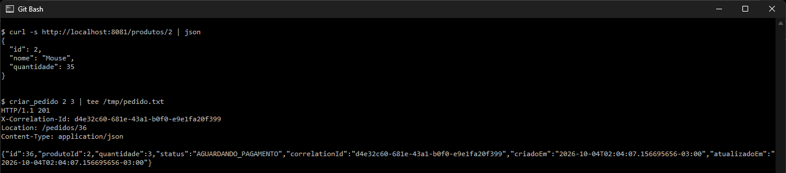
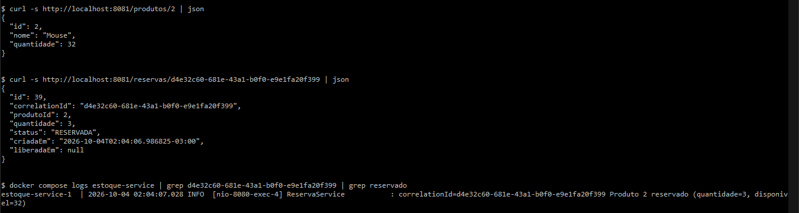
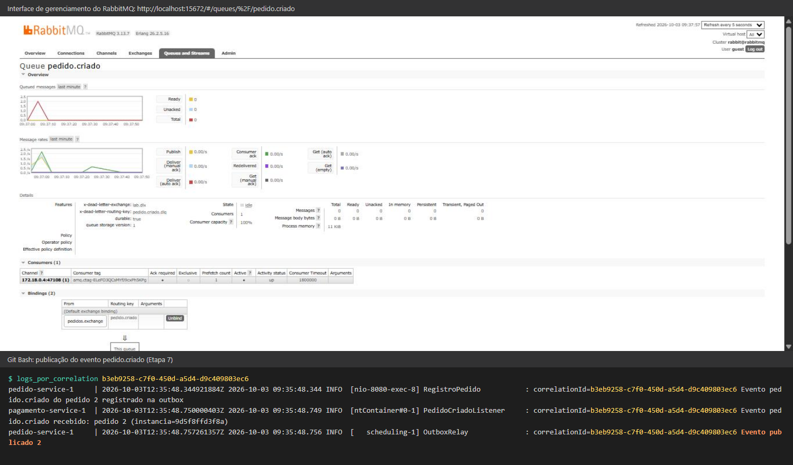
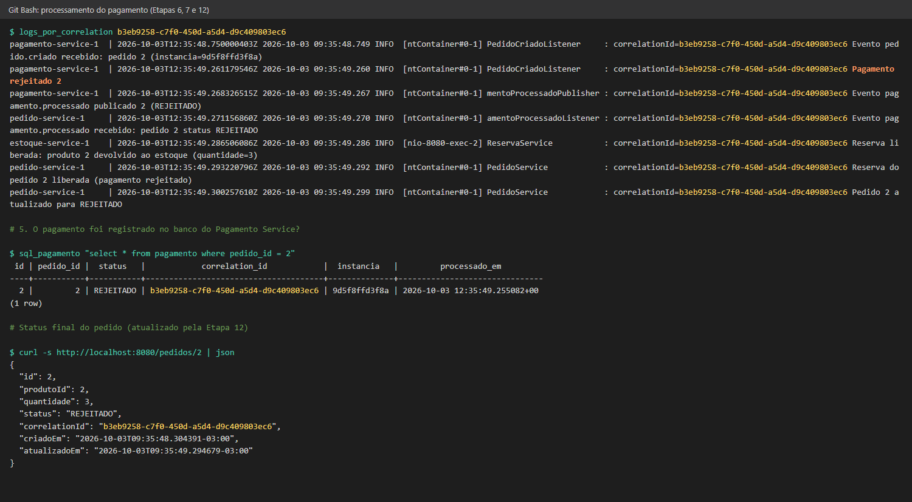

Padrões de Arquitetura de Software · 2026/2
Universidade Federal de Goiás
Alany Gabriely Lourenço da Silva
Matrícula 202105018
Trabalho realizado individualmente. Cobre as responsabilidades do Aluno A (Pedido Service), do Aluno B (Estoque Service) e todas as etapas conjuntas.
Estoque Service · Pedido Service · Pagamento Service
Java 17 · Spring Boot 3.5 · PostgreSQL 16 · RabbitMQ 3.13 · Docker Compose
A plataforma tem três microsserviços independentes, cada um com o próprio banco PostgreSQL:
pedido.criado no RabbitMQ.pedido.criado, aprova (~80%) ou rejeita (~20%) o pagamento, persiste o resultado e publica pagamento.processado, que o Pedido consome para atualizar o status (Etapa 12).O enunciado aceita "modificações no projeto devido a incompletude e/ou falhas conceituais na descrição". A tabela abaixo lista todas as diferenças em relação à descrição original e o motivo de cada uma. Nenhuma delas altera os contratos pedidos: endpoints, códigos HTTP, mensagens de erro, nomes de exchange, fila e routing key, formatos JSON dos eventos, status do pedido e formato dos logs.
| # | Falha ou lacuna no enunciado | Consequência se implementado ao pé da letra | Correção adotada |
|---|---|---|---|
| 1 | pedido-service depende do estoque com condition: service_started. |
"Iniciado" não significa "pronto". As primeiras requisições podem falhar com o Estoque ainda subindo. | Healthcheck (/actuator/health) nos três serviços e condition: service_healthy. |
| 2 | A regra da reserva é descrita como "verificar e reduzir", sem tratar concorrência. | Ler a quantidade, comparar e salvar permite que duas reservas simultâneas vendam a mesma unidade (lost update), sobretudo com o serviço escalado. | Reserva feita num único UPDATE produto SET quantidade = quantidade - q WHERE id = ? AND quantidade >= q, atômico no banco. Há também um CHECK (quantidade >= 0) na tabela. |
| 3 | A quantidade da reserva não é validada. | {"quantidade": -5} aumentaria o estoque. |
Quantidade ≤ 0 retorna 400 e não altera o estoque. |
| 4 | A Etapa 3 pede para pensar em como desfazer a reserva, mas o Estoque não tem operação para isso. | Não há como compensar uma reserva órfã. | Toda reserva é registrada na tabela reserva com o correlationId da requisição. O endpoint PUT /reservas/{correlationId}/liberar desfaz a reserva de forma idempotente, e a reserva repetida com o mesmo correlationId não debita duas vezes. |
| 5 | O pagamento REJEITADO não devolve o estoque. | Cada pedido rejeitado "vaza" estoque para sempre. | Ao receber pagamento.processado com REJEITADO, o Pedido aciona a compensação (libera a reserva) antes de marcar o pedido como REJEITADO. |
| 6 | "Criar pedido" e "publicar evento" são duas escritas em sistemas diferentes (banco e broker), sem atomicidade (dual write). | Se o RabbitMQ estiver fora do ar ou o processo cair entre o commit e a publicação, surge um pedido que nunca será pago, sem nenhum rastro. | Transactional Outbox: o evento é gravado na tabela outbox_evento na mesma transação do pedido. Um relay publica os pendentes e só os marca como PUBLICADO após o publisher confirm do broker e a confirmação de que a mensagem foi roteada para uma fila (mandatory). |
| 7 | O RabbitMQ entrega "pelo menos uma vez", e o enunciado não trata mensagens duplicadas. | Uma reentrega (queda do consumidor antes do ack, retry) cobraria o mesmo pedido duas vezes, possivelmente com resultados diferentes. | Consumidor idempotente: pedido_id UNIQUE na tabela pagamento. Se o pagamento já existe, o resultado gravado é reenviado sem novo sorteio. No Pedido, a máquina de estados ignora eventos repetidos. |
| 8 | Não há tratamento de mensagens que falham sempre (poison messages). | Com o requeue padrão, a mensagem volta infinitamente e trava o consumidor. | 3 tentativas com backoff (1 s, 2 s). Depois disso, a mensagem vai para a dead-letter queue (pedido.criado.dlq, pagamento.processado.dlq), via exchange lab.dlx. |
| 9 | O enunciado não define o exchange do evento pagamento.processado. |
(lacuna) | Exchange pagamentos.exchange (topic), de propriedade do Pagamento. A fila pagamento.processado é do consumidor (Pedido). |
| 10 | O banco por serviço é só uma regra de convenção ("é proibido consultar…"). Todos os contêineres ficam na mesma rede. | Nada impede tecnicamente o acesso indevido. | Uma rede Docker privada por banco: cada serviço só resolve o nome do próprio banco. O isolamento é demonstrável (Etapa 4). |
| 11 | O RabbitMQ não tem volume nem hostname fixo. | Recriar o contêiner apaga filas e mensagens persistentes. | hostname: rabbitmq e o volume rabbitmq-data. |
| 12 | O correlationId aparece só nos logs. | Para investigar um pedido (Etapa 11) a partir do id informado pelo usuário, seria preciso garimpar logs. | O correlationId é gravado no pedido, na reserva e no pagamento, devolvido no cabeçalho X-Correlation-Id e propagado em cabeçalho HTTP, corpo e propriedades AMQP. |
| 13 | A mensagem de erro 404 aparece como "Produto inexistente?". |
A interrogação parece erro de digitação. | Resposta {"mensagem": "Produto inexistente"}. |
| 14 | O RestTemplate não tem timeouts. |
Uma lentidão do Estoque prenderia threads do Pedido indefinidamente (falha em cascata). | Timeouts de 2 s (conexão) e 5 s (leitura). Erros de rede viram 503, com compensação preventiva. |
Além dessas correções, o compose tem ajustes operacionais, que não são correções ao enunciado, mas também são declarados aqui: mem_limit: 512m e opções enxutas da JVM (a máquina de teste tem 7,7 GB de RAM); restart: on-failure, para que o Pedido volte sozinho depois da queda simulada na Etapa 3; TZ: America/Sao_Paulo, para que logs e datas fiquem no horário local; e PAGAMENTO_TEMPO_PROCESSAMENTO_MS=500, um atraso proposital de 0,5 s no processamento de cada pagamento, que simula a chamada a um gateway de pagamento e torna observáveis a fila e a distribuição entre instâncias (Etapas 5, 9 e 10). A decisão aprovado/rejeitado continua sendo um sorteio com probabilidade 0,8.
Também foram adicionadas simulações de falha controladas para o experimento de consistência da Etapa 3. O cabeçalho X-Simular-Falha aceita ERRO_APOS_RESERVA (exceção) e QUEDA_APOS_RESERVA (encerra a JVM com Runtime.halt). Ele só tem efeito quando LAB_SIMULACAO_FALHAS_HABILITADA=true.
Máquina de estados do pedido: AGUARDANDO_PAGAMENTO → PAGO ou AGUARDANDO_PAGAMENTO → REJEITADO. Não há outras transições: um pedido decidido não muda mais, e um evento repetido é ignorado.
Contratos de mensagens
| Exchange (tipo) | Routing key / fila | Produtor | Consumidor | Corpo JSON |
|---|---|---|---|---|
pedidos.exchange (topic) |
pedido.criado |
Pedido | Pagamento | {"pedidoId", "produtoId", "quantidade", "correlationId"} |
pagamentos.exchange (topic) |
pagamento.processado |
Pagamento | Pedido | {"pedidoId", "status", "correlationId"}, com status APROVADO ou REJEITADO |
lab.dlx (direct) |
pedido.criado.dlq, pagamento.processado.dlq |
broker (dead-letter) | inspeção manual | mensagem original |
Mensagens persistentes (delivery_mode = 2), filas duráveis, correlation_id e message_id preenchidos nas propriedades AMQP, prefetch = 1 e ack automático só após o listener terminar sem exceção.
O código completo está no Apêndice A, na pasta microservices-lab entregue junto com este documento e no repositório https://github.com/AlanyLourenco/microservices-lab.
microservices-lab/
├── pedido-service/ (Aluno A) → pedido-db
├── estoque-service/ (Aluno B) → estoque-db
├── pagamento-service/ → pagamento-db
├── docker-compose.yml
├── scripts/ roteiros dos experimentos (geram evidencias/)
└── docs/ diagramas e este documento
| Serviço | Classes principais | Responsabilidade |
|---|---|---|
| Estoque | ProdutoController, ReservaService, ProdutoRepository.debitar/creditar, ReservaController |
Endpoints da Etapa 1. Reserva atômica e idempotente; liberação (compensação). |
| Pedido | PedidoController, PedidoService, EstoqueClient, RegistroPedido, OutboxRelay, PagamentoProcessadoListener |
Etapas 2, 3, 5, 11 e 12: orquestração (Saga), outbox, correlationId, atualização do status. |
| Pagamento | PedidoCriadoListener, PagamentoService, DecisorPagamento, PagamentoProcessadoPublisher |
Etapas 6 e 12: consumo idempotente, decisão 80/20, persistência, publicação do resultado. |
Testes automatizados (mvn test em cada serviço; H2 em modo PostgreSQL com as mesmas migrations Flyway):
Os trechos centrais de cada regra:
Reserva atômica (Estoque): ProdutoRepository
@Modifying(clearAutomatically = true, flushAutomatically = true)
@Query("update Produto p set p.quantidade = p.quantidade - :quantidade "
+ "where p.id = :id and p.quantidade >= :quantidade")
int debitar(@Param("id") Long id, @Param("quantidade") int quantidade); // 0 = insuficiente → 409
Orquestração e compensação (Pedido): PedidoService.criar
estoque.reservar(produtoId, quantidade, correlationId); // 409/404 → nada é criado
try {
simularFalhaAposReserva(simulacao, correlationId);
pedido = registro.registrarComEvento(produtoId, quantidade, correlationId); // pedido + outbox, 1 transação
} catch (RuntimeException e) {
compensarReserva(correlationId); // PUT /reservas/{cid}/liberar
throw new PedidoNaoCriadoException();
}
log.info("correlationId={} Pedido {} criado", correlationId, pedido.getId());
Consumidor idempotente (Pagamento): PagamentoService.processar
Optional<Pagamento> existente = pagamentos.findByPedidoId(pedidoId);
if (existente.isPresent()) return new Resultado(existente.get(), false); // reentrega: sem novo sorteio
Pagamento pagamento = pagamentos.save(new Pagamento(pedidoId, decisor.decidir(), correlationId, instancia));
As correções em relação ao compose do enunciado estão descritas nos itens 1, 10 e 11 da tabela da Seção 1, seguidas dos ajustes operacionais, e comentadas no próprio arquivo. A estrutura do compose do enunciado (serviços, imagens, portas, variáveis, healthchecks dos bancos e volumes) foi mantida.
# Laboratório Avaliativo — Arquitetura de Microsserviços
# Alany Gabriely Lourenço da Silva · Matrícula 202105018
#
# Baseado no compose da Etapa 4, com as correções descritas no documento de entrega:
# - pedido-service espera o estoque-service ficar SAUDÁVEL (service_healthy), e não
# apenas "iniciado": um contêiner iniciado ainda não está aceitando requisições;
# - healthcheck nos três serviços (via /actuator/health);
# - RabbitMQ com hostname fixo e volume, para que filas e mensagens persistentes
# sobrevivam à recriação do contêiner;
# - uma rede privada por banco: cada serviço só alcança o PRÓPRIO banco. A regra
# "é proibido consultar o banco de outro serviço" vira uma garantia de
# infraestrutura, e não só uma convenção;
# - limites de memória (a máquina de teste tem 7,7 GB de RAM), restart on-failure,
# fuso horário local e um atraso de 0,5 s por pagamento (PAGAMENTO_TEMPO_PROCESSAMENTO_MS),
# que simula o gateway e torna a fila observável.
name: microservices-lab
x-java-runtime: &java-runtime
TZ: America/Sao_Paulo
JAVA_TOOL_OPTIONS: "-XX:MaxRAMPercentage=70 -XX:+UseSerialGC -XX:TieredStopAtLevel=1 -Xss512k"
x-service-healthcheck: &service-healthcheck
test: ["CMD", "curl", "-fs", "http://localhost:8080/actuator/health"]
interval: 10s
timeout: 3s
retries: 12
start_period: 60s
services:
rabbitmq:
image: rabbitmq:3.13-management
hostname: rabbitmq
ports:
- "5672:5672"
- "15672:15672"
volumes:
- rabbitmq-data:/var/lib/rabbitmq
networks:
- backend
healthcheck:
test: ["CMD", "rabbitmq-diagnostics", "-q", "ping"]
interval: 10s
timeout: 5s
retries: 10
estoque-db:
image: postgres:16
environment:
POSTGRES_DB: estoque
POSTGRES_USER: estoque
POSTGRES_PASSWORD: estoque
volumes:
- estoque-data:/var/lib/postgresql/data
networks:
- estoque-net
healthcheck:
test: ["CMD-SHELL", "pg_isready -U estoque -d estoque"]
interval: 5s
timeout: 3s
retries: 10
pedido-db:
image: postgres:16
environment:
POSTGRES_DB: pedido
POSTGRES_USER: pedido
POSTGRES_PASSWORD: pedido
volumes:
- pedido-data:/var/lib/postgresql/data
networks:
- pedido-net
healthcheck:
test: ["CMD-SHELL", "pg_isready -U pedido -d pedido"]
interval: 5s
timeout: 3s
retries: 10
pagamento-db:
image: postgres:16
environment:
POSTGRES_DB: pagamento
POSTGRES_USER: pagamento
POSTGRES_PASSWORD: pagamento
volumes:
- pagamento-data:/var/lib/postgresql/data
networks:
- pagamento-net
healthcheck:
test: ["CMD-SHELL", "pg_isready -U pagamento -d pagamento"]
interval: 5s
timeout: 3s
retries: 10
estoque-service:
build: ./estoque-service
ports:
- "8081:8080"
environment:
<<: *java-runtime
SPRING_DATASOURCE_URL: jdbc:postgresql://estoque-db:5432/estoque
SPRING_DATASOURCE_USERNAME: estoque
SPRING_DATASOURCE_PASSWORD: estoque
networks:
- backend
- estoque-net
mem_limit: 512m
restart: on-failure
healthcheck: *service-healthcheck
depends_on:
estoque-db:
condition: service_healthy
pedido-service:
build: ./pedido-service
ports:
- "8080:8080"
environment:
<<: *java-runtime
SPRING_DATASOURCE_URL: jdbc:postgresql://pedido-db:5432/pedido
SPRING_DATASOURCE_USERNAME: pedido
SPRING_DATASOURCE_PASSWORD: pedido
SPRING_RABBITMQ_HOST: rabbitmq
ESTOQUE_SERVICE_URL: http://estoque-service:8080
# habilita o cabeçalho X-Simular-Falha (experimento de consistência da Etapa 3)
LAB_SIMULACAO_FALHAS_HABILITADA: "true"
networks:
- backend
- pedido-net
mem_limit: 512m
# on-failure: depois da simulação QUEDA_APOS_RESERVA (Runtime.halt), o Docker
# reinicia o serviço sozinho. "docker compose stop" não dispara o reinício.
restart: on-failure
healthcheck: *service-healthcheck
depends_on:
pedido-db:
condition: service_healthy
rabbitmq:
condition: service_healthy
estoque-service:
condition: service_healthy
pagamento-service:
build: ./pagamento-service
# Sem "ports": com uma porta fixa no host, a segunda réplica não subiria na Etapa 10
# (porta já em uso). "expose" deixa a porta visível só dentro da rede do Compose.
expose:
- "8080"
environment:
<<: *java-runtime
SPRING_DATASOURCE_URL: jdbc:postgresql://pagamento-db:5432/pagamento
SPRING_DATASOURCE_USERNAME: pagamento
SPRING_DATASOURCE_PASSWORD: pagamento
SPRING_RABBITMQ_HOST: rabbitmq
PAGAMENTO_TAXA_APROVACAO: "0.8"
PAGAMENTO_TEMPO_PROCESSAMENTO_MS: "500"
networks:
- backend
- pagamento-net
mem_limit: 512m
restart: on-failure
healthcheck: *service-healthcheck
depends_on:
pagamento-db:
condition: service_healthy
rabbitmq:
condition: service_healthy
networks:
# Rede compartilhada: chamadas REST (Pedido -> Estoque) e acesso ao RabbitMQ.
backend:
# Redes privadas: cada banco só é alcançável pelo próprio serviço.
estoque-net:
pedido-net:
pagamento-net:
volumes:
estoque-data:
pedido-data:
pagamento-data:
rabbitmq-data:Cada serviço é construído pelo próprio Dockerfile, em dois estágios: compilação com Maven e imagem final só com a JRE.
# syntax=docker/dockerfile:1
# Estágio 1: compila o serviço com Maven. O cache de ~/.m2 é compartilhado entre os
# builds dos três serviços, então as dependências são baixadas uma vez só.
FROM maven:3.9-eclipse-temurin-17 AS build
WORKDIR /build
COPY pom.xml .
COPY src ./src
RUN --mount=type=cache,target=/root/.m2 mvn -B -q -DskipTests package
# Estágio 2: imagem final só com a JRE e o .jar (sem Maven nem código-fonte).
FROM eclipse-temurin:17-jre
RUN apt-get update \
&& apt-get install -y --no-install-recommends curl \
&& rm -rf /var/lib/apt/lists/*
WORKDIR /app
COPY --from=build /build/target/app.jar app.jar
EXPOSE 8080
ENTRYPOINT ["java", "-jar", "/app/app.jar"]



As três regras foram verificadas chamando o Estoque diretamente: 200 reduz a quantidade; 409 {"mensagem": "Estoque insuficiente"} e 404 {"mensagem": "Produto inexistente"} não alteram o estoque.
######## ETAPA 1: ESTOQUE SERVICE ########
# Endpoint 1: consultar todos os produtos (dados iniciais: Notebook 10, Mouse 50, Teclado 20)
$ curl -s http://localhost:8081/produtos | json
[
{
"id": 1,
"nome": "Notebook",
"quantidade": 10
},
{
"id": 2,
"nome": "Mouse",
"quantidade": 50
},
{
"id": 3,
"nome": "Teclado",
"quantidade": 20
}
]
# Endpoint 2: consultar produto
$ curl -s http://localhost:8081/produtos/1 | json
{
"id": 1,
"nome": "Notebook",
"quantidade": 10
}
$ curl -s -w '\nHTTP %{http_code}\n' http://localhost:8081/produtos/99
{"mensagem":"Produto inexistente"}
HTTP 404
# Endpoint 3, regra 1: produto existe e há quantidade suficiente -> reduz e retorna 200
$ curl -s -w '\nHTTP %{http_code}\n' -X PUT http://localhost:8081/produtos/2/reservar -H 'Content-Type: application/json' -d '{"quantidade": 2}'
{"id":2,"nome":"Mouse","quantidade":48}
HTTP 200
$ curl -s http://localhost:8081/produtos/2 | json
{
"id": 2,
"nome": "Mouse",
"quantidade": 48
}
# Regra 2: quantidade maior que a disponível -> 409 e o estoque NÃO muda
$ curl -s -w '\nHTTP %{http_code}\n' -X PUT http://localhost:8081/produtos/2/reservar -H 'Content-Type: application/json' -d '{"quantidade": 1000}'
{"mensagem":"Estoque insuficiente"}
HTTP 409
$ curl -s http://localhost:8081/produtos/2 | json
{
"id": 2,
"nome": "Mouse",
"quantidade": 48
}
# Regra 3: produto inexistente -> 404 e o estoque NÃO muda
$ curl -s -w '\nHTTP %{http_code}\n' -X PUT http://localhost:8081/produtos/99/reservar -H 'Content-Type: application/json' -d '{"quantidade": 1}'
{"mensagem":"Produto inexistente"}
HTTP 404
# Correção: quantidade negativa ou zero -> 400 (sem isso, -5 AUMENTARIA o estoque)
$ curl -s -w '\nHTTP %{http_code}\n' -X PUT http://localhost:8081/produtos/2/reservar -H 'Content-Type: application/json' -d '{"quantidade": -5}'
{"mensagem":"Quantidade deve ser um inteiro maior que zero"}
HTTP 400
$ curl -s http://localhost:8081/produtos/2 | json
{
"id": 2,
"nome": "Mouse",
"quantidade": 48
}
# Devolvendo as 2 unidades reservadas acima, para não interferir nas próximas etapas
$ curl -s -X PUT http://localhost:8081/reservas/a13f1779-84d9-4bdc-af9e-3de076e53c02/liberar | json
{
"id": 1,
"correlationId": "a13f1779-84d9-4bdc-af9e-3de076e53c02",
"produtoId": 2,
"quantidade": 2,
"status": "LIBERADA",
"criadaEm": "2026-10-03T09:35:11.607823-03:00",
"liberadaEm": "2026-10-03T09:35:12.183623866-03:00"
}
$ curl -s http://localhost:8081/produtos/2 | json
{
"id": 2,
"nome": "Mouse",
"quantidade": 50
}Todo pedido nasce AGUARDANDO_PAGAMENTO: o construtor da entidade Pedido fixa esse status, o que o teste de contexto e a Etapa 7 confirmam. A única transição possível é para PAGO ou REJEITADO (Pedido.registrarResultadoPagamento). GET /pedidos e GET /pedidos/{id} aparecem nas evidências das Etapas 8, 11 e 12.
A regra de negócio foi verificada assim: com estoque, a reserva acontece antes da criação do pedido e o evento é gravado junto com o pedido. Sem estoque, o Pedido repassa o 409 do Estoque e as contagens de pedidos e de eventos na outbox não mudam.
######## ETAPA 3: INTEGRAÇÃO REST E REGRA DE NEGÓCIO ########
# Estoque do Notebook (produto 1) antes
$ curl -s http://localhost:8081/produtos/1 | json
{
"id": 1,
"nome": "Notebook",
"quantidade": 10
}
# COM estoque: reservar -> criar pedido -> publicar evento. Resposta 201, status AGUARDANDO_PAGAMENTO
$ criar_pedido 1 2
HTTP/1.1 201
X-Correlation-Id: a1822da8-7c16-4889-9bd5-945d49d21a98
Location: /pedidos/1
Content-Type: application/json
{"id":1,"produtoId":1,"quantidade":2,"status":"AGUARDANDO_PAGAMENTO","correlationId":"a1822da8-7c16-4889-9bd5-945d49d21a98","criadoEm":"2026-10-03T09:35:12.702889218-03:00","atualizadoEm":"2026-10-03T09:35:12.702889218-03:00"}
$ curl -s http://localhost:8081/produtos/1 | json
{
"id": 1,
"nome": "Notebook",
"quantidade": 8
}
# SEM estoque: não cria pedido, não publica evento, retorna erro (409 vindo do Estoque)
$ sql_pedido 'select count(*) as pedidos from pedido'
pedidos
---------
1
(1 row)
$ sql_pedido 'select count(*) as eventos_outbox from outbox_evento'
eventos_outbox
----------------
1
(1 row)
$ criar_pedido 1 999
HTTP/1.1 409
X-Correlation-Id: 47ca2fd9-8e0a-43c6-b09e-1d7328297540
Content-Type: application/json
{"mensagem":"Estoque insuficiente"}
$ sql_pedido 'select count(*) as pedidos from pedido'
pedidos
---------
1
(1 row)
$ sql_pedido 'select count(*) as eventos_outbox from outbox_evento'
eventos_outbox
----------------
1
(1 row)
# Produto inexistente: 404, nenhum pedido criado
$ criar_pedido 99 1
HTTP/1.1 404
X-Correlation-Id: 281799bb-2a43-42b9-86bb-666ac6935f1b
Content-Type: application/json
{"mensagem":"Produto inexistente"}O experimento foi feito em dois cenários, porque o tipo da falha muda o resultado:
QUEDA_APOS_RESERVA, Runtime.halt): simula queda de energia ou kill -9. Nenhum catch/finally roda.ERRO_APOS_RESERVA): uma exceção depois da reserva, com o processo ainda vivo.1. O que aconteceu com o estoque?
No cenário A, o estoque foi debitado e permaneceu debitado: o Teclado passou de 20 para 16, e a reserva ficou com status RESERVADA sem nenhum pedido correspondente (reserva órfã). O Estoque cumpriu sua parte e confirmou a transação local dele. Ele não sabe, nem tem como saber, que o Pedido morreu em seguida. No cenário B, o estoque também foi debitado, mas a compensação o devolveu logo em seguida: a reserva aparece LIBERADA e a quantidade volta ao valor anterior.
2. O pedido foi criado?
Não, em nenhum dos dois cenários. A contagem de pedidos e a busca pelo correlationId da requisição retornam zero. No cenário A o processo morreu antes do INSERT. No B, o cliente recebeu 500 {"mensagem": "Falha ao criar o pedido; a reserva de estoque foi desfeita"}. Como o evento só é gravado na outbox junto com o pedido, também não houve evento.
3. Existe uma transação única envolvendo os dois serviços?
Não. Cada serviço tem uma transação local no próprio banco: o Estoque fez commit do débito em estoque-db antes de responder 200, e o Pedido grava em pedido-db em outra transação, depois. A chamada HTTP não propaga contexto transacional. Uma transação distribuída (2PC/XA) exigiria um coordenador e que os dois bancos travassem recursos à espera dele. Isso acopla a disponibilidade dos serviços (se um cai, o outro fica bloqueado), contraria a autonomia dos microsserviços e não é suportado pelo RabbitMQ nem por HTTP/REST. Por isso, nesta arquitetura a consistência entre serviços é eventual e precisa ser construída pela aplicação.
4. Como o sistema poderia desfazer a reserva realizada?
Executando a operação inversa no serviço dono do dado: o Pedido pede ao Estoque, pela API, que libere a reserva. Nunca alterando o banco do Estoque diretamente. Foi o que implementei: cada reserva é registrada com o correlationId da requisição, e PUT /reservas/{correlationId}/liberar devolve a quantidade uma única vez (idempotente), o que permite repetir a chamada com segurança após um timeout. O cenário B mostra a compensação automática no log: Compensação executada: reserva de estoque desfeita.
O cenário A mostra o limite dessa solução: se o processo morre, o código de compensação não roda. Para cobrir esse caso, é preciso que o estado da saga sobreviva à queda. As alternativas são: (a) registrar a intenção em banco antes de reservar e ter um processo de recuperação que retome ou compense as sagas inacabadas na reinicialização; (b) uma reconciliação periódica no Estoque, que libere reservas RESERVADA sem pedido confirmado após um prazo; (c) reservas com expiração (TTL), que só se tornam definitivas quando o Pedido as confirma. No experimento, a reserva órfã foi liberada manualmente pelo mesmo endpoint, que é o que uma reconciliação faria de forma automática.
5. Que mecanismo poderia ser utilizado para realizar essa compensação?
O padrão Saga: uma transação de negócio dividida em transações locais, cada uma com uma transação compensatória, executada em ordem inversa quando um passo posterior falha. Aqui a saga é orquestrada: o Pedido Service coordena os passos e dispara as compensações. Ela é usada em dois pontos: na falha da criação do pedido e no pagamento rejeitado, que libera a reserva (Etapa 12). Uma alternativa seria a saga coreografada, em que cada serviço reage a eventos (por exemplo, o Estoque consumiria pedido.cancelado). Para que a saga seja confiável, ela depende de mecanismos de apoio já presentes no projeto: idempotência (as compensações podem ser repetidas), Transactional Outbox (eventos não se perdem) e retentativa com DLQ (falhas transitórias são reprocessadas).
######## EXPERIMENTO DE CONSISTÊNCIA: FALHA APÓS A RESERVA E ANTES DA CRIAÇÃO DO PEDIDO ########
# Cenário A: o processo do Pedido Service CAI (Runtime.halt) logo após a reserva
$ curl -s http://localhost:8081/produtos/3 | json
{
"id": 3,
"nome": "Teclado",
"quantidade": 20
}
$ sql_pedido 'select count(*) as pedidos from pedido'
pedidos
---------
1
(1 row)
$ criar_pedido 3 4 QUEDA_APOS_RESERVA; echo "(curl exit=$?: conexão encerrada sem resposta)"
(curl exit=1: conexão encerrada sem resposta)
# O Estoque foi debitado?
$ curl -s http://localhost:8081/produtos/3 | json
{
"id": 3,
"nome": "Teclado",
"quantidade": 16
}
# Reserva órfã no Estoque (correlationId 5ff59c73-3498-47f1-9029-95d9224e58e4)
$ curl -s http://localhost:8081/reservas/5ff59c73-3498-47f1-9029-95d9224e58e4 | json
{
"id": 3,
"correlationId": "5ff59c73-3498-47f1-9029-95d9224e58e4",
"produtoId": 3,
"quantidade": 4,
"status": "RESERVADA",
"criadaEm": "2026-10-03T09:35:14.728878-03:00",
"liberadaEm": null
}
# O pedido foi criado? (contagem e busca pelo correlationId)
$ docker compose ps pedido-service
NAME IMAGE COMMAND SERVICE CREATED STATUS PORTS
microservices-lab-pedido-service-1 microservices-lab-pedido-service "java -jar /app/app.…" pedido-service 35 seconds ago Up 2 seconds (health: starting) 0.0.0.0:8080->8080/tcp, [::]:8080->8080/tcp
pedido-service saudável
$ sql_pedido "select count(*) as pedidos, count(*) filter (where correlation_id = '5ff59c73-3498-47f1-9029-95d9224e58e4') as pedidos_deste_cid from pedido"
pedidos | pedidos_deste_cid
---------+-------------------
1 | 0
(1 row)
# Logs do incidente: o Estoque reservou e o Pedido morreu antes de gravar. Nenhuma compensação rodou.
$ logs_por_correlation 5ff59c73-3498-47f1-9029-95d9224e58e4
pedido-service-1 | 2026-10-03T12:35:14.718907658Z 2026-10-03 09:35:14.718 INFO [nio-8080-exec-8] PedidoService : correlationId=5ff59c73-3498-47f1-9029-95d9224e58e4 Requisição de pedido recebida (produto=3, quantidade=4)
estoque-service-1 | 2026-10-03T12:35:14.731342244Z 2026-10-03 09:35:14.731 INFO [nio-8080-exec-9] ReservaService : correlationId=5ff59c73-3498-47f1-9029-95d9224e58e4 Produto 3 reservado (quantidade=4, disponivel=16)
pedido-service-1 | 2026-10-03T12:35:14.736893634Z 2026-10-03 09:35:14.736 INFO [nio-8080-exec-8] EstoqueClient : correlationId=5ff59c73-3498-47f1-9029-95d9224e58e4 Estoque do produto 3 reservado via REST (quantidade=4)
pedido-service-1 | 2026-10-03T12:35:14.736921306Z 2026-10-03 09:35:14.736 ERROR [nio-8080-exec-8] PedidoService : correlationId=5ff59c73-3498-47f1-9029-95d9224e58e4 [SIMULAÇÃO] Queda do processo após a reserva e antes da criação do pedido
$ docker compose logs --no-color pedido-service | grep -E 'exited|Started PedidoApplication' | tail -3
pedido-service-1 | 2026-10-03 09:35:10.030 INFO [ main] PedidoApplication : Started PedidoApplication in 4.81 seconds (process running for 5.214)
pedido-service-1 | 2026-10-03 09:35:20.901 INFO [ main] PedidoApplication : Started PedidoApplication in 4.921 seconds (process running for 5.282)
# Compensação manual (o que uma Saga/reconciliação faria automaticamente): liberar a reserva órfã
$ curl -s -X PUT http://localhost:8081/reservas/5ff59c73-3498-47f1-9029-95d9224e58e4/liberar | json
{
"id": 3,
"correlationId": "5ff59c73-3498-47f1-9029-95d9224e58e4",
"produtoId": 3,
"quantidade": 4,
"status": "LIBERADA",
"criadaEm": "2026-10-03T09:35:14.728878-03:00",
"liberadaEm": "2026-10-03T09:35:23.930986734-03:00"
}
$ curl -s http://localhost:8081/produtos/3 | json
{
"id": 3,
"nome": "Teclado",
"quantidade": 20
}
# Cenário B: ERRO (exceção) após a reserva. O processo segue vivo e executa a compensação.
$ curl -s http://localhost:8081/produtos/3 | json
{
"id": 3,
"nome": "Teclado",
"quantidade": 20
}
$ criar_pedido 3 4 ERRO_APOS_RESERVA
HTTP/1.1 500
X-Correlation-Id: e86e9460-5f99-4531-9530-d9904ad3df40
Content-Type: application/json
{"mensagem":"Falha ao criar o pedido; a reserva de estoque foi desfeita"}
$ curl -s http://localhost:8081/produtos/3 | json
{
"id": 3,
"nome": "Teclado",
"quantidade": 20
}
$ curl -s http://localhost:8081/reservas/e86e9460-5f99-4531-9530-d9904ad3df40 | json
{
"id": 4,
"correlationId": "e86e9460-5f99-4531-9530-d9904ad3df40",
"produtoId": 3,
"quantidade": 4,
"status": "LIBERADA",
"criadaEm": "2026-10-03T09:35:24.276023-03:00",
"liberadaEm": "2026-10-03T09:35:24.298705-03:00"
}
$ sql_pedido "select count(*) as pedidos_deste_cid from pedido where correlation_id = 'e86e9460-5f99-4531-9530-d9904ad3df40'"
pedidos_deste_cid
-------------------
0
(1 row)
$ logs_por_correlation e86e9460-5f99-4531-9530-d9904ad3df40
pedido-service-1 | 2026-10-03T12:35:24.223172354Z 2026-10-03 09:35:24.222 INFO [nio-8080-exec-2] PedidoService : correlationId=e86e9460-5f99-4531-9530-d9904ad3df40 Requisição de pedido recebida (produto=3, quantidade=4)
estoque-service-1 | 2026-10-03T12:35:24.279087659Z 2026-10-03 09:35:24.278 INFO [nio-8080-exec-1] ReservaService : correlationId=e86e9460-5f99-4531-9530-d9904ad3df40 Produto 3 reservado (quantidade=4, disponivel=16)
pedido-service-1 | 2026-10-03T12:35:24.294171048Z 2026-10-03 09:35:24.293 INFO [nio-8080-exec-2] EstoqueClient : correlationId=e86e9460-5f99-4531-9530-d9904ad3df40 Estoque do produto 3 reservado via REST (quantidade=4)
pedido-service-1 | 2026-10-03T12:35:24.294316272Z 2026-10-03 09:35:24.294 WARN [nio-8080-exec-2] PedidoService : correlationId=e86e9460-5f99-4531-9530-d9904ad3df40 [SIMULAÇÃO] Erro após a reserva e antes da criação do pedido
pedido-service-1 | 2026-10-03T12:35:24.294328235Z 2026-10-03 09:35:24.294 ERROR [nio-8080-exec-2] PedidoService : correlationId=e86e9460-5f99-4531-9530-d9904ad3df40 Falha ao criar o pedido depois da reserva do estoque: Falha simulada após a reserva do estoque
estoque-service-1 | 2026-10-03T12:35:24.301102916Z 2026-10-03 09:35:24.300 INFO [nio-8080-exec-2] ReservaService : correlationId=e86e9460-5f99-4531-9530-d9904ad3df40 Reserva liberada: produto 3 devolvido ao estoque (quantidade=4)
pedido-service-1 | 2026-10-03T12:35:24.306573584Z 2026-10-03 09:35:24.306 INFO [nio-8080-exec-2] PedidoService : correlationId=e86e9460-5f99-4531-9530-d9904ad3df40 Compensação executada: reserva de estoque desfeitaPedido consegue acessar Estoque? Sim. Pela rede backend do Compose, o Pedido resolve o nome estoque-service pelo DNS interno do Docker e chama http://estoque-service:8080 (variável ESTOQUE_SERVICE_URL). O endereço é o nome do serviço, não um IP. A evidência mostra o GET /produtos feito de dentro do contêiner do Pedido retornando 200.
Ficou demonstrado também o banco por serviço: cada serviço resolve apenas o nome do próprio banco. pedido-service não encontra estoque-db, e pagamento-service não encontra pedido-db (getent retorna 2, "nome não encontrado"; a tentativa de conexão com curl à porta 5432 não se completa e termina por tempo esgotado, código 28). Os quatro requisitos de demonstração do enunciado ficam atendidos por infraestrutura, não só por convenção:
######## ETAPA 4: DOCKER COMPOSE ########
$ docker compose ps --format 'table {{.Service}}\t{{.State}}\t{{.Status}}\t{{.Ports}}'
SERVICE STATE STATUS PORTS
estoque-db running Up 42 seconds (healthy) 5432/tcp
estoque-service running Up 31 seconds (healthy) 0.0.0.0:8081->8080/tcp, [::]:8081->8080/tcp
pagamento-db running Up 41 seconds (healthy) 5432/tcp
pagamento-service running Up 31 seconds (healthy) 8080/tcp
pedido-db running Up 42 seconds (healthy) 5432/tcp
pedido-service running Up 10 seconds (health: starting) 0.0.0.0:8080->8080/tcp, [::]:8080->8080/tcp
rabbitmq running Up 42 seconds (healthy) 0.0.0.0:5672->5672/tcp, [::]:5672->5672/tcp, 0.0.0.0:15672->15672/tcp, [::]:15672->15672/tcp
# Logs confirmando que os serviços subiram
$ docker compose logs --no-color estoque-service pedido-service pagamento-service | grep -E 'Started .*Application|Successfully applied|Schema .* is up to date'
estoque-service-1 | 2026-10-03 09:34:57.103 INFO [ main] DbMigrate : Successfully applied 2 migrations to schema "public", now at version v2 (execution time 00:00.026s)
pedido-service-1 | 2026-10-03 09:35:07.627 INFO [ main] DbMigrate : Successfully applied 2 migrations to schema "public", now at version v2 (execution time 00:00.034s)
pagamento-service-1 | 2026-10-03 09:34:57.497 INFO [ main] DbMigrate : Successfully applied 1 migration to schema "public", now at version v1 (execution time 00:00.017s)
estoque-service-1 | 2026-10-03 09:34:59.728 INFO [ main] EstoqueApplication : Started EstoqueApplication in 5.193 seconds (process running for 5.619)
pedido-service-1 | 2026-10-03 09:35:10.030 INFO [ main] PedidoApplication : Started PedidoApplication in 4.81 seconds (process running for 5.214)
pagamento-service-1 | 2026-10-03 09:35:00.201 INFO [ main] PagamentoApplication : Started PagamentoApplication in 5.38 seconds (process running for 5.765)
pedido-service-1 | 2026-10-03 09:35:18.465 INFO [ main] DbMigrate : Schema "public" is up to date. No migration necessary.
pedido-service-1 | 2026-10-03 09:35:20.901 INFO [ main] PedidoApplication : Started PedidoApplication in 4.921 seconds (process running for 5.282)
# Pedido consegue acessar Estoque? Chamada REST de dentro do contêiner do Pedido, pelo nome do serviço
$ docker compose exec -T pedido-service curl -s -w '\nHTTP %{http_code}\n' http://estoque-service:8080/produtos
[{"id":1,"nome":"Notebook","quantidade":8},{"id":2,"nome":"Mouse","quantidade":50},{"id":3,"nome":"Teclado","quantidade":20}]
HTTP 200
######## BANCO POR SERVIÇO: ISOLAMENTO DEMONSTRADO ########
# Cada serviço resolve o nome do PRÓPRIO banco...
$ docker compose exec -T estoque-service getent hosts estoque-db
172.19.0.2 estoque-db
$ docker compose exec -T pedido-service getent hosts pedido-db
172.20.0.2 pedido-db
$ docker compose exec -T pagamento-service getent hosts pagamento-db
172.21.0.2 pagamento-db
# ...mas o Pedido não alcança o banco do Estoque, e o Pagamento não alcança o banco do Pedido (redes distintas)
$ docker compose exec -T pedido-service getent hosts estoque-db; echo "exit=$? (2 = nome não encontrado)"
exit=2 (2 = nome não encontrado)
$ docker compose exec -T pedido-service curl -s --max-time 3 telnet://estoque-db:5432; echo "curl exit=$? (6 = host não resolvido; 28 = 3 s sem conectar; nos dois casos, sem acesso)"
curl exit=28 (6 = host não resolvido; 28 = 3 s sem conectar; nos dois casos, sem acesso)
$ docker compose exec -T pagamento-service getent hosts pedido-db; echo "exit=$? (2 = nome não encontrado)"
exit=2 (2 = nome não encontrado)
$ docker compose exec -T pagamento-service curl -s --max-time 3 telnet://pedido-db:5432; echo "curl exit=$? (6 = host não resolvido; 28 = 3 s sem conectar; nos dois casos, sem acesso)"
curl exit=28 (6 = host não resolvido; 28 = 3 s sem conectar; nos dois casos, sem acesso)
# Redes de cada contêiner
$ for c in $(docker compose ps -q); do docker inspect -f '{{.Name}} -> {{range $k, $v := .NetworkSettings.Networks}}{{$k}} {{end}}' $c; done
/microservices-lab-estoque-db-1 -> microservices-lab_estoque-net
/microservices-lab-estoque-service-1 -> microservices-lab_backend microservices-lab_estoque-net
/microservices-lab-pagamento-db-1 -> microservices-lab_pagamento-net
/microservices-lab-pagamento-service-1 -> microservices-lab_backend microservices-lab_pagamento-net
/microservices-lab-pedido-db-1 -> microservices-lab_pedido-net
/microservices-lab-pedido-service-1 -> microservices-lab_backend microservices-lab_pedido-net
/microservices-lab-rabbitmq-1 -> microservices-lab_backend
# Bancos distintos: cada um com as próprias tabelas
$ sql_estoque '\dt'
List of relations
Schema | Name | Type | Owner
--------+-----------------------+-------+---------
public | flyway_schema_history | table | estoque
public | produto | table | estoque
public | reserva | table | estoque
(3 rows)
$ sql_pedido '\dt'
List of relations
Schema | Name | Type | Owner
--------+-----------------------+-------+--------
public | flyway_schema_history | table | pedido
public | outbox_evento | table | pedido
public | pedido | table | pedido
(3 rows)
$ sql_pagamento '\dt'
List of relations
Schema | Name | Type | Owner
--------+-----------------------+-------+-----------
public | flyway_schema_history | table | pagamento
public | pagamento | table | pagamento
(2 rows)
######## ETAPA 5: RABBITMQ ########
# Exchanges (pedidos.exchange e pagamentos.exchange do tipo topic; lab.dlx para mensagens mortas)
$ docker compose exec -T rabbitmq rabbitmqctl list_exchanges -q name type durable | grep -E 'pedidos|pagamentos|lab.dlx'
lab.dlx direct true
pedidos.exchange topic true
pagamentos.exchange topic true
# Filas: mensagens prontas, não confirmadas e consumidores
$ filas
name messages_ready messages_unacknowledged consumers
pagamento.processado 0 0 1
pedido.criado.dlq 0 0 0
pedido.criado 0 0 1
pagamento.processado.dlq 0 0 0
# Bindings: pedidos.exchange --pedido.criado--> fila pedido.criado
$ docker compose exec -T rabbitmq rabbitmqctl list_bindings -q source_name destination_name routing_key | grep -v '^\s'
source_name destination_name routing_key
lab.dlx pagamento.processado.dlq pagamento.processado.dlq
lab.dlx pedido.criado.dlq pedido.criado.dlq
pagamentos.exchange pagamento.processado pagamento.processado
pedidos.exchange pedido.criado pedido.criado
# Consumidores conectados
$ docker compose exec -T rabbitmq rabbitmqctl list_consumers -q queue_name channel_pid ack_required prefetch_count
queue_name channel_pid ack_required prefetch_count
pagamento.processado <rabbit@rabbitmq.1791030886.942.0> true 1
pedido.criado <rabbit@rabbitmq.1791030886.866.0> true 1
# Interface de gerenciamento: http://localhost:15672 (guest/guest)1. Por que o Pedido Service publica em um Exchange em vez de enviar diretamente para uma Queue?
Para desacoplar o produtor dos destinos. No AMQP, o produtor publica num exchange com uma routing key que descreve o fato ocorrido (pedido.criado), e é o broker que decide, pelas bindings, para quais filas a mensagem vai: zero, uma ou várias. Assim, um novo interessado no evento (notificação ao cliente, faturamento, analytics) passa a recebê-lo criando a própria fila e ligando-a ao exchange, sem alterar uma linha do Pedido Service. Enviar direto para uma fila amarraria o produtor ao nome da fila de um consumidor específico e exigiria mudar o produtor a cada novo consumidor. (No AMQP 0-9-1, mesmo um "envio direto para a fila" passa pelo default exchange; o exchange é sempre o ponto de entrada.)
2. Qual é a diferença entre Exchange, Queue e Consumer? - Exchange: o roteador. Recebe as mensagens dos produtores e as encaminha às filas conforme o tipo (direct, topic, fanout, headers) e as bindings. Não armazena mensagens. - Queue: o buffer. Armazena as mensagens (em disco, se duráveis e persistentes) até que sejam consumidas e confirmadas. É ela que permite ao consumidor estar offline (Etapas 8 e 9). - Consumer: a aplicação que se inscreve numa fila, recebe as mensagens e as confirma (ack) após processá-las. Vários consumidores na mesma fila dividem o trabalho (Etapa 10).
3. O Pedido Service sabe quem consumirá o evento?
Não. Ele conhece apenas o exchange (pedidos.exchange) e a routing key (pedido.criado). Isso está no código: o Pedido declara só o exchange; quem declara a fila pedido.criado e a liga ao exchange é o Pagamento (pagamento-service/.../RabbitConfig). O Pedido também não sabe quantas instâncias consomem (Etapa 10). O único requisito do produtor, verificado com mandatory, é que alguma fila receba o evento; se nenhuma receber, ele continua pendente na outbox em vez de ser descartado.
Observação dos valores na interface de gerenciamento: com o Pagamento no ar, a fila pedido.criado tem 1 consumidor e as mensagens não se acumulam (são consumidas em cerca de meio segundo). Com o Pagamento parado (Etapa 8), o número de consumidores cai para 0 e Ready cresce a cada pedido. Ao religar (Etapa 9), o consumidor volta e a fila esvazia. Com --scale (Etapa 10), aparecem 2 consumidores.
Ao receber pedido.criado, o Pagamento (1) registra o pagamento associado ao pedido, (2) sorteia aprovação com probabilidade 0,8 (ThreadLocalRandom, configurável por PAGAMENTO_TAXA_APROVACAO), (3) persiste o resultado em pagamento-db e (4) registra no log Pagamento aprovado {id} ou Pagamento rejeitado {id}. O serviço não faz nenhuma chamada ao Pedido: tudo de que precisa vem na mensagem, e por isso o processamento independe da disponibilidade do Pedido. A proporção observada em todos os pagamentos do experimento foi de 74,3% aprovados e 25,7% rejeitados (26 de 35 aprovados, contagem do pagamento-db ao fim da Etapa 12). A proporção oscila em torno de 80% porque cada pagamento é um sorteio independente; numa amostra de 35, o desvio em relação a 80% está dentro do esperado.
######## ETAPA 7: TESTE FUNCIONAL ########
$ curl -s http://localhost:8081/produtos/2 | json
{
"id": 2,
"nome": "Mouse",
"quantidade": 50
}
$ filas
name messages_ready messages_unacknowledged consumers
pagamento.processado 0 0 1
pedido.criado.dlq 0 0 0
pedido.criado 0 0 1
pagamento.processado.dlq 0 0 0
# POST /pedidos
$ criar_pedido 2 3
HTTP/1.1 201
X-Correlation-Id: b3eb9258-c7f0-450d-a5d4-d9c409803ec6
Location: /pedidos/2
Content-Type: application/json
{"id":2,"produtoId":2,"quantidade":3,"status":"AGUARDANDO_PAGAMENTO","correlationId":"b3eb9258-c7f0-450d-a5d4-d9c409803ec6","criadoEm":"2026-10-03T09:35:48.304390656-03:00","atualizadoEm":"2026-10-03T09:35:48.304390656-03:00"}
# 1. O estoque foi atualizado? (50 -> 47) Conferido logo após o 201, enquanto o pagamento ainda é processado
$ curl -s http://localhost:8081/produtos/2 | json
{
"id": 2,
"nome": "Mouse",
"quantidade": 47
}
$ curl -s http://localhost:8081/reservas/b3eb9258-c7f0-450d-a5d4-d9c409803ec6 | json
{
"id": 5,
"correlationId": "b3eb9258-c7f0-450d-a5d4-d9c409803ec6",
"produtoId": 2,
"quantidade": 3,
"status": "RESERVADA",
"criadaEm": "2026-10-03T09:35:48.292434-03:00",
"liberadaEm": null
}
# 2. O pedido foi criado com status AGUARDANDO_PAGAMENTO? (ver corpo do 201 acima; abaixo o registro no banco)
$ sql_pedido "select id, produto_id, quantidade, status, correlation_id, criado_em, atualizado_em from pedido where id = 2"
id | produto_id | quantidade | status | correlation_id | criado_em | atualizado_em
----+------------+------------+-----------+--------------------------------------+-------------------------------+-------------------------------
2 | 2 | 3 | REJEITADO | b3eb9258-c7f0-450d-a5d4-d9c409803ec6 | 2026-10-03 12:35:48.304391+00 | 2026-10-03 12:35:49.294679+00
(1 row)
# 3. O evento pedido.criado foi publicado? (outbox PUBLICADO + log 'Evento publicado')
$ sql_pedido "select id, pedido_id, routing_key, status, tentativas, payload, publicado_em from outbox_evento where pedido_id = 2"
id | pedido_id | routing_key | status | tentativas | payload | publicado_em
----+-----------+---------------+-----------+------------+----------------------------------------------------------------------------------------------------+-------------------------------
2 | 2 | pedido.criado | PUBLICADO | 1 | {"pedidoId":2,"produtoId":2,"quantidade":3,"correlationId":"b3eb9258-c7f0-450d-a5d4-d9c409803ec6"} | 2026-10-03 12:35:48.754982+00
(1 row)
# 4. O Pagamento Service consumiu o evento? 6. O resultado foi registrado no log?
$ logs_por_correlation b3eb9258-c7f0-450d-a5d4-d9c409803ec6
pedido-service-1 | 2026-10-03T12:35:48.284151567Z 2026-10-03 09:35:48.283 INFO [nio-8080-exec-8] PedidoService : correlationId=b3eb9258-c7f0-450d-a5d4-d9c409803ec6 Requisição de pedido recebida (produto=2, quantidade=3)
estoque-service-1 | 2026-10-03T12:35:48.296640701Z 2026-10-03 09:35:48.296 INFO [nio-8080-exec-7] ReservaService : correlationId=b3eb9258-c7f0-450d-a5d4-d9c409803ec6 Produto 2 reservado (quantidade=3, disponivel=47)
pedido-service-1 | 2026-10-03T12:35:48.302756500Z 2026-10-03 09:35:48.302 INFO [nio-8080-exec-8] EstoqueClient : correlationId=b3eb9258-c7f0-450d-a5d4-d9c409803ec6 Estoque do produto 2 reservado via REST (quantidade=3)
pedido-service-1 | 2026-10-03T12:35:48.344921884Z 2026-10-03 09:35:48.344 INFO [nio-8080-exec-8] RegistroPedido : correlationId=b3eb9258-c7f0-450d-a5d4-d9c409803ec6 Evento pedido.criado do pedido 2 registrado na outbox
pedido-service-1 | 2026-10-03T12:35:48.354958487Z 2026-10-03 09:35:48.354 INFO [nio-8080-exec-8] PedidoService : correlationId=b3eb9258-c7f0-450d-a5d4-d9c409803ec6 Pedido 2 criado
pagamento-service-1 | 2026-10-03T12:35:48.750000403Z 2026-10-03 09:35:48.749 INFO [ntContainer#0-1] PedidoCriadoListener : correlationId=b3eb9258-c7f0-450d-a5d4-d9c409803ec6 Evento pedido.criado recebido: pedido 2 (instancia=9d5f8ffd3f8a)
pedido-service-1 | 2026-10-03T12:35:48.757261357Z 2026-10-03 09:35:48.756 INFO [ scheduling-1] OutboxRelay : correlationId=b3eb9258-c7f0-450d-a5d4-d9c409803ec6 Evento publicado 2
pagamento-service-1 | 2026-10-03T12:35:49.261179546Z 2026-10-03 09:35:49.260 INFO [ntContainer#0-1] PedidoCriadoListener : correlationId=b3eb9258-c7f0-450d-a5d4-d9c409803ec6 Pagamento rejeitado 2
pagamento-service-1 | 2026-10-03T12:35:49.268326515Z 2026-10-03 09:35:49.267 INFO [ntContainer#0-1] mentoProcessadoPublisher : correlationId=b3eb9258-c7f0-450d-a5d4-d9c409803ec6 Evento pagamento.processado publicado 2 (REJEITADO)
pedido-service-1 | 2026-10-03T12:35:49.271156860Z 2026-10-03 09:35:49.270 INFO [ntContainer#0-1] amentoProcessadoListener : correlationId=b3eb9258-c7f0-450d-a5d4-d9c409803ec6 Evento pagamento.processado recebido: pedido 2 status REJEITADO
estoque-service-1 | 2026-10-03T12:35:49.286506086Z 2026-10-03 09:35:49.286 INFO [nio-8080-exec-2] ReservaService : correlationId=b3eb9258-c7f0-450d-a5d4-d9c409803ec6 Reserva liberada: produto 2 devolvido ao estoque (quantidade=3)
pedido-service-1 | 2026-10-03T12:35:49.293220796Z 2026-10-03 09:35:49.292 INFO [ntContainer#0-1] PedidoService : correlationId=b3eb9258-c7f0-450d-a5d4-d9c409803ec6 Reserva do pedido 2 liberada (pagamento rejeitado)
pedido-service-1 | 2026-10-03T12:35:49.300257610Z 2026-10-03 09:35:49.299 INFO [ntContainer#0-1] PedidoService : correlationId=b3eb9258-c7f0-450d-a5d4-d9c409803ec6 Pedido 2 atualizado para REJEITADO
# 5. O pagamento foi registrado no banco do Pagamento Service?
$ sql_pagamento "select * from pagamento where pedido_id = 2"
id | pedido_id | status | correlation_id | instancia | processado_em
----+-----------+-----------+--------------------------------------+--------------+-------------------------------
2 | 2 | REJEITADO | b3eb9258-c7f0-450d-a5d4-d9c409803ec6 | 9d5f8ffd3f8a | 2026-10-03 12:35:49.255082+00
(1 row)
# Fila esvaziada: mensagem consumida e confirmada (ack)
$ filas
name messages_ready messages_unacknowledged consumers
pagamento.processado 0 0 1
pedido.criado.dlq 0 0 0
pedido.criado 0 0 1
pagamento.processado.dlq 0 0 0
# Status final do pedido (atualizado pela Etapa 12)
$ curl -s http://localhost:8080/pedidos/2 | json
{
"id": 2,
"produtoId": 2,
"quantidade": 3,
"status": "REJEITADO",
"correlationId": "b3eb9258-c7f0-450d-a5d4-d9c409803ec6",
"criadoEm": "2026-10-03T09:35:48.304391-03:00",
"atualizadoEm": "2026-10-03T09:35:49.294679-03:00"
}
# Reserva e estoque depois do pagamento (APROVADO: reserva mantida; REJEITADO: reserva LIBERADA pela compensação)
$ curl -s http://localhost:8081/reservas/b3eb9258-c7f0-450d-a5d4-d9c409803ec6 | json
{
"id": 5,
"correlationId": "b3eb9258-c7f0-450d-a5d4-d9c409803ec6",
"produtoId": 2,
"quantidade": 3,
"status": "LIBERADA",
"criadaEm": "2026-10-03T09:35:48.292434-03:00",
"liberadaEm": "2026-10-03T09:35:49.2837-03:00"
}
$ curl -s http://localhost:8081/produtos/2 | json
{
"id": 2,
"nome": "Mouse",
"quantidade": 50
}RESERVADA, com quantidade 3. O log do Estoque registra Produto 2 reservado (quantidade=3, disponivel=47).POST /pedidos respondeu 201 com "status":"AGUARDANDO_PAGAMENTO", Location: /pedidos/2 e o cabeçalho X-Correlation-Id (Print 1). A consulta ao pedido-db, feita 4 s depois, já mostra o status final, porque a Etapa 12 atualiza o pedido em menos de um segundo.outbox_evento está PUBLICADO (1 tentativa), com o payload {"pedidoId":2,"produtoId":2,"quantidade":3,"correlationId":…}, e o Pedido registrou Evento publicado 2.Evento pedido.criado recebido: pedido 2, com o mesmo correlationId, e a fila pedido.criado voltou a 0 mensagens Ready e 0 Unacked (consumida e confirmada).pagamento para o pedido_id = 2, com status REJEITADO, o mesmo correlationId e a instância que o processou.Pagamento rejeitado 2. Nesta execução o sorteio rejeitou o pagamento, o que permitiu observar também a compensação: o Pedido liberou a reserva (Reserva liberada: produto 2 devolvido ao estoque), o pedido terminou REJEITADO e o Mouse voltou a 50. O caminho aprovado aparece nas Etapas 9, 11 e 12.######## ETAPA 8: SIMULAÇÃO DE FALHA ########
$ docker compose stop pagamento-service
Container microservices-lab-pagamento-service-1 Stopping
Container microservices-lab-pagamento-service-1 Stopped
$ docker compose ps -a pagamento-service --format 'table {{.Name}}\t{{.State}}\t{{.Status}}'
NAME STATE STATUS
microservices-lab-pagamento-service-1 exited Exited (143) Less than a second ago
$ filas
name messages_ready messages_unacknowledged consumers
pagamento.processado 0 0 1
pedido.criado.dlq 0 0 0
pedido.criado 0 0 0
pagamento.processado.dlq 0 0 0
$ curl -s http://localhost:8081/produtos | json
[
{
"id": 1,
"nome": "Notebook",
"quantidade": 8
},
{
"id": 2,
"nome": "Mouse",
"quantidade": 50
},
{
"id": 3,
"nome": "Teclado",
"quantidade": 20
}
]
# Criando pedidos com o Pagamento parado (do #3 ao #17)
HTTP ID correlationId
201 3 320a13a2-a931-42b0-b0f3-936fcf32dd3e
201 4 90e1c88b-cc85-42db-bc6c-1f6607a43f8c
201 5 b769870a-a054-49eb-a405-d9c21a5cf21d
201 6 029c7e94-de9d-4d26-8719-b4cd122b8681
201 7 d97c1d37-6dd0-4401-8537-2717a01c14b8
201 8 e81bd6fc-0f6b-4184-b1b9-cca89c7329a3
201 9 5d9559ab-7ac6-43ad-922b-79ac3d04e949
201 10 6eb7323a-5695-411a-8c77-4e4a6301100d
201 11 9be9d0a7-d803-4be2-82d9-8ab0b0cf3229
201 12 4dc4794a-118a-4c15-9308-ddf5cdfd1e78
201 13 18831191-653d-42f3-90a3-112838862745
201 14 e7f3b091-6a0e-4d17-a0ac-7a393887e4bd
201 15 a1f27a0c-c03a-4575-8cef-f835e5db48df
201 16 41b2aa78-4f9a-426e-aab8-84c9712a5ad5
201 17 1617fc6b-dd48-4f8f-8b07-8642f06953af
# 1. O pedido foi criado? (todos AGUARDANDO_PAGAMENTO)
$ curl -s http://localhost:8080/pedidos | python -c 'import json,sys; [print(p["id"], p["status"], p["correlationId"]) for p in json.load(sys.stdin) if p["id"] > 2]'
3 AGUARDANDO_PAGAMENTO 320a13a2-a931-42b0-b0f3-936fcf32dd3e
4 AGUARDANDO_PAGAMENTO 90e1c88b-cc85-42db-bc6c-1f6607a43f8c
5 AGUARDANDO_PAGAMENTO b769870a-a054-49eb-a405-d9c21a5cf21d
6 AGUARDANDO_PAGAMENTO 029c7e94-de9d-4d26-8719-b4cd122b8681
7 AGUARDANDO_PAGAMENTO d97c1d37-6dd0-4401-8537-2717a01c14b8
8 AGUARDANDO_PAGAMENTO e81bd6fc-0f6b-4184-b1b9-cca89c7329a3
9 AGUARDANDO_PAGAMENTO 5d9559ab-7ac6-43ad-922b-79ac3d04e949
10 AGUARDANDO_PAGAMENTO 6eb7323a-5695-411a-8c77-4e4a6301100d
11 AGUARDANDO_PAGAMENTO 9be9d0a7-d803-4be2-82d9-8ab0b0cf3229
12 AGUARDANDO_PAGAMENTO 4dc4794a-118a-4c15-9308-ddf5cdfd1e78
13 AGUARDANDO_PAGAMENTO 18831191-653d-42f3-90a3-112838862745
14 AGUARDANDO_PAGAMENTO e7f3b091-6a0e-4d17-a0ac-7a393887e4bd
15 AGUARDANDO_PAGAMENTO a1f27a0c-c03a-4575-8cef-f835e5db48df
16 AGUARDANDO_PAGAMENTO 41b2aa78-4f9a-426e-aab8-84c9712a5ad5
17 AGUARDANDO_PAGAMENTO 1617fc6b-dd48-4f8f-8b07-8642f06953af
# 2. O estoque foi atualizado?
$ curl -s http://localhost:8081/produtos | json
[
{
"id": 1,
"nome": "Notebook",
"quantidade": 8
},
{
"id": 2,
"nome": "Mouse",
"quantidade": 43
},
{
"id": 3,
"nome": "Teclado",
"quantidade": 12
}
]
# 3. O sistema inteiro parou? Pedido, Estoque e RabbitMQ seguem respondendo
$ docker compose ps --format 'table {{.Service}}\t{{.State}}\t{{.Status}}'
SERVICE STATE STATUS
estoque-db running Up About a minute (healthy)
estoque-service running Up About a minute (healthy)
pagamento-db running Up About a minute (healthy)
pedido-db running Up About a minute (healthy)
pedido-service running Up 51 seconds (healthy)
rabbitmq running Up About a minute (healthy)
# 4. A mensagem foi perdida? Evidência na fila: mensagens PRONTAS, 0 consumidores
$ filas
name messages_ready messages_unacknowledged consumers
pagamento.processado 0 0 1
pedido.criado.dlq 0 0 0
pedido.criado 15 0 0
pagamento.processado.dlq 0 0 0
# A mesma fila vista pela API de gerenciamento (a UI das telas). Ela atualiza as estatísticas a cada ~5 s, por isso a espera
$ curl -s -u guest:guest http://localhost:15672/api/queues/%2F/pedido.criado | python -c 'import json,sys; q=json.load(sys.stdin); print({k: q.get(k) for k in ("name","durable","messages_ready","messages_unacknowledged","consumers")})'
{'name': 'pedido.criado', 'durable': True, 'messages_ready': 15, 'messages_unacknowledged': 0, 'consumers': 0}
# Evidência nos logs: o Pedido publicou (com confirmação do broker) cada evento
$ docker compose logs --no-color pedido-service | grep 'Evento publicado' | tail -15
pedido-service-1 | 2026-10-03 09:35:58.340 INFO [ scheduling-1] OutboxRelay : correlationId=320a13a2-a931-42b0-b0f3-936fcf32dd3e Evento publicado 3
pedido-service-1 | 2026-10-03 09:35:58.354 INFO [ scheduling-1] OutboxRelay : correlationId=90e1c88b-cc85-42db-bc6c-1f6607a43f8c Evento publicado 4
pedido-service-1 | 2026-10-03 09:35:58.871 INFO [ scheduling-1] OutboxRelay : correlationId=b769870a-a054-49eb-a405-d9c21a5cf21d Evento publicado 5
pedido-service-1 | 2026-10-03 09:35:59.390 INFO [ scheduling-1] OutboxRelay : correlationId=029c7e94-de9d-4d26-8719-b4cd122b8681 Evento publicado 6
pedido-service-1 | 2026-10-03 09:35:59.908 INFO [ scheduling-1] OutboxRelay : correlationId=d97c1d37-6dd0-4401-8537-2717a01c14b8 Evento publicado 7
pedido-service-1 | 2026-10-03 09:35:59.926 INFO [ scheduling-1] OutboxRelay : correlationId=e81bd6fc-0f6b-4184-b1b9-cca89c7329a3 Evento publicado 8
pedido-service-1 | 2026-10-03 09:36:00.445 INFO [ scheduling-1] OutboxRelay : correlationId=5d9559ab-7ac6-43ad-922b-79ac3d04e949 Evento publicado 9
pedido-service-1 | 2026-10-03 09:36:00.963 INFO [ scheduling-1] OutboxRelay : correlationId=6eb7323a-5695-411a-8c77-4e4a6301100d Evento publicado 10
pedido-service-1 | 2026-10-03 09:36:01.480 INFO [ scheduling-1] OutboxRelay : correlationId=9be9d0a7-d803-4be2-82d9-8ab0b0cf3229 Evento publicado 11
pedido-service-1 | 2026-10-03 09:36:01.495 INFO [ scheduling-1] OutboxRelay : correlationId=4dc4794a-118a-4c15-9308-ddf5cdfd1e78 Evento publicado 12
pedido-service-1 | 2026-10-03 09:36:02.012 INFO [ scheduling-1] OutboxRelay : correlationId=18831191-653d-42f3-90a3-112838862745 Evento publicado 13
pedido-service-1 | 2026-10-03 09:36:02.528 INFO [ scheduling-1] OutboxRelay : correlationId=e7f3b091-6a0e-4d17-a0ac-7a393887e4bd Evento publicado 14
pedido-service-1 | 2026-10-03 09:36:02.543 INFO [ scheduling-1] OutboxRelay : correlationId=a1f27a0c-c03a-4575-8cef-f835e5db48df Evento publicado 15
pedido-service-1 | 2026-10-03 09:36:03.062 INFO [ scheduling-1] OutboxRelay : correlationId=41b2aa78-4f9a-426e-aab8-84c9712a5ad5 Evento publicado 16
pedido-service-1 | 2026-10-03 09:36:03.582 INFO [ scheduling-1] OutboxRelay : correlationId=1617fc6b-dd48-4f8f-8b07-8642f06953af Evento publicado 17
# Pedido #17 durante a falha (o 'incidente' investigado na Etapa 11)
$ curl -s http://localhost:8080/pedidos/17 | json
{
"id": 17,
"produtoId": 3,
"quantidade": 1,
"status": "AGUARDANDO_PAGAMENTO",
"correlationId": "1617fc6b-dd48-4f8f-8b07-8642f06953af",
"criadoEm": "2026-10-03T09:36:03.097977-03:00",
"atualizadoEm": "2026-10-03T09:36:03.097977-03:00"
}
# Espiando a mensagem do #17 na fila sem consumi-la (ackmode=ack_requeue_true)
$ curl -s -u guest:guest -H 'content-type: application/json' -X POST http://localhost:15672/api/queues/%2F/pedido.criado/get -d '{"count": 50, "ackmode": "ack_requeue_true", "encoding": "auto"}' | python -c 'import json,sys; [print(m["payload"], "| props:", {k: m["properties"].get(k) for k in ("delivery_mode","correlation_id","message_id")}) for m in json.load(sys.stdin) if "\"pedidoId\":17," in m["payload"]]'
{"pedidoId":17,"produtoId":3,"quantidade":1,"correlationId":"1617fc6b-dd48-4f8f-8b07-8642f06953af"} | props: {'delivery_mode': 2, 'correlation_id': '1617fc6b-dd48-4f8f-8b07-8642f06953af', 'message_id': 'pedido.criado-17'}
$ filas
name messages_ready messages_unacknowledged consumers
pagamento.processado 0 0 1
pedido.criado.dlq 0 0 0
pedido.criado 15 0 0
pagamento.processado.dlq 0 0 01. O pedido foi criado? Sim. Com o Pagamento parado foram criados 15 pedidos (#3 a #17), todos com 201 e status AGUARDANDO_PAGAMENTO. O Pedido só depende do Estoque (REST) e do RabbitMQ (broker) para aceitar um pedido. O Pagamento não está no caminho da requisição.
2. O estoque foi atualizado? Sim. Mouse de 50 para 43 e Teclado de 20 para 12 (7 + 8 unidades, uma por pedido). O Notebook, que não entrou nesses pedidos, ficou em 8. A reserva é síncrona e não depende do Pagamento.
3. O sistema inteiro parou? Não. Apenas a capacidade de processar pagamentos ficou suspensa. Pedido, Estoque e RabbitMQ continuaram atendendo normalmente, e os pedidos ficaram aguardando pagamento em vez de falhar. Esse é o efeito da comunicação assíncrona: ela remove o acoplamento temporal entre produtor e consumidor, que não precisam estar no ar ao mesmo tempo. Se a chamada ao Pagamento fosse síncrona (REST), a queda dele derrubaria a criação de pedidos (falha em cascata).
4. A mensagem foi perdida? Não. As evidências:
pedido.criado com 15 mensagens Ready, 0 Unacked e 0 consumidores (via rabbitmqctl e API de gerenciamento). A leitura da fila sem consumo mostra a mensagem do pedido #17 com delivery_mode = 2 (persistente) e o mesmo correlation_id.Evento publicado {id}, e esse log só é emitido depois do publisher confirm do broker. Nenhuma linha do pagamento-service aparece no período.Isso acontece porque a fila é durável, as mensagens são persistentes e o broker só remove uma mensagem após o ack do consumidor. Sem consumidor, ela simplesmente espera.
######## ETAPA 9: RECUPERAÇÃO ########
# 1. As mensagens geradas durante a indisponibilidade continuam na fila?
$ filas
name messages_ready messages_unacknowledged consumers
pagamento.processado 0 0 1
pedido.criado.dlq 0 0 0
pedido.criado 15 0 0
pagamento.processado.dlq 0 0 0
# 2. Iniciando novamente o Pagamento Service
$ docker compose start pagamento-service
Container microservices-lab-pagamento-db-1 Waiting
Container microservices-lab-rabbitmq-1 Waiting
Container microservices-lab-rabbitmq-1 Healthy
Container microservices-lab-pagamento-db-1 Healthy
Container microservices-lab-pagamento-service-1 Starting
Container microservices-lab-pagamento-service-1 Started
pagamento-service saudável
# 3. As mensagens pendentes foram consumidas?
$ filas
name messages_ready messages_unacknowledged consumers
pagamento.processado 0 0 1
pedido.criado.dlq 0 0 0
pedido.criado 0 0 1
pagamento.processado.dlq 0 0 0
# Logs do Pagamento após o reinício (desde 2026-10-03T12:36:15Z)
$ docker compose logs --no-color --since 2026-10-03T12:36:15Z pagamento-service | grep -E 'recebido|aprovado|rejeitado|publicado'
pagamento-service-1 | 2026-10-03 09:36:21.706 INFO [ntContainer#0-1] PedidoCriadoListener : correlationId=320a13a2-a931-42b0-b0f3-936fcf32dd3e Evento pedido.criado recebido: pedido 3 (instancia=9d5f8ffd3f8a)
pagamento-service-1 | 2026-10-03 09:36:22.361 INFO [ntContainer#0-1] PedidoCriadoListener : correlationId=320a13a2-a931-42b0-b0f3-936fcf32dd3e Pagamento aprovado 3
pagamento-service-1 | 2026-10-03 09:36:22.377 INFO [ntContainer#0-1] mentoProcessadoPublisher : correlationId=320a13a2-a931-42b0-b0f3-936fcf32dd3e Evento pagamento.processado publicado 3 (APROVADO)
pagamento-service-1 | 2026-10-03 09:36:22.380 INFO [ntContainer#0-1] PedidoCriadoListener : correlationId=90e1c88b-cc85-42db-bc6c-1f6607a43f8c Evento pedido.criado recebido: pedido 4 (instancia=9d5f8ffd3f8a)
pagamento-service-1 | 2026-10-03 09:36:22.891 INFO [ntContainer#0-1] PedidoCriadoListener : correlationId=90e1c88b-cc85-42db-bc6c-1f6607a43f8c Pagamento aprovado 4
pagamento-service-1 | 2026-10-03 09:36:22.898 INFO [ntContainer#0-1] mentoProcessadoPublisher : correlationId=90e1c88b-cc85-42db-bc6c-1f6607a43f8c Evento pagamento.processado publicado 4 (APROVADO)
pagamento-service-1 | 2026-10-03 09:36:22.900 INFO [ntContainer#0-1] PedidoCriadoListener : correlationId=b769870a-a054-49eb-a405-d9c21a5cf21d Evento pedido.criado recebido: pedido 5 (instancia=9d5f8ffd3f8a)
pagamento-service-1 | 2026-10-03 09:36:23.413 INFO [ntContainer#0-1] PedidoCriadoListener : correlationId=b769870a-a054-49eb-a405-d9c21a5cf21d Pagamento aprovado 5
pagamento-service-1 | 2026-10-03 09:36:23.421 INFO [ntContainer#0-1] mentoProcessadoPublisher : correlationId=b769870a-a054-49eb-a405-d9c21a5cf21d Evento pagamento.processado publicado 5 (APROVADO)
pagamento-service-1 | 2026-10-03 09:36:23.422 INFO [ntContainer#0-1] PedidoCriadoListener : correlationId=029c7e94-de9d-4d26-8719-b4cd122b8681 Evento pedido.criado recebido: pedido 6 (instancia=9d5f8ffd3f8a)
pagamento-service-1 | 2026-10-03 09:36:23.934 INFO [ntContainer#0-1] PedidoCriadoListener : correlationId=029c7e94-de9d-4d26-8719-b4cd122b8681 Pagamento aprovado 6
pagamento-service-1 | 2026-10-03 09:36:23.942 INFO [ntContainer#0-1] mentoProcessadoPublisher : correlationId=029c7e94-de9d-4d26-8719-b4cd122b8681 Evento pagamento.processado publicado 6 (APROVADO)
pagamento-service-1 | 2026-10-03 09:36:23.944 INFO [ntContainer#0-1] PedidoCriadoListener : correlationId=d97c1d37-6dd0-4401-8537-2717a01c14b8 Evento pedido.criado recebido: pedido 7 (instancia=9d5f8ffd3f8a)
pagamento-service-1 | 2026-10-03 09:36:24.452 INFO [ntContainer#0-1] PedidoCriadoListener : correlationId=d97c1d37-6dd0-4401-8537-2717a01c14b8 Pagamento aprovado 7
pagamento-service-1 | 2026-10-03 09:36:24.458 INFO [ntContainer#0-1] mentoProcessadoPublisher : correlationId=d97c1d37-6dd0-4401-8537-2717a01c14b8 Evento pagamento.processado publicado 7 (APROVADO)
pagamento-service-1 | 2026-10-03 09:36:24.460 INFO [ntContainer#0-1] PedidoCriadoListener : correlationId=e81bd6fc-0f6b-4184-b1b9-cca89c7329a3 Evento pedido.criado recebido: pedido 8 (instancia=9d5f8ffd3f8a)
pagamento-service-1 | 2026-10-03 09:36:24.974 INFO [ntContainer#0-1] PedidoCriadoListener : correlationId=e81bd6fc-0f6b-4184-b1b9-cca89c7329a3 Pagamento aprovado 8
pagamento-service-1 | 2026-10-03 09:36:24.984 INFO [ntContainer#0-1] mentoProcessadoPublisher : correlationId=e81bd6fc-0f6b-4184-b1b9-cca89c7329a3 Evento pagamento.processado publicado 8 (APROVADO)
pagamento-service-1 | 2026-10-03 09:36:24.988 INFO [ntContainer#0-1] PedidoCriadoListener : correlationId=5d9559ab-7ac6-43ad-922b-79ac3d04e949 Evento pedido.criado recebido: pedido 9 (instancia=9d5f8ffd3f8a)
pagamento-service-1 | 2026-10-03 09:36:25.500 INFO [ntContainer#0-1] PedidoCriadoListener : correlationId=5d9559ab-7ac6-43ad-922b-79ac3d04e949 Pagamento rejeitado 9
pagamento-service-1 | 2026-10-03 09:36:25.508 INFO [ntContainer#0-1] mentoProcessadoPublisher : correlationId=5d9559ab-7ac6-43ad-922b-79ac3d04e949 Evento pagamento.processado publicado 9 (REJEITADO)
pagamento-service-1 | 2026-10-03 09:36:25.510 INFO [ntContainer#0-1] PedidoCriadoListener : correlationId=6eb7323a-5695-411a-8c77-4e4a6301100d Evento pedido.criado recebido: pedido 10 (instancia=9d5f8ffd3f8a)
pagamento-service-1 | 2026-10-03 09:36:26.018 INFO [ntContainer#0-1] PedidoCriadoListener : correlationId=6eb7323a-5695-411a-8c77-4e4a6301100d Pagamento rejeitado 10
pagamento-service-1 | 2026-10-03 09:36:26.026 INFO [ntContainer#0-1] mentoProcessadoPublisher : correlationId=6eb7323a-5695-411a-8c77-4e4a6301100d Evento pagamento.processado publicado 10 (REJEITADO)
pagamento-service-1 | 2026-10-03 09:36:26.028 INFO [ntContainer#0-1] PedidoCriadoListener : correlationId=9be9d0a7-d803-4be2-82d9-8ab0b0cf3229 Evento pedido.criado recebido: pedido 11 (instancia=9d5f8ffd3f8a)
pagamento-service-1 | 2026-10-03 09:36:26.541 INFO [ntContainer#0-1] PedidoCriadoListener : correlationId=9be9d0a7-d803-4be2-82d9-8ab0b0cf3229 Pagamento aprovado 11
pagamento-service-1 | 2026-10-03 09:36:26.549 INFO [ntContainer#0-1] mentoProcessadoPublisher : correlationId=9be9d0a7-d803-4be2-82d9-8ab0b0cf3229 Evento pagamento.processado publicado 11 (APROVADO)
pagamento-service-1 | 2026-10-03 09:36:26.550 INFO [ntContainer#0-1] PedidoCriadoListener : correlationId=4dc4794a-118a-4c15-9308-ddf5cdfd1e78 Evento pedido.criado recebido: pedido 12 (instancia=9d5f8ffd3f8a)
pagamento-service-1 | 2026-10-03 09:36:27.061 INFO [ntContainer#0-1] PedidoCriadoListener : correlationId=4dc4794a-118a-4c15-9308-ddf5cdfd1e78 Pagamento aprovado 12
pagamento-service-1 | 2026-10-03 09:36:27.068 INFO [ntContainer#0-1] mentoProcessadoPublisher : correlationId=4dc4794a-118a-4c15-9308-ddf5cdfd1e78 Evento pagamento.processado publicado 12 (APROVADO)
pagamento-service-1 | 2026-10-03 09:36:27.070 INFO [ntContainer#0-1] PedidoCriadoListener : correlationId=18831191-653d-42f3-90a3-112838862745 Evento pedido.criado recebido: pedido 13 (instancia=9d5f8ffd3f8a)
pagamento-service-1 | 2026-10-03 09:36:27.584 INFO [ntContainer#0-1] PedidoCriadoListener : correlationId=18831191-653d-42f3-90a3-112838862745 Pagamento rejeitado 13
pagamento-service-1 | 2026-10-03 09:36:27.591 INFO [ntContainer#0-1] mentoProcessadoPublisher : correlationId=18831191-653d-42f3-90a3-112838862745 Evento pagamento.processado publicado 13 (REJEITADO)
pagamento-service-1 | 2026-10-03 09:36:27.592 INFO [ntContainer#0-1] PedidoCriadoListener : correlationId=e7f3b091-6a0e-4d17-a0ac-7a393887e4bd Evento pedido.criado recebido: pedido 14 (instancia=9d5f8ffd3f8a)
pagamento-service-1 | 2026-10-03 09:36:28.118 INFO [ntContainer#0-1] PedidoCriadoListener : correlationId=e7f3b091-6a0e-4d17-a0ac-7a393887e4bd Pagamento aprovado 14
pagamento-service-1 | 2026-10-03 09:36:28.126 INFO [ntContainer#0-1] mentoProcessadoPublisher : correlationId=e7f3b091-6a0e-4d17-a0ac-7a393887e4bd Evento pagamento.processado publicado 14 (APROVADO)
pagamento-service-1 | 2026-10-03 09:36:28.128 INFO [ntContainer#0-1] PedidoCriadoListener : correlationId=a1f27a0c-c03a-4575-8cef-f835e5db48df Evento pedido.criado recebido: pedido 15 (instancia=9d5f8ffd3f8a)
pagamento-service-1 | 2026-10-03 09:36:28.637 INFO [ntContainer#0-1] PedidoCriadoListener : correlationId=a1f27a0c-c03a-4575-8cef-f835e5db48df Pagamento rejeitado 15
pagamento-service-1 | 2026-10-03 09:36:28.643 INFO [ntContainer#0-1] mentoProcessadoPublisher : correlationId=a1f27a0c-c03a-4575-8cef-f835e5db48df Evento pagamento.processado publicado 15 (REJEITADO)
pagamento-service-1 | 2026-10-03 09:36:28.644 INFO [ntContainer#0-1] PedidoCriadoListener : correlationId=41b2aa78-4f9a-426e-aab8-84c9712a5ad5 Evento pedido.criado recebido: pedido 16 (instancia=9d5f8ffd3f8a)
pagamento-service-1 | 2026-10-03 09:36:29.157 INFO [ntContainer#0-1] PedidoCriadoListener : correlationId=41b2aa78-4f9a-426e-aab8-84c9712a5ad5 Pagamento rejeitado 16
pagamento-service-1 | 2026-10-03 09:36:29.164 INFO [ntContainer#0-1] mentoProcessadoPublisher : correlationId=41b2aa78-4f9a-426e-aab8-84c9712a5ad5 Evento pagamento.processado publicado 16 (REJEITADO)
pagamento-service-1 | 2026-10-03 09:36:29.165 INFO [ntContainer#0-1] PedidoCriadoListener : correlationId=1617fc6b-dd48-4f8f-8b07-8642f06953af Evento pedido.criado recebido: pedido 17 (instancia=9d5f8ffd3f8a)
pagamento-service-1 | 2026-10-03 09:36:29.679 INFO [ntContainer#0-1] PedidoCriadoListener : correlationId=1617fc6b-dd48-4f8f-8b07-8642f06953af Pagamento aprovado 17
pagamento-service-1 | 2026-10-03 09:36:29.687 INFO [ntContainer#0-1] mentoProcessadoPublisher : correlationId=1617fc6b-dd48-4f8f-8b07-8642f06953af Evento pagamento.processado publicado 17 (APROVADO)
# 4. Cada pedido foi processado?
$ curl -s http://localhost:8080/pedidos | python -c 'import json,sys; [print(p["id"], p["status"], p["atualizadoEm"]) for p in json.load(sys.stdin) if p["id"] > 2]'
3 PAGO 2026-10-03T09:36:22.371814-03:00
4 PAGO 2026-10-03T09:36:22.897068-03:00
5 PAGO 2026-10-03T09:36:23.419187-03:00
6 PAGO 2026-10-03T09:36:23.941099-03:00
7 PAGO 2026-10-03T09:36:24.457118-03:00
8 PAGO 2026-10-03T09:36:24.988657-03:00
9 REJEITADO 2026-10-03T09:36:25.520796-03:00
10 REJEITADO 2026-10-03T09:36:26.037417-03:00
11 PAGO 2026-10-03T09:36:26.547168-03:00
12 PAGO 2026-10-03T09:36:27.066603-03:00
13 REJEITADO 2026-10-03T09:36:27.60413-03:00
14 PAGO 2026-10-03T09:36:28.125012-03:00
15 REJEITADO 2026-10-03T09:36:28.655548-03:00
16 REJEITADO 2026-10-03T09:36:29.177653-03:00
17 PAGO 2026-10-03T09:36:29.686159-03:00
# 5. Registros no banco do Pagamento Service
$ sql_pagamento "select id, pedido_id, status, instancia, processado_em from pagamento where pedido_id > 2 order by pedido_id"
id | pedido_id | status | instancia | processado_em
----+-----------+-----------+--------------+-------------------------------
3 | 3 | APROVADO | 9d5f8ffd3f8a | 2026-10-03 12:36:22.31348+00
4 | 4 | APROVADO | 9d5f8ffd3f8a | 2026-10-03 12:36:22.884896+00
5 | 5 | APROVADO | 9d5f8ffd3f8a | 2026-10-03 12:36:23.406506+00
6 | 6 | APROVADO | 9d5f8ffd3f8a | 2026-10-03 12:36:23.927641+00
7 | 7 | APROVADO | 9d5f8ffd3f8a | 2026-10-03 12:36:24.447845+00
8 | 8 | APROVADO | 9d5f8ffd3f8a | 2026-10-03 12:36:24.966528+00
9 | 9 | REJEITADO | 9d5f8ffd3f8a | 2026-10-03 12:36:25.494045+00
10 | 10 | REJEITADO | 9d5f8ffd3f8a | 2026-10-03 12:36:26.013659+00
11 | 11 | APROVADO | 9d5f8ffd3f8a | 2026-10-03 12:36:26.534538+00
12 | 12 | APROVADO | 9d5f8ffd3f8a | 2026-10-03 12:36:27.054625+00
13 | 13 | REJEITADO | 9d5f8ffd3f8a | 2026-10-03 12:36:27.576556+00
14 | 14 | APROVADO | 9d5f8ffd3f8a | 2026-10-03 12:36:28.097244+00
15 | 15 | REJEITADO | 9d5f8ffd3f8a | 2026-10-03 12:36:28.632451+00
16 | 16 | REJEITADO | 9d5f8ffd3f8a | 2026-10-03 12:36:29.15085+00
17 | 17 | APROVADO | 9d5f8ffd3f8a | 2026-10-03 12:36:29.672153+00
(15 rows)Verificações: (1) as mensagens geradas durante a indisponibilidade continuavam na fila; (2) o Pagamento foi iniciado com docker compose start pagamento-service; (3) as pendentes foram consumidas e a fila voltou a 0; (4) cada pedido foi processado e mudou para PAGO ou REJEITADO; (5) cada pedido tem exatamente um registro em pagamento-db.
1. O processamento precisou ser repetido manualmente? Não. Ao subir, o Pagamento se registrou como consumidor da fila e o broker entregou automaticamente as mensagens pendentes, uma a uma (prefetch 1). Nenhum pedido foi reenviado nem reprocessado à mão.
2. O Pedido Service precisou aguardar o Pagamento Service? Não. Cada POST /pedidos respondeu 201 imediatamente durante a indisponibilidade. O Pedido só espera a confirmação do broker, nunca a do consumidor. A atualização para PAGO ou REJEITADO aconteceu depois, de forma assíncrona (Etapa 12).
3. O que aconteceu com as mensagens enquanto o consumidor estava indisponível? Ficaram armazenadas na fila pedido.criado, persistidas em disco pelo broker, no estado Ready (prontas para entrega, sem consumidor). Quando o consumidor voltou, foram entregues em ordem (FIFO) e removidas somente após o ack de cada processamento bem-sucedido.
######## ETAPA 10: ESCALABILIDADE ########
# O enunciado usa 'docker compose up --scale pagamento-service=2' (em primeiro plano); aqui -d para o roteiro seguir
$ docker compose up -d --scale pagamento-service=2
Container microservices-lab-rabbitmq-1 Running
Container microservices-lab-estoque-db-1 Running
Container microservices-lab-pedido-db-1 Running
Container microservices-lab-pagamento-db-1 Running
Container microservices-lab-estoque-service-1 Running
Container microservices-lab-pedido-service-1 Running
Container microservices-lab-pagamento-service-1 Running
Container microservices-lab-pagamento-service-2 Creating
Container microservices-lab-pagamento-service-2 Created
Container microservices-lab-rabbitmq-1 Waiting
Container microservices-lab-pagamento-db-1 Waiting
Container microservices-lab-estoque-db-1 Waiting
Container microservices-lab-pagamento-db-1 Healthy
Container microservices-lab-estoque-db-1 Healthy
Container microservices-lab-rabbitmq-1 Waiting
Container microservices-lab-estoque-service-1 Waiting
Container microservices-lab-pedido-db-1 Waiting
Container microservices-lab-rabbitmq-1 Healthy
Container microservices-lab-pagamento-service-2 Starting
Container microservices-lab-pagamento-service-2 Started
Container microservices-lab-estoque-service-1 Healthy
Container microservices-lab-rabbitmq-1 Healthy
Container microservices-lab-pedido-db-1 Healthy
$ docker compose ps pagamento-service --format 'table {{.Name}}\t{{.State}}\t{{.Status}}'
NAME STATE STATUS
microservices-lab-pagamento-service-1 running Up 40 seconds (healthy)
microservices-lab-pagamento-service-2 running Up 12 seconds (healthy)
# Dois consumidores na fila pedido.criado
$ filas
name messages_ready messages_unacknowledged consumers
pagamento.processado 0 0 1
pedido.criado.dlq 0 0 0
pedido.criado 0 0 2
pagamento.processado.dlq 0 0 0
$ docker compose exec -T rabbitmq rabbitmqctl list_consumers -q queue_name channel_pid prefetch_count | grep pedido.criado
pedido.criado <rabbit@rabbitmq.1791030886.1206.0> 1
pedido.criado <rabbit@rabbitmq.1791030886.1156.0> 1
# Criando 12 pedidos em sequência rápida
HTTP ID correlationId
201 18 ff761acd-0b9d-47f3-8f04-76a659a35d34
201 19 ab0821fb-7b06-48ea-9e77-5c219b85ed7a
201 20 97b40158-be3a-4950-9497-d2fca17b7f48
201 21 1351a0b9-4da9-4981-9cea-922e4e33f257
201 22 8494609e-def4-4a9a-aba5-1e202b46a8ad
201 23 97ad7723-aa39-43e5-a0a3-4b66c1952fe2
201 24 c5413af7-0eb5-4d42-b2fb-9f0f183c4751
201 25 e081e393-9642-4abe-a561-70d02eb1ca89
201 26 6c37a7ae-35ee-494c-9dec-5a17f67038de
201 27 bff1dddb-494b-420a-80ee-24f516823f8a
201 28 b13ab7c8-cabd-4229-a698-50400b8856c8
201 29 a05124b4-e232-4780-9445-a7f927c589fb
# Logs: pagamento-service-1 e pagamento-service-2 (intercalados pelo horário)
$ docker compose logs --no-color --timestamps pagamento-service | grep -E 'Pagamento (aprovado|rejeitado)' | sort -k3,3 | tail -12
pagamento-service-1 | 2026-10-03T12:36:58.994194989Z 2026-10-03 09:36:58.993 INFO [ntContainer#0-1] PedidoCriadoListener : correlationId=ff761acd-0b9d-47f3-8f04-76a659a35d34 Pagamento aprovado 18
pagamento-service-2 | 2026-10-03T12:36:59.721106262Z 2026-10-03 09:36:59.720 INFO [ntContainer#0-1] PedidoCriadoListener : correlationId=ab0821fb-7b06-48ea-9e77-5c219b85ed7a Pagamento rejeitado 19
pagamento-service-1 | 2026-10-03T12:37:00.021295506Z 2026-10-03 09:37:00.020 INFO [ntContainer#0-1] PedidoCriadoListener : correlationId=97b40158-be3a-4950-9497-d2fca17b7f48 Pagamento aprovado 20
pagamento-service-2 | 2026-10-03T12:37:00.248732782Z 2026-10-03 09:37:00.248 INFO [ntContainer#0-1] PedidoCriadoListener : correlationId=1351a0b9-4da9-4981-9cea-922e4e33f257 Pagamento aprovado 21
pagamento-service-1 | 2026-10-03T12:37:00.555750183Z 2026-10-03 09:37:00.555 INFO [ntContainer#0-1] PedidoCriadoListener : correlationId=8494609e-def4-4a9a-aba5-1e202b46a8ad Pagamento aprovado 22
pagamento-service-2 | 2026-10-03T12:37:00.767638936Z 2026-10-03 09:37:00.766 INFO [ntContainer#0-1] PedidoCriadoListener : correlationId=97ad7723-aa39-43e5-a0a3-4b66c1952fe2 Pagamento aprovado 23
pagamento-service-1 | 2026-10-03T12:37:01.087510778Z 2026-10-03 09:37:01.086 INFO [ntContainer#0-1] PedidoCriadoListener : correlationId=c5413af7-0eb5-4d42-b2fb-9f0f183c4751 Pagamento rejeitado 24
pagamento-service-2 | 2026-10-03T12:37:01.602677951Z 2026-10-03 09:37:01.602 INFO [ntContainer#0-1] PedidoCriadoListener : correlationId=e081e393-9642-4abe-a561-70d02eb1ca89 Pagamento aprovado 25
pagamento-service-1 | 2026-10-03T12:37:01.616928750Z 2026-10-03 09:37:01.616 INFO [ntContainer#0-1] PedidoCriadoListener : correlationId=6c37a7ae-35ee-494c-9dec-5a17f67038de Pagamento aprovado 26
pagamento-service-2 | 2026-10-03T12:37:02.134126193Z 2026-10-03 09:37:02.133 INFO [ntContainer#0-1] PedidoCriadoListener : correlationId=bff1dddb-494b-420a-80ee-24f516823f8a Pagamento aprovado 27
pagamento-service-1 | 2026-10-03T12:37:02.650065056Z 2026-10-03 09:37:02.649 INFO [ntContainer#0-1] PedidoCriadoListener : correlationId=b13ab7c8-cabd-4229-a698-50400b8856c8 Pagamento aprovado 28
pagamento-service-2 | 2026-10-03T12:37:02.663150542Z 2026-10-03 09:37:02.662 INFO [ntContainer#0-1] PedidoCriadoListener : correlationId=a05124b4-e232-4780-9445-a7f927c589fb Pagamento aprovado 29
# As mensagens foram distribuídas? Quantos pagamentos cada instância processou
$ sql_pagamento "select instancia, count(*) as pagamentos from pagamento where pedido_id > 17 group by instancia"
instancia | pagamentos
--------------+------------
04f10fadfaec | 6
9d5f8ffd3f8a | 6
(2 rows)
$ for c in $(docker compose ps -q pagamento-service); do echo "$(docker inspect -f '{{.Name}}' $c) = hostname $(docker inspect -f '{{.Config.Hostname}}' $c)"; done
/microservices-lab-pagamento-service-1 = hostname 9d5f8ffd3f8a
/microservices-lab-pagamento-service-2 = hostname 04f10fadfaec
# Apenas uma instância processou cada mensagem? (nenhum pedido com mais de um pagamento)
$ sql_pagamento "select pedido_id, count(*) as vezes, string_agg(instancia, ',') as instancias from pagamento where pedido_id > 17 group by pedido_id order by pedido_id"
pedido_id | vezes | instancias
-----------+-------+--------------
18 | 1 | 9d5f8ffd3f8a
19 | 1 | 04f10fadfaec
20 | 1 | 9d5f8ffd3f8a
21 | 1 | 04f10fadfaec
22 | 1 | 9d5f8ffd3f8a
23 | 1 | 04f10fadfaec
24 | 1 | 9d5f8ffd3f8a
25 | 1 | 04f10fadfaec
26 | 1 | 9d5f8ffd3f8a
27 | 1 | 04f10fadfaec
28 | 1 | 9d5f8ffd3f8a
29 | 1 | 04f10fadfaec
(12 rows)
$ sql_pagamento "select count(*) as pedidos_com_pagamento_duplicado from (select pedido_id from pagamento group by pedido_id having count(*) > 1) d"
pedidos_com_pagamento_duplicado
---------------------------------
0
(1 row)
$ filas
name messages_ready messages_unacknowledged consumers
pagamento.processado 0 0 1
pedido.criado.dlq 0 0 0
pedido.criado 0 0 2
pagamento.processado.dlq 0 0 0
# Voltando para 1 instância
$ docker compose up -d --scale pagamento-service=1
Container microservices-lab-estoque-db-1 Running
Container microservices-lab-pedido-db-1 Running
Container microservices-lab-pagamento-db-1 Running
Container microservices-lab-estoque-service-1 Running
Container microservices-lab-pedido-service-1 Running
Container microservices-lab-pagamento-service-1 Running
Container microservices-lab-rabbitmq-1 Running
Container microservices-lab-pagamento-service-2 Stopping
Container microservices-lab-pagamento-service-2 Stopped
Container microservices-lab-pagamento-service-2 Removing
Container microservices-lab-pagamento-service-2 Removed
Container microservices-lab-estoque-db-1 Waiting
Container microservices-lab-pagamento-db-1 Waiting
Container microservices-lab-rabbitmq-1 Waiting
Container microservices-lab-estoque-db-1 Healthy
Container microservices-lab-pedido-db-1 Waiting
Container microservices-lab-rabbitmq-1 Waiting
Container microservices-lab-estoque-service-1 Waiting
Container microservices-lab-pagamento-db-1 Healthy
Container microservices-lab-rabbitmq-1 Healthy
Container microservices-lab-estoque-service-1 Healthy
Container microservices-lab-rabbitmq-1 Healthy
Container microservices-lab-pedido-db-1 HealthyAs mensagens foram distribuídas? Sim. Dos 12 pedidos (#18 a #29), 6 foram processados por pagamento-service-1 e 6 por pagamento-service-2, alternando entre as instâncias nos logs intercalados por horário. Duas instâncias consumindo a mesma fila formam o padrão competing consumers: o RabbitMQ entrega cada mensagem a um consumidor por vez, alternando entre eles (round-robin). Com prefetch = 1, uma instância só recebe a próxima mensagem depois de confirmar a atual, então quem está livre pega o trabalho.
Apenas uma instância processou cada mensagem? Sim. A consulta por pedido_id mostra uma instância por pedido, e a contagem de pedidos com pagamento duplicado é 0. A fila entrega cada mensagem a um único consumidor. Se houver reentrega (queda de uma instância antes do ack), a restrição pedido_id UNIQUE e a verificação prévia impedem um segundo pagamento.
Que características da arquitetura permitem escalar só o Pagamento?
- Serviço sem estado (stateless): todo o estado fica no banco e na fila, e qualquer instância processa qualquer mensagem.
- Comunicação assíncrona por fila: o Pedido publica no exchange sem saber quantos consumidores existem. Acrescentar instâncias não muda o produtor nem o contrato.
- Implantação e banco independentes: cada serviço é um contêiner separado, com o próprio banco. Escalar o Pagamento não exige escalar o Pedido ou o Estoque.
- Sem porta fixa no host (expose em vez de ports): várias réplicas não disputam a mesma porta, porque ninguém chama o Pagamento por HTTP.
- Configuração externa (variáveis de ambiente) e imagem idêntica para todas as réplicas.
- Idempotência: torna seguro ter várias instâncias e reentregas.
Em quais circunstâncias o Estoque Service também precisaria ser escalado? Quando ele virar o gargalo do caminho síncrono. Toda criação de pedido espera a resposta do Estoque, então a latência dele se soma à do Pedido. Isso acontece em picos de criação de pedidos (Black Friday, lançamento de produto) e com tráfego intenso de leitura do catálogo (GET /produtos), mesmo sem compras. Escalar o Pedido sem escalar o Estoque só transfere a fila de espera para ele. Também seria preciso escalar por disponibilidade: com uma instância só, a queda do Estoque impede a criação de qualquer pedido (o Pedido responde 503). Para escalar o Estoque seria necessário um balanceador ou API gateway na frente das réplicas (a porta 8081 fixa no host impede duas réplicas). A consistência já está garantida, porque a reserva é um UPDATE atômico no banco e não depende de estado em memória. Num volume maior, o gargalo passa a ser o próprio estoque-db, com contenção de linhas nos produtos mais vendidos, tratável com réplicas de leitura para consultas e particionamento.
Implementação: o Pedido gera um UUID.randomUUID() por requisição (PedidoController) e o propaga no cabeçalho X-Correlation-Id para o Estoque, no corpo e nas propriedades AMQP (correlation_id e o header correlationId) dos dois eventos. Também o grava em pedido, reserva e pagamento e o devolve ao cliente no cabeçalho da resposta. Os logs seguem exatamente os formatos do enunciado:
| Serviço | Log (formato do enunciado) |
|---|---|
| Pedido | correlationId={} Pedido {} criado |
| Estoque | correlationId={} Produto {} reservado (seguido de (quantidade=…, disponivel=…)) |
| RabbitMQ (relay do Pedido) | correlationId={} Evento publicado {} |
| Pagamento | correlationId={} Pagamento aprovado {} / Pagamento rejeitado {} |
Investigação do Pedido #17. O pedido #17 foi criado durante a parada do Pagamento (Etapa 8), no momento em que o usuário relatou que ele "não foi concluído". O procedimento: (1) GET /pedidos/17 fornece o correlationId; (2) grep desse id nos logs dos três serviços; (3) ordenação das linhas pelo horário; (4) conferência nos bancos e na fila.
######## ETAPA 11: INVESTIGAÇÃO DO PEDIDO #17 ########
# Ponto de partida: o pedidoId informado pelo usuário. O Pedido Service devolve o correlationId.
$ curl -s http://localhost:8080/pedidos/17 | json
{
"id": 17,
"produtoId": 3,
"quantidade": 1,
"status": "PAGO",
"correlationId": "1617fc6b-dd48-4f8f-8b07-8642f06953af",
"criadoEm": "2026-10-03T09:36:03.097977-03:00",
"atualizadoEm": "2026-10-03T09:36:29.686159-03:00"
}
# 1. O pedido foi criado?
$ docker compose logs --no-color --timestamps pedido-service | grep -F "correlationId=1617fc6b-dd48-4f8f-8b07-8642f06953af" | grep -E 'recebida|criado'
pedido-service-1 | 2026-10-03T12:36:03.080526994Z 2026-10-03 09:36:03.080 INFO [nio-8080-exec-4] PedidoService : correlationId=1617fc6b-dd48-4f8f-8b07-8642f06953af Requisição de pedido recebida (produto=3, quantidade=1)
pedido-service-1 | 2026-10-03T12:36:03.100659814Z 2026-10-03 09:36:03.100 INFO [nio-8080-exec-4] RegistroPedido : correlationId=1617fc6b-dd48-4f8f-8b07-8642f06953af Evento pedido.criado do pedido 17 registrado na outbox
pedido-service-1 | 2026-10-03T12:36:03.105531310Z 2026-10-03 09:36:03.105 INFO [nio-8080-exec-4] PedidoService : correlationId=1617fc6b-dd48-4f8f-8b07-8642f06953af Pedido 17 criado
# 2. O estoque foi reservado?
$ docker compose logs --no-color --timestamps estoque-service | grep -F "correlationId=1617fc6b-dd48-4f8f-8b07-8642f06953af"
estoque-service-1 | 2026-10-03T12:36:03.089219552Z 2026-10-03 09:36:03.088 INFO [nio-8080-exec-5] ReservaService : correlationId=1617fc6b-dd48-4f8f-8b07-8642f06953af Produto 3 reservado (quantidade=1, disponivel=12)
$ curl -s http://localhost:8081/reservas/1617fc6b-dd48-4f8f-8b07-8642f06953af | json
{
"id": 20,
"correlationId": "1617fc6b-dd48-4f8f-8b07-8642f06953af",
"produtoId": 3,
"quantidade": 1,
"status": "RESERVADA",
"criadaEm": "2026-10-03T09:36:03.087201-03:00",
"liberadaEm": null
}
# 3. O evento pedido.criado foi publicado?
$ docker compose logs --no-color --timestamps pedido-service | grep -F "correlationId=1617fc6b-dd48-4f8f-8b07-8642f06953af" | grep -E 'outbox|Evento publicado'
pedido-service-1 | 2026-10-03T12:36:03.100659814Z 2026-10-03 09:36:03.100 INFO [nio-8080-exec-4] RegistroPedido : correlationId=1617fc6b-dd48-4f8f-8b07-8642f06953af Evento pedido.criado do pedido 17 registrado na outbox
pedido-service-1 | 2026-10-03T12:36:03.582578862Z 2026-10-03 09:36:03.582 INFO [ scheduling-1] OutboxRelay : correlationId=1617fc6b-dd48-4f8f-8b07-8642f06953af Evento publicado 17
$ sql_pedido "select id, pedido_id, status, tentativas, criado_em, publicado_em from outbox_evento where pedido_id = 17"
id | pedido_id | status | tentativas | criado_em | publicado_em
----+-----------+-----------+------------+-------------------------------+-------------------------------
17 | 17 | PUBLICADO | 1 | 2026-10-03 12:36:03.099379+00 | 2026-10-03 12:36:03.581553+00
(1 row)
# 4. O Pagamento Service recebeu o evento? 5. O pagamento foi processado?
$ docker compose logs --no-color --timestamps pagamento-service | grep -F "correlationId=1617fc6b-dd48-4f8f-8b07-8642f06953af"
pagamento-service-1 | 2026-10-03T12:36:29.166307746Z 2026-10-03 09:36:29.165 INFO [ntContainer#0-1] PedidoCriadoListener : correlationId=1617fc6b-dd48-4f8f-8b07-8642f06953af Evento pedido.criado recebido: pedido 17 (instancia=9d5f8ffd3f8a)
pagamento-service-1 | 2026-10-03T12:36:29.680224429Z 2026-10-03 09:36:29.679 INFO [ntContainer#0-1] PedidoCriadoListener : correlationId=1617fc6b-dd48-4f8f-8b07-8642f06953af Pagamento aprovado 17
pagamento-service-1 | 2026-10-03T12:36:29.687379177Z 2026-10-03 09:36:29.687 INFO [ntContainer#0-1] mentoProcessadoPublisher : correlationId=1617fc6b-dd48-4f8f-8b07-8642f06953af Evento pagamento.processado publicado 17 (APROVADO)
$ sql_pagamento "select * from pagamento where pedido_id = 17"
id | pedido_id | status | correlation_id | instancia | processado_em
----+-----------+----------+--------------------------------------+--------------+-------------------------------
17 | 17 | APROVADO | 1617fc6b-dd48-4f8f-8b07-8642f06953af | 9d5f8ffd3f8a | 2026-10-03 12:36:29.672153+00
(1 row)
# Retorno do resultado ao Pedido (Etapa 12)
$ docker compose logs --no-color --timestamps pedido-service | grep -F "correlationId=1617fc6b-dd48-4f8f-8b07-8642f06953af" | grep -E 'pagamento.processado|atualizado|liberada'
pedido-service-1 | 2026-10-03T12:36:29.683410989Z 2026-10-03 09:36:29.683 INFO [ntContainer#0-1] amentoProcessadoListener : correlationId=1617fc6b-dd48-4f8f-8b07-8642f06953af Evento pagamento.processado recebido: pedido 17 status APROVADO
pedido-service-1 | 2026-10-03T12:36:29.691901070Z 2026-10-03 09:36:29.691 INFO [ntContainer#0-1] PedidoService : correlationId=1617fc6b-dd48-4f8f-8b07-8642f06953af Pedido 17 atualizado para PAGO
# Linha do tempo completa (três serviços, ordenada pelo horário)
$ logs_por_correlation 1617fc6b-dd48-4f8f-8b07-8642f06953af
pedido-service-1 | 2026-10-03T12:36:03.080526994Z 2026-10-03 09:36:03.080 INFO [nio-8080-exec-4] PedidoService : correlationId=1617fc6b-dd48-4f8f-8b07-8642f06953af Requisição de pedido recebida (produto=3, quantidade=1)
estoque-service-1 | 2026-10-03T12:36:03.089219552Z 2026-10-03 09:36:03.088 INFO [nio-8080-exec-5] ReservaService : correlationId=1617fc6b-dd48-4f8f-8b07-8642f06953af Produto 3 reservado (quantidade=1, disponivel=12)
pedido-service-1 | 2026-10-03T12:36:03.096954265Z 2026-10-03 09:36:03.096 INFO [nio-8080-exec-4] EstoqueClient : correlationId=1617fc6b-dd48-4f8f-8b07-8642f06953af Estoque do produto 3 reservado via REST (quantidade=1)
pedido-service-1 | 2026-10-03T12:36:03.100659814Z 2026-10-03 09:36:03.100 INFO [nio-8080-exec-4] RegistroPedido : correlationId=1617fc6b-dd48-4f8f-8b07-8642f06953af Evento pedido.criado do pedido 17 registrado na outbox
pedido-service-1 | 2026-10-03T12:36:03.105531310Z 2026-10-03 09:36:03.105 INFO [nio-8080-exec-4] PedidoService : correlationId=1617fc6b-dd48-4f8f-8b07-8642f06953af Pedido 17 criado
pedido-service-1 | 2026-10-03T12:36:03.582578862Z 2026-10-03 09:36:03.582 INFO [ scheduling-1] OutboxRelay : correlationId=1617fc6b-dd48-4f8f-8b07-8642f06953af Evento publicado 17
pagamento-service-1 | 2026-10-03T12:36:29.166307746Z 2026-10-03 09:36:29.165 INFO [ntContainer#0-1] PedidoCriadoListener : correlationId=1617fc6b-dd48-4f8f-8b07-8642f06953af Evento pedido.criado recebido: pedido 17 (instancia=9d5f8ffd3f8a)
pagamento-service-1 | 2026-10-03T12:36:29.680224429Z 2026-10-03 09:36:29.679 INFO [ntContainer#0-1] PedidoCriadoListener : correlationId=1617fc6b-dd48-4f8f-8b07-8642f06953af Pagamento aprovado 17
pedido-service-1 | 2026-10-03T12:36:29.683410989Z 2026-10-03 09:36:29.683 INFO [ntContainer#0-1] amentoProcessadoListener : correlationId=1617fc6b-dd48-4f8f-8b07-8642f06953af Evento pagamento.processado recebido: pedido 17 status APROVADO
pagamento-service-1 | 2026-10-03T12:36:29.687379177Z 2026-10-03 09:36:29.687 INFO [ntContainer#0-1] mentoProcessadoPublisher : correlationId=1617fc6b-dd48-4f8f-8b07-8642f06953af Evento pagamento.processado publicado 17 (APROVADO)
pedido-service-1 | 2026-10-03T12:36:29.691901070Z 2026-10-03 09:36:29.691 INFO [ntContainer#0-1] PedidoService : correlationId=1617fc6b-dd48-4f8f-8b07-8642f06953af Pedido 17 atualizado para PAGO
# Ciclo de vida do Pagamento Service no período (parada e retorno)
$ docker compose logs --no-color --timestamps pagamento-service | grep -E 'Started PagamentoApplication|Stopping|Shutting down|Graceful shutdown|Closing JPA' | head -20
pagamento-service-1 | 2026-10-03T12:35:00.201899915Z 2026-10-03 09:35:00.201 INFO [ main] PagamentoApplication : Started PagamentoApplication in 5.38 seconds (process running for 5.765)
pagamento-service-1 | 2026-10-03T12:35:56.275153833Z 2026-10-03 09:35:56.274 INFO [tomcat-shutdown] GracefulShutdown : Graceful shutdown complete
pagamento-service-1 | 2026-10-03T12:35:56.284102056Z 2026-10-03 09:35:56.283 INFO [ionShutdownHook] EntityManagerFactoryBean : Closing JPA EntityManagerFactory for persistence unit 'default'
pagamento-service-1 | 2026-10-03T12:36:21.701562972Z 2026-10-03 09:36:21.701 INFO [ main] PagamentoApplication : Started PagamentoApplication in 4.496 seconds (process running for 4.947)
# 8. Situação da fila (a evidência da fila DURANTE a falha está em evidencias/etapa08-09-falha-recuperacao.txt)
$ filas
name messages_ready messages_unacknowledged consumers
pagamento.processado 0 0 1
pedido.criado.dlq 0 0 0
pedido.criado 0 0 1
pagamento.processado.dlq 0 0 0Pedido 17 criado às 09:36:03.105, 5 ms depois de o evento ser gravado na outbox.Produto 3 reservado (quantidade=1, disponivel=12) às 09:36:03.088 no estoque-service, com o mesmo correlationId. A reserva consta como RESERVADA (o pagamento foi aprovado depois e ela foi mantida).Evento publicado 17 às 09:36:03.582, com o registro da outbox PUBLICADO na primeira tentativa.Graceful shutdown complete). A primeira linha dele com esse correlationId, Evento pedido.criado recebido: pedido 17, só aparece às 09:36:29.165, depois do reinício (Started PagamentoApplication às 09:36:21).Pagamento aprovado 17 às 09:36:29.679, e o pedido foi atualizado para PAGO às 09:36:29.691.Evento publicado 17 no pedido-service, e não há nenhuma linha com esse correlationId no pagamento-service até o reinício. Os logs de ciclo de vida do pagamento-service mostram o desligamento antes da criação do pedido e o Started PagamentoApplication depois. O intervalo entre Evento publicado e Evento pedido.criado recebido (25,6 s, de 09:36:03.582 a 09:36:29.165) é explicado pela indisponibilidade: o serviço só voltou às 09:36:21.701, e depois ainda consumiu, em ordem FIFO e a cerca de 0,5 s cada, as 14 mensagens dos pedidos #3 a #16, que estavam na fila antes da do #17.pedido.criado como Ready, sem consumidores, persistida (delivery_mode = 2). A evidência da Etapa 8 mostra a própria mensagem do #17 na fila. Ela foi entregue quando o Pagamento voltou e removida após o ack. Não houve perda nem necessidade de reenvio manual.Leitura da ordem dos logs. Em fluxos normais (Etapas 7 e 12), a linha Evento pedido.criado recebido do Pagamento às vezes aparece alguns milissegundos antes de Evento publicado no Pedido. Isso não é um erro: o relay da outbox só registra Evento publicado depois de receber o publisher confirm do broker, e nesse intervalo o broker já pode ter entregue a mensagem ao consumidor. O log marca o momento em que a publicação ficou garantida, não o instante do envio.
Sem o correlationId, a mesma investigação exigiria correlacionar logs por horário aproximado e por ids diferentes em cada serviço: o Estoque nem conhece o id do pedido, já que a reserva acontece antes de o pedido existir. Com ele, um único grep reconstrói o fluxo inteiro.
######## ETAPA 12: ATUALIZAÇÃO ASSÍNCRONA DO PEDIDO ########
$ filas
name messages_ready messages_unacknowledged consumers
pagamento.processado 0 0 1
pedido.criado.dlq 0 0 0
pedido.criado 0 0 1
pagamento.processado.dlq 0 0 0
$ curl -s http://localhost:8081/produtos | json
[
{
"id": 1,
"nome": "Notebook",
"quantidade": 8
},
{
"id": 2,
"nome": "Mouse",
"quantidade": 40
},
{
"id": 3,
"nome": "Teclado",
"quantidade": 10
}
]
HTTP ID correlationId status final
201 30 afd887ba-d062-468b-9d46-4e67524a4c00 PAGO
201 31 dee88078-3949-4ca0-928d-9bc06d58551e PAGO
201 32 0e53255c-237f-43ea-83c4-c262b5744f98 PAGO
201 33 6c37aee0-bcab-4961-975a-17231f7b2e5c PAGO
201 34 1dcccb4c-5516-49d5-8e88-3d5da5b8d36d PAGO
201 35 0ad62442-7992-4a89-b484-14039a34e524 REJEITADO
# Caso APROVADO -> PAGO (pedido #30)
$ curl -s http://localhost:8080/pedidos/30 | json
{
"id": 30,
"produtoId": 2,
"quantidade": 1,
"status": "PAGO",
"correlationId": "afd887ba-d062-468b-9d46-4e67524a4c00",
"criadoEm": "2026-10-03T09:37:23.862648-03:00",
"atualizadoEm": "2026-10-03T09:37:24.809918-03:00"
}
$ logs_por_correlation afd887ba-d062-468b-9d46-4e67524a4c00
pedido-service-1 | 2026-10-03T12:37:23.844477475Z 2026-10-03 09:37:23.843 INFO [nio-8080-exec-8] PedidoService : correlationId=afd887ba-d062-468b-9d46-4e67524a4c00 Requisição de pedido recebida (produto=2, quantidade=1)
estoque-service-1 | 2026-10-03T12:37:23.856436999Z 2026-10-03 09:37:23.856 INFO [nio-8080-exec-6] ReservaService : correlationId=afd887ba-d062-468b-9d46-4e67524a4c00 Produto 2 reservado (quantidade=1, disponivel=39)
pedido-service-1 | 2026-10-03T12:37:23.862478616Z 2026-10-03 09:37:23.862 INFO [nio-8080-exec-8] EstoqueClient : correlationId=afd887ba-d062-468b-9d46-4e67524a4c00 Estoque do produto 2 reservado via REST (quantidade=1)
pedido-service-1 | 2026-10-03T12:37:23.866070026Z 2026-10-03 09:37:23.865 INFO [nio-8080-exec-8] RegistroPedido : correlationId=afd887ba-d062-468b-9d46-4e67524a4c00 Evento pedido.criado do pedido 30 registrado na outbox
pedido-service-1 | 2026-10-03T12:37:23.869961311Z 2026-10-03 09:37:23.868 INFO [nio-8080-exec-8] PedidoService : correlationId=afd887ba-d062-468b-9d46-4e67524a4c00 Pedido 30 criado
pagamento-service-1 | 2026-10-03T12:37:24.290714224Z 2026-10-03 09:37:24.290 INFO [ntContainer#0-1] PedidoCriadoListener : correlationId=afd887ba-d062-468b-9d46-4e67524a4c00 Evento pedido.criado recebido: pedido 30 (instancia=9d5f8ffd3f8a)
pedido-service-1 | 2026-10-03T12:37:24.298891964Z 2026-10-03 09:37:24.298 INFO [ scheduling-1] OutboxRelay : correlationId=afd887ba-d062-468b-9d46-4e67524a4c00 Evento publicado 30
pagamento-service-1 | 2026-10-03T12:37:24.804717864Z 2026-10-03 09:37:24.804 INFO [ntContainer#0-1] PedidoCriadoListener : correlationId=afd887ba-d062-468b-9d46-4e67524a4c00 Pagamento aprovado 30
pedido-service-1 | 2026-10-03T12:37:24.807713230Z 2026-10-03 09:37:24.807 INFO [ntContainer#0-1] amentoProcessadoListener : correlationId=afd887ba-d062-468b-9d46-4e67524a4c00 Evento pagamento.processado recebido: pedido 30 status APROVADO
pagamento-service-1 | 2026-10-03T12:37:24.813076426Z 2026-10-03 09:37:24.812 INFO [ntContainer#0-1] mentoProcessadoPublisher : correlationId=afd887ba-d062-468b-9d46-4e67524a4c00 Evento pagamento.processado publicado 30 (APROVADO)
pedido-service-1 | 2026-10-03T12:37:24.814042712Z 2026-10-03 09:37:24.813 INFO [ntContainer#0-1] PedidoService : correlationId=afd887ba-d062-468b-9d46-4e67524a4c00 Pedido 30 atualizado para PAGO
$ curl -s http://localhost:8081/reservas/afd887ba-d062-468b-9d46-4e67524a4c00 | json
{
"id": 33,
"correlationId": "afd887ba-d062-468b-9d46-4e67524a4c00",
"produtoId": 2,
"quantidade": 1,
"status": "RESERVADA",
"criadaEm": "2026-10-03T09:37:23.854065-03:00",
"liberadaEm": null
}
# Caso REJEITADO -> REJEITADO (pedido #35); a reserva é compensada (LIBERADA)
$ curl -s http://localhost:8080/pedidos/35 | json
{
"id": 35,
"produtoId": 2,
"quantidade": 1,
"status": "REJEITADO",
"correlationId": "0ad62442-7992-4a89-b484-14039a34e524",
"criadoEm": "2026-10-03T09:37:36.341091-03:00",
"atualizadoEm": "2026-10-03T09:37:36.968766-03:00"
}
$ logs_por_correlation 0ad62442-7992-4a89-b484-14039a34e524
pedido-service-1 | 2026-10-03T12:37:36.326442166Z 2026-10-03 09:37:36.326 INFO [nio-8080-exec-2] PedidoService : correlationId=0ad62442-7992-4a89-b484-14039a34e524 Requisição de pedido recebida (produto=2, quantidade=1)
estoque-service-1 | 2026-10-03T12:37:36.335543301Z 2026-10-03 09:37:36.335 INFO [nio-8080-exec-5] ReservaService : correlationId=0ad62442-7992-4a89-b484-14039a34e524 Produto 2 reservado (quantidade=1, disponivel=34)
pedido-service-1 | 2026-10-03T12:37:36.341225953Z 2026-10-03 09:37:36.340 INFO [nio-8080-exec-2] EstoqueClient : correlationId=0ad62442-7992-4a89-b484-14039a34e524 Estoque do produto 2 reservado via REST (quantidade=1)
pedido-service-1 | 2026-10-03T12:37:36.343583382Z 2026-10-03 09:37:36.343 INFO [nio-8080-exec-2] RegistroPedido : correlationId=0ad62442-7992-4a89-b484-14039a34e524 Evento pedido.criado do pedido 35 registrado na outbox
pedido-service-1 | 2026-10-03T12:37:36.346984672Z 2026-10-03 09:37:36.346 INFO [nio-8080-exec-2] PedidoService : correlationId=0ad62442-7992-4a89-b484-14039a34e524 Pedido 35 criado
pagamento-service-1 | 2026-10-03T12:37:36.435859374Z 2026-10-03 09:37:36.435 INFO [ntContainer#0-1] PedidoCriadoListener : correlationId=0ad62442-7992-4a89-b484-14039a34e524 Evento pedido.criado recebido: pedido 35 (instancia=9d5f8ffd3f8a)
pedido-service-1 | 2026-10-03T12:37:36.445348037Z 2026-10-03 09:37:36.444 INFO [ scheduling-1] OutboxRelay : correlationId=0ad62442-7992-4a89-b484-14039a34e524 Evento publicado 35
pagamento-service-1 | 2026-10-03T12:37:36.950307149Z 2026-10-03 09:37:36.949 INFO [ntContainer#0-1] PedidoCriadoListener : correlationId=0ad62442-7992-4a89-b484-14039a34e524 Pagamento rejeitado 35
pedido-service-1 | 2026-10-03T12:37:36.952854854Z 2026-10-03 09:37:36.952 INFO [ntContainer#0-1] amentoProcessadoListener : correlationId=0ad62442-7992-4a89-b484-14039a34e524 Evento pagamento.processado recebido: pedido 35 status REJEITADO
pagamento-service-1 | 2026-10-03T12:37:36.958816542Z 2026-10-03 09:37:36.958 INFO [ntContainer#0-1] mentoProcessadoPublisher : correlationId=0ad62442-7992-4a89-b484-14039a34e524 Evento pagamento.processado publicado 35 (REJEITADO)
estoque-service-1 | 2026-10-03T12:37:36.961984789Z 2026-10-03 09:37:36.961 INFO [nio-8080-exec-6] ReservaService : correlationId=0ad62442-7992-4a89-b484-14039a34e524 Reserva liberada: produto 2 devolvido ao estoque (quantidade=1)
pedido-service-1 | 2026-10-03T12:37:36.967985857Z 2026-10-03 09:37:36.967 INFO [ntContainer#0-1] PedidoService : correlationId=0ad62442-7992-4a89-b484-14039a34e524 Reserva do pedido 35 liberada (pagamento rejeitado)
pedido-service-1 | 2026-10-03T12:37:36.973740649Z 2026-10-03 09:37:36.973 INFO [ntContainer#0-1] PedidoService : correlationId=0ad62442-7992-4a89-b484-14039a34e524 Pedido 35 atualizado para REJEITADO
$ curl -s http://localhost:8081/reservas/0ad62442-7992-4a89-b484-14039a34e524 | json
{
"id": 38,
"correlationId": "0ad62442-7992-4a89-b484-14039a34e524",
"produtoId": 2,
"quantidade": 1,
"status": "LIBERADA",
"criadaEm": "2026-10-03T09:37:36.333572-03:00",
"liberadaEm": "2026-10-03T09:37:36.959471-03:00"
}
# Conferência cruzada (cada banco consultado pelo próprio serviço/contêiner)
$ sql_pedido "select id, status from pedido where id > 29 order by id"
id | status
----+-----------
30 | PAGO
31 | PAGO
32 | PAGO
33 | PAGO
34 | PAGO
35 | REJEITADO
(6 rows)
$ sql_pagamento "select pedido_id, status from pagamento where pedido_id > 29 order by pedido_id"
pedido_id | status
-----------+-----------
30 | APROVADO
31 | APROVADO
32 | APROVADO
33 | APROVADO
34 | APROVADO
35 | REJEITADO
(6 rows)
# Totais gerais: proporção de aprovação observada
$ sql_pagamento "select status, count(*), round(100.0 * count(*) / sum(count(*)) over (), 1) as percentual from pagamento group by status"
status | count | percentual
-----------+-------+------------
REJEITADO | 9 | 25.7
APROVADO | 26 | 74.3
(2 rows)
$ sql_pedido "select status, count(*) from pedido group by status order by status"
status | count
-----------+-------
PAGO | 26
REJEITADO | 9
(2 rows)
$ curl -s http://localhost:8081/produtos | json
[
{
"id": 1,
"nome": "Notebook",
"quantidade": 8
},
{
"id": 2,
"nome": "Mouse",
"quantidade": 35
},
{
"id": 3,
"nome": "Teclado",
"quantidade": 10
}
]
$ filas
name messages_ready messages_unacknowledged consumers
pagamento.processado 0 0 1
pedido.criado.dlq 0 0 0
pedido.criado 0 0 1
pagamento.processado.dlq 0 0 0O Pagamento publica {"pedidoId", "status": "APROVADO" | "REJEITADO", "correlationId"} em pagamentos.exchange com a routing key pagamento.processado, depois de persistir o resultado e com confirmação do broker. O Pedido consome a fila pagamento.processado e aplica a transição: APROVADO → PAGO e REJEITADO → REJEITADO. No caso rejeitado, ele antes libera a reserva de estoque (compensação). O Pagamento não acessa o banco do Pedido: a única comunicação é o evento.
Teste: foram criados 6 pedidos (#30 a #35) até observar os dois desfechos; o pedido #30 terminou PAGO e o #35, REJEITADO. Nos dois casos, o status no pedido-db coincide com o resultado no pagamento-db. No caso rejeitado, a reserva do correlationId aparece LIBERADA e a quantidade voltou ao estoque.
Garantias: se o Pedido estiver fora do ar, o evento espera na fila pagamento.processado (mesmo mecanismo das Etapas 8 e 9). Um evento repetido não altera um pedido já decidido. Um evento de pedido inexistente ou com status desconhecido vai para pagamento.processado.dlq.
Pré-requisitos: Docker Desktop (WSL 2) e, para os roteiros, Git Bash e Python. As saídas completas de cada roteiro, já citadas nas respostas da Parte 5, estão na pasta evidencias/.
cd microservices-lab
docker compose up -d --build # sobe tudo; aguarde os serviços ficarem "healthy"
docker compose ps
curl -i -X POST http://localhost:8080/pedidos -H "Content-Type: application/json" \
-d '{"produtoId": 1, "quantidade": 2}'
curl http://localhost:8080/pedidos
curl http://localhost:8081/produtos
# RabbitMQ: http://localhost:15672 (guest / guest)
# roteiros dos experimentos (salvam a saída em evidencias/)
bash scripts/etapa01-estoque.sh
bash scripts/etapa03-integracao-consistencia.sh
bash scripts/etapa04-compose-isolamento.sh
bash scripts/etapa05-rabbitmq.sh
bash scripts/etapa07-teste-funcional.sh
bash scripts/etapa08-09-falha-recuperacao.sh
bash scripts/etapa10-escalabilidade.sh
bash scripts/etapa11-incidente.sh 17
bash scripts/etapa12-atualizacao-status.sh
docker compose down -v # remove contêineres e volumes
<?xml version="1.0" encoding="UTF-8"?>
<project xmlns="http://maven.apache.org/POM/4.0.0"
xmlns:xsi="http://www.w3.org/2001/XMLSchema-instance"
xsi:schemaLocation="http://maven.apache.org/POM/4.0.0 https://maven.apache.org/xsd/maven-4.0.0.xsd">
<modelVersion>4.0.0</modelVersion>
<parent>
<groupId>org.springframework.boot</groupId>
<artifactId>spring-boot-starter-parent</artifactId>
<version>3.5.16</version>
<relativePath/>
</parent>
<groupId>br.ufg.lab</groupId>
<artifactId>estoque-service</artifactId>
<version>1.0.0</version>
<name>estoque-service</name>
<description>Consulta de produtos e reserva de estoque</description>
<properties>
<java.version>17</java.version>
<project.build.sourceEncoding>UTF-8</project.build.sourceEncoding>
</properties>
<dependencies>
<dependency>
<groupId>org.springframework.boot</groupId>
<artifactId>spring-boot-starter-web</artifactId>
</dependency>
<dependency>
<groupId>org.springframework.boot</groupId>
<artifactId>spring-boot-starter-data-jpa</artifactId>
</dependency>
<dependency>
<groupId>org.springframework.boot</groupId>
<artifactId>spring-boot-starter-actuator</artifactId>
</dependency>
<dependency>
<groupId>org.flywaydb</groupId>
<artifactId>flyway-core</artifactId>
</dependency>
<dependency>
<groupId>org.flywaydb</groupId>
<artifactId>flyway-database-postgresql</artifactId>
</dependency>
<dependency>
<groupId>org.postgresql</groupId>
<artifactId>postgresql</artifactId>
<scope>runtime</scope>
</dependency>
<dependency>
<groupId>org.springframework.boot</groupId>
<artifactId>spring-boot-starter-test</artifactId>
<scope>test</scope>
</dependency>
<dependency>
<groupId>com.h2database</groupId>
<artifactId>h2</artifactId>
<scope>test</scope>
</dependency>
</dependencies>
<build>
<finalName>app</finalName>
<plugins>
<plugin>
<groupId>org.springframework.boot</groupId>
<artifactId>spring-boot-maven-plugin</artifactId>
</plugin>
</plugins>
</build>
</project># syntax=docker/dockerfile:1
# Estágio 1: compila o serviço com Maven. O cache de ~/.m2 é compartilhado entre os
# builds dos três serviços, então as dependências são baixadas uma vez só.
FROM maven:3.9-eclipse-temurin-17 AS build
WORKDIR /build
COPY pom.xml .
COPY src ./src
RUN --mount=type=cache,target=/root/.m2 mvn -B -q -DskipTests package
# Estágio 2: imagem final só com a JRE e o .jar (sem Maven nem código-fonte).
FROM eclipse-temurin:17-jre
RUN apt-get update \
&& apt-get install -y --no-install-recommends curl \
&& rm -rf /var/lib/apt/lists/*
WORKDIR /app
COPY --from=build /build/target/app.jar app.jar
EXPOSE 8080
ENTRYPOINT ["java", "-jar", "/app/app.jar"]spring:
jackson:
# Datas sempre no fuso do laboratório (o Postgres devolve timestamptz em UTC).
time-zone: ${TZ:America/Sao_Paulo}
application:
name: estoque-service
datasource:
url: ${SPRING_DATASOURCE_URL:jdbc:postgresql://localhost:5432/estoque}
username: ${SPRING_DATASOURCE_USERNAME:estoque}
password: ${SPRING_DATASOURCE_PASSWORD:estoque}
jpa:
open-in-view: false
hibernate:
ddl-auto: validate
flyway:
enabled: true
server:
port: 8080
management:
endpoints:
web:
exposure:
include: health,info
logging:
pattern:
console: "%d{yyyy-MM-dd HH:mm:ss.SSS} %-5level [%15.15thread] %-24.24logger{0} : %msg%n"-- Modelo de dados da Etapa 1. As restrições NOT NULL e CHECK garantem no próprio
-- banco que o estoque nunca fica negativo, mesmo diante de um bug na aplicação.
CREATE TABLE produto (
id BIGINT PRIMARY KEY,
nome VARCHAR(100) NOT NULL,
quantidade INTEGER NOT NULL CHECK (quantidade >= 0)
);
-- Dados iniciais da Etapa 1
INSERT INTO produto (id, nome, quantidade) VALUES (1, 'Notebook', 10);
INSERT INTO produto (id, nome, quantidade) VALUES (2, 'Mouse', 50);
INSERT INTO produto (id, nome, quantidade) VALUES (3, 'Teclado', 20);-- Cada reserva fica registrada com o correlationId da requisição que a originou.
-- Isso torna a reserva idempotente (uma requisição repetida não debita duas vezes)
-- e permite desfazê-la depois (compensação), também de forma idempotente.
CREATE TABLE reserva (
id BIGINT GENERATED BY DEFAULT AS IDENTITY PRIMARY KEY,
correlation_id VARCHAR(64) NOT NULL UNIQUE,
produto_id BIGINT NOT NULL REFERENCES produto (id),
quantidade INTEGER NOT NULL CHECK (quantidade > 0),
status VARCHAR(20) NOT NULL,
criada_em TIMESTAMP WITH TIME ZONE NOT NULL,
liberada_em TIMESTAMP WITH TIME ZONE
);package br.ufg.lab.estoque.api;
import org.springframework.dao.DataIntegrityViolationException;
import org.springframework.http.HttpStatus;
import org.springframework.http.ResponseEntity;
import org.springframework.http.converter.HttpMessageNotReadableException;
import org.springframework.web.bind.annotation.ExceptionHandler;
import org.springframework.web.bind.annotation.RestControllerAdvice;
import org.springframework.web.method.annotation.MethodArgumentTypeMismatchException;
/** Converte as regras da Etapa 1 nos códigos HTTP e no corpo {"mensagem": ...} do enunciado. */
@RestControllerAdvice
public class ApiExceptionHandler {
@ExceptionHandler({ProdutoInexistenteException.class, ReservaInexistenteException.class})
public ResponseEntity<ErroResponse> naoEncontrado(RuntimeException e) {
return resposta(HttpStatus.NOT_FOUND, e.getMessage());
}
@ExceptionHandler({EstoqueInsuficienteException.class, ReservaConflitanteException.class})
public ResponseEntity<ErroResponse> conflito(RuntimeException e) {
return resposta(HttpStatus.CONFLICT, e.getMessage());
}
@ExceptionHandler(QuantidadeInvalidaException.class)
public ResponseEntity<ErroResponse> quantidadeInvalida(QuantidadeInvalidaException e) {
return resposta(HttpStatus.BAD_REQUEST, e.getMessage());
}
@ExceptionHandler({HttpMessageNotReadableException.class, MethodArgumentTypeMismatchException.class})
public ResponseEntity<ErroResponse> requisicaoMalFormada(Exception e) {
return resposta(HttpStatus.BAD_REQUEST, "Requisição inválida");
}
/** Duas reservas simultâneas com o mesmo correlationId: a segunda viola o UNIQUE e é recusada. */
@ExceptionHandler(DataIntegrityViolationException.class)
public ResponseEntity<ErroResponse> violacaoDeIntegridade(DataIntegrityViolationException e) {
return resposta(HttpStatus.CONFLICT, "Reserva concorrente com o mesmo correlationId");
}
private static ResponseEntity<ErroResponse> resposta(HttpStatus status, String mensagem) {
return ResponseEntity.status(status).body(new ErroResponse(mensagem));
}
}package br.ufg.lab.estoque.api;
public record ErroResponse(String mensagem) {
}package br.ufg.lab.estoque.api;
public class EstoqueInsuficienteException extends RuntimeException {
public EstoqueInsuficienteException() {
super("Estoque insuficiente");
}
}package br.ufg.lab.estoque.api;
public class ProdutoInexistenteException extends RuntimeException {
public ProdutoInexistenteException() {
super("Produto inexistente");
}
}package br.ufg.lab.estoque.api;
public class QuantidadeInvalidaException extends RuntimeException {
public QuantidadeInvalidaException() {
super("Quantidade deve ser um inteiro maior que zero");
}
}package br.ufg.lab.estoque.api;
public class ReservaConflitanteException extends RuntimeException {
public ReservaConflitanteException() {
super("Já existe reserva com este correlationId para outro produto ou quantidade");
}
}package br.ufg.lab.estoque.api;
public class ReservaInexistenteException extends RuntimeException {
public ReservaInexistenteException() {
super("Reserva inexistente");
}
}package br.ufg.lab.estoque;
import org.springframework.boot.SpringApplication;
import org.springframework.boot.autoconfigure.SpringBootApplication;
@SpringBootApplication
public class EstoqueApplication {
public static void main(String[] args) {
SpringApplication.run(EstoqueApplication.class, args);
}
}package br.ufg.lab.estoque.produto;
import jakarta.persistence.Entity;
import jakarta.persistence.Id;
@Entity
public class Produto {
@Id
private Long id;
private String nome;
private Integer quantidade;
protected Produto() {
}
public Produto(Long id, String nome, Integer quantidade) {
this.id = id;
this.nome = nome;
this.quantidade = quantidade;
}
public Long getId() {
return id;
}
public String getNome() {
return nome;
}
public Integer getQuantidade() {
return quantidade;
}
}package br.ufg.lab.estoque.produto;
import java.util.List;
import java.util.UUID;
import org.springframework.http.ResponseEntity;
import org.springframework.web.bind.annotation.GetMapping;
import org.springframework.web.bind.annotation.PathVariable;
import org.springframework.web.bind.annotation.PutMapping;
import org.springframework.web.bind.annotation.RequestBody;
import org.springframework.web.bind.annotation.RequestHeader;
import org.springframework.web.bind.annotation.RequestMapping;
import org.springframework.web.bind.annotation.RestController;
import br.ufg.lab.estoque.api.ProdutoInexistenteException;
import br.ufg.lab.estoque.reserva.ReservaService;
@RestController
@RequestMapping("/produtos")
public class ProdutoController {
public static final String CORRELATION_HEADER = "X-Correlation-Id";
private final ProdutoRepository produtos;
private final ReservaService reservas;
public ProdutoController(ProdutoRepository produtos, ReservaService reservas) {
this.produtos = produtos;
this.reservas = reservas;
}
@GetMapping
public List<Produto> listar() {
return produtos.findAllByOrderByIdAsc();
}
@GetMapping("/{id}")
public Produto consultar(@PathVariable Long id) {
return produtos.findById(id).orElseThrow(ProdutoInexistenteException::new);
}
/**
* O corpo segue o enunciado ({"quantidade": n}). O correlationId chega no cabeçalho
* X-Correlation-Id, enviado pelo Pedido Service. Numa chamada manual (cURL/Postman)
* sem o cabeçalho, o próprio Estoque gera um, para que toda reserva seja rastreável.
*/
@PutMapping("/{id}/reservar")
public ResponseEntity<Produto> reservar(@PathVariable Long id,
@RequestBody ReservaRequest request,
@RequestHeader(value = CORRELATION_HEADER, required = false) String correlationId) {
String cid = (correlationId == null || correlationId.isBlank()) ? UUID.randomUUID().toString() : correlationId;
Produto produto = reservas.reservar(id, request.quantidade(), cid);
return ResponseEntity.ok().header(CORRELATION_HEADER, cid).body(produto);
}
public record ReservaRequest(Integer quantidade) {
}
}package br.ufg.lab.estoque.produto;
import java.util.List;
import org.springframework.data.jpa.repository.JpaRepository;
import org.springframework.data.jpa.repository.Modifying;
import org.springframework.data.jpa.repository.Query;
import org.springframework.data.repository.query.Param;
public interface ProdutoRepository extends JpaRepository<Produto, Long> {
List<Produto> findAllByOrderByIdAsc();
/**
* Debita o estoque em um único UPDATE condicional. A verificação ("há quantidade
* suficiente?") e a alteração acontecem atomicamente no banco. Assim, duas reservas
* concorrentes, mesmo vindas de instâncias diferentes do serviço, nunca deixam o
* estoque negativo. Ler, comparar em Java e depois salvar abriria uma janela de
* corrida (lost update).
*
* @return 1 se debitou; 0 se a quantidade disponível era insuficiente
*/
@Modifying(clearAutomatically = true, flushAutomatically = true)
@Query("update Produto p set p.quantidade = p.quantidade - :quantidade "
+ "where p.id = :id and p.quantidade >= :quantidade")
int debitar(@Param("id") Long id, @Param("quantidade") int quantidade);
@Modifying(clearAutomatically = true, flushAutomatically = true)
@Query("update Produto p set p.quantidade = p.quantidade + :quantidade where p.id = :id")
int creditar(@Param("id") Long id, @Param("quantidade") int quantidade);
}package br.ufg.lab.estoque.reserva;
import java.time.OffsetDateTime;
import jakarta.persistence.Column;
import jakarta.persistence.Entity;
import jakarta.persistence.EnumType;
import jakarta.persistence.Enumerated;
import jakarta.persistence.GeneratedValue;
import jakarta.persistence.GenerationType;
import jakarta.persistence.Id;
@Entity
public class Reserva {
@Id
@GeneratedValue(strategy = GenerationType.IDENTITY)
private Long id;
@Column(name = "correlation_id")
private String correlationId;
@Column(name = "produto_id")
private Long produtoId;
private Integer quantidade;
@Enumerated(EnumType.STRING)
private StatusReserva status;
@Column(name = "criada_em")
private OffsetDateTime criadaEm;
@Column(name = "liberada_em")
private OffsetDateTime liberadaEm;
protected Reserva() {
}
public Reserva(String correlationId, Long produtoId, Integer quantidade) {
this.correlationId = correlationId;
this.produtoId = produtoId;
this.quantidade = quantidade;
this.status = StatusReserva.RESERVADA;
this.criadaEm = OffsetDateTime.now();
}
/** Requisição repetida com o mesmo correlationId e os mesmos dados. */
public boolean mesmaReserva(Long produtoId, Integer quantidade) {
return this.produtoId.equals(produtoId) && this.quantidade.equals(quantidade);
}
public boolean estaLiberada() {
return status == StatusReserva.LIBERADA;
}
public void liberar() {
this.status = StatusReserva.LIBERADA;
this.liberadaEm = OffsetDateTime.now();
}
public Long getId() {
return id;
}
public String getCorrelationId() {
return correlationId;
}
public Long getProdutoId() {
return produtoId;
}
public Integer getQuantidade() {
return quantidade;
}
public StatusReserva getStatus() {
return status;
}
public OffsetDateTime getCriadaEm() {
return criadaEm;
}
public OffsetDateTime getLiberadaEm() {
return liberadaEm;
}
}package br.ufg.lab.estoque.reserva;
import java.util.List;
import org.springframework.web.bind.annotation.GetMapping;
import org.springframework.web.bind.annotation.PathVariable;
import org.springframework.web.bind.annotation.PutMapping;
import org.springframework.web.bind.annotation.RequestMapping;
import org.springframework.web.bind.annotation.RequestParam;
import org.springframework.web.bind.annotation.RestController;
import br.ufg.lab.estoque.api.ReservaInexistenteException;
/**
* Endpoints que não estão no enunciado: permitem desfazer uma reserva (compensação da
* Saga) e inspecionar as reservas durante os experimentos de consistência.
*/
@RestController
@RequestMapping("/reservas")
public class ReservaController {
private final ReservaRepository reservas;
private final ReservaService service;
public ReservaController(ReservaRepository reservas, ReservaService service) {
this.reservas = reservas;
this.service = service;
}
@GetMapping
public List<Reserva> listar(@RequestParam(required = false) StatusReserva status) {
return status == null ? reservas.findAllByOrderByIdAsc() : reservas.findByStatusOrderByIdAsc(status);
}
@GetMapping("/{correlationId}")
public Reserva consultar(@PathVariable String correlationId) {
return reservas.findByCorrelationId(correlationId).orElseThrow(ReservaInexistenteException::new);
}
@PutMapping("/{correlationId}/liberar")
public Reserva liberar(@PathVariable String correlationId) {
return service.liberar(correlationId);
}
}package br.ufg.lab.estoque.reserva;
import java.util.List;
import java.util.Optional;
import jakarta.persistence.LockModeType;
import org.springframework.data.jpa.repository.JpaRepository;
import org.springframework.data.jpa.repository.Lock;
import org.springframework.data.jpa.repository.Query;
import org.springframework.data.repository.query.Param;
public interface ReservaRepository extends JpaRepository<Reserva, Long> {
Optional<Reserva> findByCorrelationId(String correlationId);
/** SELECT ... FOR UPDATE: serializa duas liberações simultâneas da mesma reserva. */
@Lock(LockModeType.PESSIMISTIC_WRITE)
@Query("select r from Reserva r where r.correlationId = :correlationId")
Optional<Reserva> findByCorrelationIdParaAtualizar(@Param("correlationId") String correlationId);
List<Reserva> findAllByOrderByIdAsc();
List<Reserva> findByStatusOrderByIdAsc(StatusReserva status);
}package br.ufg.lab.estoque.reserva;
import java.util.Optional;
import org.slf4j.Logger;
import org.slf4j.LoggerFactory;
import org.springframework.stereotype.Service;
import org.springframework.transaction.annotation.Transactional;
import br.ufg.lab.estoque.api.EstoqueInsuficienteException;
import br.ufg.lab.estoque.api.ProdutoInexistenteException;
import br.ufg.lab.estoque.api.QuantidadeInvalidaException;
import br.ufg.lab.estoque.api.ReservaConflitanteException;
import br.ufg.lab.estoque.api.ReservaInexistenteException;
import br.ufg.lab.estoque.produto.Produto;
import br.ufg.lab.estoque.produto.ProdutoRepository;
@Service
public class ReservaService {
private static final Logger log = LoggerFactory.getLogger(ReservaService.class);
private final ProdutoRepository produtos;
private final ReservaRepository reservas;
public ReservaService(ProdutoRepository produtos, ReservaRepository reservas) {
this.produtos = produtos;
this.reservas = reservas;
}
/**
* Regra da Etapa 1: com quantidade suficiente, reduz o disponível. Caso contrário,
* ou se o produto não existe, o estoque não é alterado. Tudo roda numa única
* transação local, então uma falha em qualquer passo desfaz o débito e o registro
* da reserva.
*/
@Transactional
public Produto reservar(Long produtoId, Integer quantidade, String correlationId) {
if (quantidade == null || quantidade <= 0) {
// Sem esta validação, "quantidade": -5 aumentaria o estoque.
throw new QuantidadeInvalidaException();
}
if (!produtos.existsById(produtoId)) {
log.warn("correlationId={} Reserva recusada: produto {} inexistente", correlationId, produtoId);
throw new ProdutoInexistenteException();
}
Optional<Reserva> existente = reservas.findByCorrelationId(correlationId);
if (existente.isPresent()) {
if (!existente.get().mesmaReserva(produtoId, quantidade)) {
throw new ReservaConflitanteException();
}
log.info("correlationId={} Reserva já registrada para o produto {}; requisição repetida, estoque não alterado",
correlationId, produtoId);
return produtos.findById(produtoId).orElseThrow(ProdutoInexistenteException::new);
}
if (produtos.debitar(produtoId, quantidade) == 0) {
log.warn("correlationId={} Reserva recusada: estoque insuficiente do produto {} (solicitado={})",
correlationId, produtoId, quantidade);
throw new EstoqueInsuficienteException();
}
reservas.save(new Reserva(correlationId, produtoId, quantidade));
Produto produto = produtos.findById(produtoId).orElseThrow(ProdutoInexistenteException::new);
log.info("correlationId={} Produto {} reservado (quantidade={}, disponivel={})",
correlationId, produtoId, quantidade, produto.getQuantidade());
return produto;
}
/**
* Compensação: devolve ao estoque a quantidade de uma reserva. A operação é
* idempotente, então liberar duas vezes a mesma reserva credita uma única vez.
* Isso permite ao chamador repeti-la com segurança após timeouts ou reentregas.
*/
@Transactional
public Reserva liberar(String correlationId) {
Reserva reserva = reservas.findByCorrelationIdParaAtualizar(correlationId)
.orElseThrow(ReservaInexistenteException::new);
if (reserva.estaLiberada()) {
log.info("correlationId={} Reserva já estava liberada; nada a fazer", correlationId);
return reserva;
}
// A ordem importa: creditar() limpa o contexto de persistência (clearAutomatically).
// Marcando a reserva antes, o flush automático grava o novo status antes do UPDATE.
reserva.liberar();
produtos.creditar(reserva.getProdutoId(), reserva.getQuantidade());
log.info("correlationId={} Reserva liberada: produto {} devolvido ao estoque (quantidade={})",
correlationId, reserva.getProdutoId(), reserva.getQuantidade());
return reserva;
}
}package br.ufg.lab.estoque.reserva;
public enum StatusReserva {
RESERVADA,
LIBERADA
}package br.ufg.lab.estoque;
import static org.assertj.core.api.Assertions.assertThat;
import static org.springframework.test.web.servlet.request.MockMvcRequestBuilders.get;
import static org.springframework.test.web.servlet.request.MockMvcRequestBuilders.put;
import static org.springframework.test.web.servlet.result.MockMvcResultMatchers.header;
import static org.springframework.test.web.servlet.result.MockMvcResultMatchers.jsonPath;
import static org.springframework.test.web.servlet.result.MockMvcResultMatchers.status;
import org.junit.jupiter.api.Test;
import org.springframework.beans.factory.annotation.Autowired;
import org.springframework.boot.test.autoconfigure.web.servlet.AutoConfigureMockMvc;
import org.springframework.boot.test.context.SpringBootTest;
import org.springframework.http.MediaType;
import org.springframework.test.web.servlet.MockMvc;
import org.springframework.transaction.annotation.Transactional;
import br.ufg.lab.estoque.produto.ProdutoRepository;
@SpringBootTest
@AutoConfigureMockMvc
@Transactional // cada teste é desfeito ao final: todos partem dos dados iniciais da Etapa 1
class EstoqueApiTest {
@Autowired
MockMvc mvc;
@Autowired
ProdutoRepository produtos;
@Test
void listaOsProdutosIniciais() throws Exception {
mvc.perform(get("/produtos"))
.andExpect(status().isOk())
.andExpect(jsonPath("$.length()").value(3))
.andExpect(jsonPath("$[0].id").value(1))
.andExpect(jsonPath("$[0].nome").value("Notebook"))
.andExpect(jsonPath("$[0].quantidade").value(10))
.andExpect(jsonPath("$[1].nome").value("Mouse"))
.andExpect(jsonPath("$[1].quantidade").value(50))
.andExpect(jsonPath("$[2].nome").value("Teclado"))
.andExpect(jsonPath("$[2].quantidade").value(20));
}
@Test
void consultaProdutoInexistenteRetorna404() throws Exception {
mvc.perform(get("/produtos/99"))
.andExpect(status().isNotFound())
.andExpect(jsonPath("$.mensagem").value("Produto inexistente"));
}
@Test
void reservaComEstoqueSuficienteReduzQuantidadeERetorna200() throws Exception {
reservar(1, 2, "cid-1")
.andExpect(status().isOk())
.andExpect(header().string("X-Correlation-Id", "cid-1"))
.andExpect(jsonPath("$.quantidade").value(8));
assertThat(produtos.findById(1L).orElseThrow().getQuantidade()).isEqualTo(8);
}
@Test
void reservaMaiorQueODisponivelRetorna409ENaoAlteraEstoque() throws Exception {
reservar(1, 11, "cid-2")
.andExpect(status().isConflict())
.andExpect(jsonPath("$.mensagem").value("Estoque insuficiente"));
assertThat(produtos.findById(1L).orElseThrow().getQuantidade()).isEqualTo(10);
}
@Test
void reservaDeProdutoInexistenteRetorna404() throws Exception {
reservar(99, 1, "cid-3")
.andExpect(status().isNotFound())
.andExpect(jsonPath("$.mensagem").value("Produto inexistente"));
}
@Test
void quantidadeNaoPositivaRetorna400ENaoAlteraEstoque() throws Exception {
reservar(1, -5, "cid-4").andExpect(status().isBadRequest());
reservar(1, 0, "cid-5").andExpect(status().isBadRequest());
assertThat(produtos.findById(1L).orElseThrow().getQuantidade()).isEqualTo(10);
}
@Test
void reservaRepetidaComMesmoCorrelationIdNaoDebitaDuasVezes() throws Exception {
reservar(2, 5, "cid-6").andExpect(status().isOk());
reservar(2, 5, "cid-6").andExpect(status().isOk()).andExpect(jsonPath("$.quantidade").value(45));
assertThat(produtos.findById(2L).orElseThrow().getQuantidade()).isEqualTo(45);
}
@Test
void liberarReservaDevolveEstoqueUmaUnicaVez() throws Exception {
reservar(3, 4, "cid-7").andExpect(status().isOk());
assertThat(produtos.findById(3L).orElseThrow().getQuantidade()).isEqualTo(16);
mvc.perform(put("/reservas/cid-7/liberar"))
.andExpect(status().isOk())
.andExpect(jsonPath("$.status").value("LIBERADA"));
mvc.perform(put("/reservas/cid-7/liberar")).andExpect(status().isOk());
assertThat(produtos.findById(3L).orElseThrow().getQuantidade()).isEqualTo(20);
}
@Test
void liberarReservaInexistenteRetorna404() throws Exception {
mvc.perform(put("/reservas/nao-existe/liberar"))
.andExpect(status().isNotFound())
.andExpect(jsonPath("$.mensagem").value("Reserva inexistente"));
}
private org.springframework.test.web.servlet.ResultActions reservar(long produtoId, int quantidade, String cid)
throws Exception {
return mvc.perform(put("/produtos/{id}/reservar", produtoId)
.header("X-Correlation-Id", cid)
.contentType(MediaType.APPLICATION_JSON)
.content("{\"quantidade\": " + quantidade + "}"));
}
}spring:
datasource:
url: jdbc:h2:mem:estoque;MODE=PostgreSQL;DATABASE_TO_LOWER=TRUE;DEFAULT_NULL_ORDERING=HIGH
username: sa
password:
jpa:
open-in-view: false
hibernate:
ddl-auto: validate<?xml version="1.0" encoding="UTF-8"?>
<project xmlns="http://maven.apache.org/POM/4.0.0"
xmlns:xsi="http://www.w3.org/2001/XMLSchema-instance"
xsi:schemaLocation="http://maven.apache.org/POM/4.0.0 https://maven.apache.org/xsd/maven-4.0.0.xsd">
<modelVersion>4.0.0</modelVersion>
<parent>
<groupId>org.springframework.boot</groupId>
<artifactId>spring-boot-starter-parent</artifactId>
<version>3.5.16</version>
<relativePath/>
</parent>
<groupId>br.ufg.lab</groupId>
<artifactId>pedido-service</artifactId>
<version>1.0.0</version>
<name>pedido-service</name>
<description>Criação e acompanhamento de pedidos</description>
<properties>
<java.version>17</java.version>
<project.build.sourceEncoding>UTF-8</project.build.sourceEncoding>
</properties>
<dependencies>
<dependency>
<groupId>org.springframework.boot</groupId>
<artifactId>spring-boot-starter-web</artifactId>
</dependency>
<dependency>
<groupId>org.springframework.boot</groupId>
<artifactId>spring-boot-starter-data-jpa</artifactId>
</dependency>
<dependency>
<groupId>org.springframework.boot</groupId>
<artifactId>spring-boot-starter-amqp</artifactId>
</dependency>
<dependency>
<groupId>org.springframework.boot</groupId>
<artifactId>spring-boot-starter-actuator</artifactId>
</dependency>
<dependency>
<groupId>org.flywaydb</groupId>
<artifactId>flyway-core</artifactId>
</dependency>
<dependency>
<groupId>org.flywaydb</groupId>
<artifactId>flyway-database-postgresql</artifactId>
</dependency>
<dependency>
<groupId>org.postgresql</groupId>
<artifactId>postgresql</artifactId>
<scope>runtime</scope>
</dependency>
<dependency>
<groupId>org.springframework.boot</groupId>
<artifactId>spring-boot-starter-test</artifactId>
<scope>test</scope>
</dependency>
<dependency>
<groupId>com.h2database</groupId>
<artifactId>h2</artifactId>
<scope>test</scope>
</dependency>
</dependencies>
<build>
<finalName>app</finalName>
<plugins>
<plugin>
<groupId>org.springframework.boot</groupId>
<artifactId>spring-boot-maven-plugin</artifactId>
</plugin>
</plugins>
</build>
</project># syntax=docker/dockerfile:1
# Estágio 1: compila o serviço com Maven. O cache de ~/.m2 é compartilhado entre os
# builds dos três serviços, então as dependências são baixadas uma vez só.
FROM maven:3.9-eclipse-temurin-17 AS build
WORKDIR /build
COPY pom.xml .
COPY src ./src
RUN --mount=type=cache,target=/root/.m2 mvn -B -q -DskipTests package
# Estágio 2: imagem final só com a JRE e o .jar (sem Maven nem código-fonte).
FROM eclipse-temurin:17-jre
RUN apt-get update \
&& apt-get install -y --no-install-recommends curl \
&& rm -rf /var/lib/apt/lists/*
WORKDIR /app
COPY --from=build /build/target/app.jar app.jar
EXPOSE 8080
ENTRYPOINT ["java", "-jar", "/app/app.jar"]spring:
jackson:
# Datas sempre no fuso do laboratório (o Postgres devolve timestamptz em UTC).
time-zone: ${TZ:America/Sao_Paulo}
application:
name: pedido-service
datasource:
url: ${SPRING_DATASOURCE_URL:jdbc:postgresql://localhost:5432/pedido}
username: ${SPRING_DATASOURCE_USERNAME:pedido}
password: ${SPRING_DATASOURCE_PASSWORD:pedido}
jpa:
open-in-view: false
hibernate:
ddl-auto: validate
flyway:
enabled: true
rabbitmq:
host: ${SPRING_RABBITMQ_HOST:localhost}
port: 5672
username: guest
password: guest
# Confirmação do broker (publisher confirms) e devolução de mensagens sem fila de
# destino (mandatory + returns): o relay da outbox só marca um evento como publicado
# quando o RabbitMQ confirma que ele foi roteado para uma fila.
publisher-confirm-type: correlated
publisher-returns: true
template:
mandatory: true
listener:
simple:
prefetch: 1
default-requeue-rejected: false
retry:
enabled: true
max-attempts: 3
initial-interval: 1000ms
multiplier: 2.0
server:
port: 8080
estoque:
service:
url: ${ESTOQUE_SERVICE_URL:http://localhost:8081}
connect-timeout: 2s
read-timeout: 5s
outbox:
intervalo-ms: 500
# Habilita o cabeçalho X-Simular-Falha usado no experimento de consistência (Etapa 3).
lab:
simulacao-falhas:
habilitada: ${LAB_SIMULACAO_FALHAS_HABILITADA:false}
management:
endpoints:
web:
exposure:
include: health,info
logging:
pattern:
console: "%d{yyyy-MM-dd HH:mm:ss.SSS} %-5level [%15.15thread] %-24.24logger{0} : %msg%n"-- Modelo de dados da Etapa 2, com duas colunas a mais:
-- correlation_id: liga o pedido aos logs dos três serviços e à reserva no Estoque;
-- criado_em/atualizado_em: permitem reconstruir a linha do tempo de um incidente.
-- produto_id NÃO tem chave estrangeira: o produto vive no banco do Estoque Service,
-- e um banco não pode referenciar o banco de outro serviço (banco por serviço).
CREATE TABLE pedido (
id BIGINT GENERATED BY DEFAULT AS IDENTITY PRIMARY KEY,
produto_id BIGINT NOT NULL,
quantidade INTEGER NOT NULL CHECK (quantidade > 0),
status VARCHAR(50) NOT NULL,
correlation_id VARCHAR(64) NOT NULL UNIQUE,
criado_em TIMESTAMP WITH TIME ZONE NOT NULL,
atualizado_em TIMESTAMP WITH TIME ZONE NOT NULL
);-- Transactional Outbox: o evento pedido.criado é gravado NA MESMA transação local que
-- cria o pedido. Um relay lê os eventos PENDENTES e os publica no RabbitMQ. Assim, nunca
-- existe pedido sem evento (nem evento sem pedido), mesmo que o broker esteja fora do ar
-- ou o processo caia entre o commit no banco e a publicação.
CREATE TABLE outbox_evento (
id BIGINT GENERATED BY DEFAULT AS IDENTITY PRIMARY KEY,
pedido_id BIGINT NOT NULL REFERENCES pedido (id),
exchange VARCHAR(100) NOT NULL,
routing_key VARCHAR(100) NOT NULL,
payload TEXT NOT NULL,
correlation_id VARCHAR(64) NOT NULL,
status VARCHAR(20) NOT NULL,
tentativas INTEGER NOT NULL DEFAULT 0,
criado_em TIMESTAMP WITH TIME ZONE NOT NULL,
publicado_em TIMESTAMP WITH TIME ZONE
);
CREATE INDEX idx_outbox_evento_status ON outbox_evento (status, id);package br.ufg.lab.pedido.api;
import org.springframework.http.HttpStatus;
import org.springframework.http.ResponseEntity;
import org.springframework.http.converter.HttpMessageNotReadableException;
import org.springframework.web.bind.annotation.ExceptionHandler;
import org.springframework.web.bind.annotation.RestControllerAdvice;
import org.springframework.web.method.annotation.MethodArgumentTypeMismatchException;
/**
* Traduz as falhas do fluxo de criação em respostas HTTP. Os erros vindos do Estoque
* preservam o código e a mensagem originais (404 / 409), para que o cliente do Pedido
* Service receba a mesma semântica da Etapa 1.
*/
@RestControllerAdvice
public class ApiExceptionHandler {
@ExceptionHandler({ProdutoInexistenteException.class, PedidoInexistenteException.class})
public ResponseEntity<ErroResponse> naoEncontrado(RuntimeException e) {
return resposta(HttpStatus.NOT_FOUND, e.getMessage());
}
@ExceptionHandler(EstoqueInsuficienteException.class)
public ResponseEntity<ErroResponse> estoqueInsuficiente(EstoqueInsuficienteException e) {
return resposta(HttpStatus.CONFLICT, e.getMessage());
}
@ExceptionHandler(EstoqueIndisponivelException.class)
public ResponseEntity<ErroResponse> estoqueIndisponivel(EstoqueIndisponivelException e) {
return resposta(HttpStatus.SERVICE_UNAVAILABLE, e.getMessage());
}
@ExceptionHandler(PedidoNaoCriadoException.class)
public ResponseEntity<ErroResponse> pedidoNaoCriado(PedidoNaoCriadoException e) {
return resposta(HttpStatus.INTERNAL_SERVER_ERROR, e.getMessage());
}
@ExceptionHandler({PedidoInvalidoException.class, SimulacaoDesabilitadaException.class})
public ResponseEntity<ErroResponse> requisicaoInvalida(RuntimeException e) {
return resposta(HttpStatus.BAD_REQUEST, e.getMessage());
}
@ExceptionHandler({HttpMessageNotReadableException.class, MethodArgumentTypeMismatchException.class})
public ResponseEntity<ErroResponse> requisicaoMalFormada(Exception e) {
return resposta(HttpStatus.BAD_REQUEST, "Requisição inválida");
}
private static ResponseEntity<ErroResponse> resposta(HttpStatus status, String mensagem) {
return ResponseEntity.status(status).body(new ErroResponse(mensagem));
}
}package br.ufg.lab.pedido.api;
public record ErroResponse(String mensagem) {
}package br.ufg.lab.pedido.api;
public class EstoqueIndisponivelException extends RuntimeException {
public EstoqueIndisponivelException() {
super("Estoque Service indisponível; tente novamente");
}
}package br.ufg.lab.pedido.api;
public class EstoqueInsuficienteException extends RuntimeException {
public EstoqueInsuficienteException() {
super("Estoque insuficiente");
}
}package br.ufg.lab.pedido.api;
public class PedidoInexistenteException extends RuntimeException {
public PedidoInexistenteException() {
super("Pedido inexistente");
}
}package br.ufg.lab.pedido.api;
public class PedidoInvalidoException extends RuntimeException {
public PedidoInvalidoException() {
super("Informe produtoId e uma quantidade inteira maior que zero");
}
}package br.ufg.lab.pedido.api;
public class PedidoNaoCriadoException extends RuntimeException {
public PedidoNaoCriadoException() {
super("Falha ao criar o pedido; a reserva de estoque foi desfeita");
}
}package br.ufg.lab.pedido.api;
public class ProdutoInexistenteException extends RuntimeException {
public ProdutoInexistenteException() {
super("Produto inexistente");
}
}package br.ufg.lab.pedido.api;
public class SimulacaoDesabilitadaException extends RuntimeException {
public SimulacaoDesabilitadaException() {
super("Simulação de falhas desabilitada (LAB_SIMULACAO_FALHAS_HABILITADA=false)");
}
}package br.ufg.lab.pedido.estoque;
import java.time.Duration;
import java.util.Map;
import org.slf4j.Logger;
import org.slf4j.LoggerFactory;
import org.springframework.beans.factory.annotation.Value;
import org.springframework.boot.web.client.RestTemplateBuilder;
import org.springframework.http.HttpEntity;
import org.springframework.http.HttpHeaders;
import org.springframework.http.HttpMethod;
import org.springframework.http.MediaType;
import org.springframework.stereotype.Component;
import org.springframework.web.client.HttpClientErrorException;
import org.springframework.web.client.HttpServerErrorException;
import org.springframework.web.client.ResourceAccessException;
import org.springframework.web.client.RestTemplate;
import br.ufg.lab.pedido.api.EstoqueIndisponivelException;
import br.ufg.lab.pedido.api.EstoqueInsuficienteException;
import br.ufg.lab.pedido.api.PedidoInvalidoException;
import br.ufg.lab.pedido.api.ProdutoInexistenteException;
/**
* Única porta de entrada do Pedido Service para o Estoque: a API REST. O Pedido não
* conhece (nem alcança, pela rede do Compose) o banco do Estoque.
*/
@Component
public class EstoqueClient {
public static final String CORRELATION_HEADER = "X-Correlation-Id";
private static final Logger log = LoggerFactory.getLogger(EstoqueClient.class);
private final RestTemplate restTemplate;
private final String baseUrl;
public EstoqueClient(RestTemplateBuilder builder,
@Value("${estoque.service.url}") String baseUrl,
@Value("${estoque.service.connect-timeout:2s}") Duration connectTimeout,
@Value("${estoque.service.read-timeout:5s}") Duration readTimeout) {
// Sem timeouts, uma lentidão no Estoque prenderia as threads do Pedido
// indefinidamente e a falha se propagaria em cascata.
this.restTemplate = builder.connectTimeout(connectTimeout).readTimeout(readTimeout).build();
this.baseUrl = baseUrl;
}
/** PUT /produtos/{id}/reservar, com o correlationId propagado no cabeçalho. */
public void reservar(Long produtoId, Integer quantidade, String correlationId) {
HttpHeaders headers = new HttpHeaders();
headers.setContentType(MediaType.APPLICATION_JSON);
headers.set(CORRELATION_HEADER, correlationId);
HttpEntity<Map<String, Integer>> entity = new HttpEntity<>(Map.of("quantidade", quantidade), headers);
try {
restTemplate.exchange(baseUrl + "/produtos/{id}/reservar", HttpMethod.PUT, entity, Void.class, produtoId);
log.info("correlationId={} Estoque do produto {} reservado via REST (quantidade={})",
correlationId, produtoId, quantidade);
} catch (HttpClientErrorException.NotFound e) {
log.warn("correlationId={} Estoque respondeu 404: produto {} inexistente", correlationId, produtoId);
throw new ProdutoInexistenteException();
} catch (HttpClientErrorException.Conflict e) {
log.warn("correlationId={} Estoque respondeu 409: estoque insuficiente do produto {}", correlationId, produtoId);
throw new EstoqueInsuficienteException();
} catch (HttpClientErrorException.BadRequest e) {
throw new PedidoInvalidoException();
} catch (HttpServerErrorException | ResourceAccessException e) {
log.error("correlationId={} Estoque Service indisponível: {}", correlationId, e.getMessage());
throw new EstoqueIndisponivelException();
}
}
/**
* PUT /reservas/{correlationId}/liberar: ação compensatória da reserva.
*
* @return true se havia reserva e ela foi (ou já estava) liberada; false se nunca existiu
*/
public boolean liberar(String correlationId) {
HttpHeaders headers = new HttpHeaders();
headers.set(CORRELATION_HEADER, correlationId);
try {
restTemplate.exchange(baseUrl + "/reservas/{cid}/liberar", HttpMethod.PUT, new HttpEntity<>(headers),
Void.class, correlationId);
return true;
} catch (HttpClientErrorException.NotFound e) {
return false;
} catch (HttpServerErrorException | ResourceAccessException e) {
throw new EstoqueIndisponivelException();
}
}
}package br.ufg.lab.pedido.mensageria;
import java.time.OffsetDateTime;
import jakarta.persistence.Column;
import jakarta.persistence.Entity;
import jakarta.persistence.GeneratedValue;
import jakarta.persistence.GenerationType;
import jakarta.persistence.Id;
import jakarta.persistence.Table;
@Entity
@Table(name = "outbox_evento")
public class OutboxEvento {
public static final String PENDENTE = "PENDENTE";
public static final String PUBLICADO = "PUBLICADO";
@Id
@GeneratedValue(strategy = GenerationType.IDENTITY)
private Long id;
@Column(name = "pedido_id")
private Long pedidoId;
private String exchange;
@Column(name = "routing_key")
private String routingKey;
private String payload;
@Column(name = "correlation_id")
private String correlationId;
private String status;
private Integer tentativas;
@Column(name = "criado_em")
private OffsetDateTime criadoEm;
@Column(name = "publicado_em")
private OffsetDateTime publicadoEm;
protected OutboxEvento() {
}
public OutboxEvento(Long pedidoId, String exchange, String routingKey, String payload, String correlationId) {
this.pedidoId = pedidoId;
this.exchange = exchange;
this.routingKey = routingKey;
this.payload = payload;
this.correlationId = correlationId;
this.status = PENDENTE;
this.tentativas = 0;
this.criadoEm = OffsetDateTime.now();
}
public void marcarPublicado() {
this.status = PUBLICADO;
this.tentativas = tentativas + 1;
this.publicadoEm = OffsetDateTime.now();
}
public void registrarFalha() {
this.tentativas = tentativas + 1;
}
public Long getId() {
return id;
}
public Long getPedidoId() {
return pedidoId;
}
public String getExchange() {
return exchange;
}
public String getRoutingKey() {
return routingKey;
}
public String getPayload() {
return payload;
}
public String getCorrelationId() {
return correlationId;
}
public String getStatus() {
return status;
}
public Integer getTentativas() {
return tentativas;
}
}package br.ufg.lab.pedido.mensageria;
import java.time.Duration;
import java.time.Instant;
import java.util.Optional;
import java.util.concurrent.TimeUnit;
import org.slf4j.Logger;
import org.slf4j.LoggerFactory;
import org.springframework.amqp.core.MessageDeliveryMode;
import org.springframework.amqp.rabbit.connection.CorrelationData;
import org.springframework.amqp.rabbit.core.RabbitTemplate;
import org.springframework.scheduling.annotation.Scheduled;
import org.springframework.stereotype.Component;
import org.springframework.transaction.support.TransactionTemplate;
import com.fasterxml.jackson.databind.ObjectMapper;
/**
* Relay da Transactional Outbox: publica no RabbitMQ os eventos gravados junto com os
* pedidos. Um evento só é marcado como PUBLICADO depois que o broker confirma
* (publisher confirm) que o aceitou e o roteou para alguma fila. Se o RabbitMQ estiver
* fora do ar, ou se ainda não houver fila ligada ao exchange, o evento continua
* PENDENTE e é reenviado depois. Nada se perde.
*/
@Component
public class OutboxRelay {
private static final Logger log = LoggerFactory.getLogger(OutboxRelay.class);
private static final Duration ESPERA_CONFIRMACAO = Duration.ofSeconds(5);
private static final Duration ESPERA_APOS_FALHA = Duration.ofSeconds(5);
private final OutboxRepository outbox;
private final RabbitTemplate rabbitTemplate;
private final TransactionTemplate transacao;
private final ObjectMapper objectMapper;
private volatile Instant proximaTentativa = Instant.EPOCH;
public OutboxRelay(OutboxRepository outbox, RabbitTemplate rabbitTemplate, TransactionTemplate transacao,
ObjectMapper objectMapper) {
this.outbox = outbox;
this.rabbitTemplate = rabbitTemplate;
this.transacao = transacao;
this.objectMapper = objectMapper;
}
@Scheduled(fixedDelayString = "${outbox.intervalo-ms:500}")
public void publicarPendentes() {
if (Instant.now().isBefore(proximaTentativa)) {
return;
}
// Um evento por transação, em ordem de criação. Para no primeiro que falhar,
// para preservar a ordem dos eventos.
while (Boolean.TRUE.equals(transacao.execute(status -> publicarProximo()))) {
// continua enquanto houver eventos publicados com sucesso
}
}
private boolean publicarProximo() {
Optional<OutboxEvento> pendente = outbox.travarProximoPendente();
if (pendente.isEmpty()) {
return false;
}
OutboxEvento evento = pendente.get();
try {
publicar(evento);
evento.marcarPublicado();
outbox.save(evento);
// Log da Etapa 11 ("RabbitMQ")
log.info("correlationId={} Evento publicado {}", evento.getCorrelationId(), evento.getPedidoId());
return true;
} catch (Exception e) {
evento.registrarFalha();
outbox.save(evento);
proximaTentativa = Instant.now().plus(ESPERA_APOS_FALHA);
log.warn("correlationId={} Evento {} do pedido {} não publicado (tentativa {}): {}. "
+ "Permanece PENDENTE na outbox; nova tentativa em {}s",
evento.getCorrelationId(), evento.getRoutingKey(), evento.getPedidoId(), evento.getTentativas(),
e.getMessage(), ESPERA_APOS_FALHA.toSeconds());
return false;
}
}
private void publicar(OutboxEvento evento) throws Exception {
PedidoCriadoEvento payload = objectMapper.readValue(evento.getPayload(), PedidoCriadoEvento.class);
CorrelationData confirmacao = new CorrelationData(String.valueOf(evento.getId()));
rabbitTemplate.convertAndSend(evento.getExchange(), evento.getRoutingKey(), payload, mensagem -> {
mensagem.getMessageProperties().setDeliveryMode(MessageDeliveryMode.PERSISTENT);
mensagem.getMessageProperties().setCorrelationId(evento.getCorrelationId());
mensagem.getMessageProperties().setMessageId("pedido.criado-" + evento.getPedidoId());
mensagem.getMessageProperties().setHeader("correlationId", evento.getCorrelationId());
return mensagem;
}, confirmacao);
CorrelationData.Confirm confirm = confirmacao.getFuture()
.get(ESPERA_CONFIRMACAO.toMillis(), TimeUnit.MILLISECONDS);
if (!confirm.isAck()) {
throw new IllegalStateException("broker recusou a mensagem (nack): " + confirm.getReason());
}
if (confirmacao.getReturned() != null) {
throw new IllegalStateException("nenhuma fila ligada a " + evento.getExchange() + " com a routing key "
+ evento.getRoutingKey() + " (mensagem devolvida pelo broker)");
}
}
}package br.ufg.lab.pedido.mensageria;
import java.util.Optional;
import org.springframework.data.jpa.repository.JpaRepository;
import org.springframework.data.jpa.repository.Query;
public interface OutboxRepository extends JpaRepository<OutboxEvento, Long> {
/**
* Próximo evento pendente, em ordem de criação. FOR UPDATE SKIP LOCKED permite rodar
* várias instâncias do Pedido Service sem que duas publiquem o mesmo evento: cada
* instância trava e pula as linhas que outra já está publicando.
*/
@Query(value = "select * from outbox_evento where status = 'PENDENTE' order by id limit 1 for update skip locked",
nativeQuery = true)
Optional<OutboxEvento> travarProximoPendente();
}package br.ufg.lab.pedido.mensageria;
/** Evento da Etapa 12, publicado pelo Pagamento Service: status APROVADO ou REJEITADO. */
public record PagamentoProcessadoEvento(Long pedidoId, String status, String correlationId) {
}package br.ufg.lab.pedido.mensageria;
import org.slf4j.Logger;
import org.slf4j.LoggerFactory;
import org.springframework.amqp.rabbit.annotation.RabbitListener;
import org.springframework.stereotype.Component;
import br.ufg.lab.pedido.pedido.PedidoService;
/** Etapa 12: consome o resultado do pagamento e atualiza o status do pedido. */
@Component
public class PagamentoProcessadoListener {
private static final Logger log = LoggerFactory.getLogger(PagamentoProcessadoListener.class);
private final PedidoService pedidoService;
public PagamentoProcessadoListener(PedidoService pedidoService) {
this.pedidoService = pedidoService;
}
@RabbitListener(queues = RabbitConfig.PAGAMENTO_PROCESSADO)
public void consumir(PagamentoProcessadoEvento evento) {
log.info("correlationId={} Evento pagamento.processado recebido: pedido {} status {}",
evento.correlationId(), evento.pedidoId(), evento.status());
pedidoService.aplicarResultadoPagamento(evento);
}
}package br.ufg.lab.pedido.mensageria;
/** Evento da Etapa 5, publicado em pedidos.exchange com a routing key pedido.criado. */
public record PedidoCriadoEvento(Long pedidoId, Long produtoId, Integer quantidade, String correlationId) {
}package br.ufg.lab.pedido.mensageria;
import org.springframework.amqp.core.Binding;
import org.springframework.amqp.core.BindingBuilder;
import org.springframework.amqp.core.DirectExchange;
import org.springframework.amqp.core.ExchangeBuilder;
import org.springframework.amqp.core.Queue;
import org.springframework.amqp.core.QueueBuilder;
import org.springframework.amqp.core.TopicExchange;
import org.springframework.amqp.support.converter.Jackson2JsonMessageConverter;
import org.springframework.amqp.support.converter.MessageConverter;
import org.springframework.context.annotation.Bean;
import org.springframework.context.annotation.Configuration;
import com.fasterxml.jackson.databind.ObjectMapper;
/**
* Topologia do RabbitMQ vista pelo Pedido Service.
*
* <p>Como PRODUTOR de pedido.criado, o Pedido declara apenas o exchange
* pedidos.exchange. Ele não declara a fila pedido.criado nem sabe quem a consome: essa
* fila pertence ao consumidor (Pagamento Service).
*
* <p>Como CONSUMIDOR de pagamento.processado (Etapa 12), o Pedido declara a própria
* fila, a liga ao exchange do Pagamento e define a DLQ para onde vão as mensagens que
* falharem depois das retentativas.
*
* <p>As declarações são idempotentes. O Pagamento declara os mesmos exchanges com os
* mesmos argumentos, então a ordem de inicialização dos serviços não importa.
*/
@Configuration
public class RabbitConfig {
public static final String PEDIDOS_EXCHANGE = "pedidos.exchange";
public static final String PEDIDO_CRIADO = "pedido.criado";
public static final String PAGAMENTOS_EXCHANGE = "pagamentos.exchange";
public static final String PAGAMENTO_PROCESSADO = "pagamento.processado";
public static final String PAGAMENTO_PROCESSADO_DLQ = "pagamento.processado.dlq";
public static final String DEAD_LETTER_EXCHANGE = "lab.dlx";
@Bean
TopicExchange pedidosExchange() {
return ExchangeBuilder.topicExchange(PEDIDOS_EXCHANGE).durable(true).build();
}
@Bean
TopicExchange pagamentosExchange() {
return ExchangeBuilder.topicExchange(PAGAMENTOS_EXCHANGE).durable(true).build();
}
@Bean
DirectExchange deadLetterExchange() {
return ExchangeBuilder.directExchange(DEAD_LETTER_EXCHANGE).durable(true).build();
}
@Bean
Queue pagamentoProcessadoQueue() {
return QueueBuilder.durable(PAGAMENTO_PROCESSADO)
.deadLetterExchange(DEAD_LETTER_EXCHANGE)
.deadLetterRoutingKey(PAGAMENTO_PROCESSADO_DLQ)
.build();
}
@Bean
Queue pagamentoProcessadoDlq() {
return QueueBuilder.durable(PAGAMENTO_PROCESSADO_DLQ).build();
}
@Bean
Binding pagamentoProcessadoBinding() {
return BindingBuilder.bind(pagamentoProcessadoQueue()).to(pagamentosExchange()).with(PAGAMENTO_PROCESSADO);
}
@Bean
Binding pagamentoProcessadoDlqBinding() {
return BindingBuilder.bind(pagamentoProcessadoDlq()).to(deadLetterExchange()).with(PAGAMENTO_PROCESSADO_DLQ);
}
/**
* JSON nas mensagens. O tipo de destino é inferido do parâmetro do listener, e não
* do cabeçalho __TypeId__. Assim os serviços não precisam compartilhar classes Java:
* o contrato entre eles é só o formato JSON do evento.
*/
@Bean
MessageConverter jsonMessageConverter(ObjectMapper objectMapper) {
Jackson2JsonMessageConverter converter = new Jackson2JsonMessageConverter(objectMapper);
converter.setAlwaysConvertToInferredType(true);
return converter;
}
}package br.ufg.lab.pedido.pedido;
import java.time.OffsetDateTime;
import jakarta.persistence.Column;
import jakarta.persistence.Entity;
import jakarta.persistence.EnumType;
import jakarta.persistence.Enumerated;
import jakarta.persistence.GeneratedValue;
import jakarta.persistence.GenerationType;
import jakarta.persistence.Id;
@Entity
public class Pedido {
@Id
@GeneratedValue(strategy = GenerationType.IDENTITY)
private Long id;
@Column(name = "produto_id")
private Long produtoId;
private Integer quantidade;
/** Enum em vez de String livre: só os três status do enunciado são representáveis. */
@Enumerated(EnumType.STRING)
private StatusPedido status;
@Column(name = "correlation_id")
private String correlationId;
@Column(name = "criado_em")
private OffsetDateTime criadoEm;
@Column(name = "atualizado_em")
private OffsetDateTime atualizadoEm;
protected Pedido() {
}
/** Todo novo pedido nasce AGUARDANDO_PAGAMENTO (Etapa 2). */
public Pedido(Long produtoId, Integer quantidade, String correlationId) {
this.produtoId = produtoId;
this.quantidade = quantidade;
this.correlationId = correlationId;
this.status = StatusPedido.AGUARDANDO_PAGAMENTO;
this.criadoEm = OffsetDateTime.now();
this.atualizadoEm = this.criadoEm;
}
public boolean aguardandoPagamento() {
return status == StatusPedido.AGUARDANDO_PAGAMENTO;
}
/**
* Máquina de estados do pedido: a única transição permitida é
* AGUARDANDO_PAGAMENTO para PAGO ou para REJEITADO. Um pedido já decidido não
* muda mais de status.
*/
public void registrarResultadoPagamento(StatusPedido novoStatus) {
if (!aguardandoPagamento()) {
throw new IllegalStateException("Pedido " + id + " já está " + status);
}
if (novoStatus == StatusPedido.AGUARDANDO_PAGAMENTO) {
throw new IllegalArgumentException("Resultado de pagamento deve ser PAGO ou REJEITADO");
}
this.status = novoStatus;
this.atualizadoEm = OffsetDateTime.now();
}
public Long getId() {
return id;
}
public Long getProdutoId() {
return produtoId;
}
public Integer getQuantidade() {
return quantidade;
}
public StatusPedido getStatus() {
return status;
}
public String getCorrelationId() {
return correlationId;
}
public OffsetDateTime getCriadoEm() {
return criadoEm;
}
public OffsetDateTime getAtualizadoEm() {
return atualizadoEm;
}
}package br.ufg.lab.pedido.pedido;
import java.net.URI;
import java.util.List;
import java.util.UUID;
import jakarta.servlet.http.HttpServletResponse;
import org.springframework.http.ResponseEntity;
import org.springframework.web.bind.annotation.GetMapping;
import org.springframework.web.bind.annotation.PathVariable;
import org.springframework.web.bind.annotation.PostMapping;
import org.springframework.web.bind.annotation.RequestBody;
import org.springframework.web.bind.annotation.RequestHeader;
import org.springframework.web.bind.annotation.RequestMapping;
import org.springframework.web.bind.annotation.RestController;
import br.ufg.lab.pedido.estoque.EstoqueClient;
@RestController
@RequestMapping("/pedidos")
public class PedidoController {
private final PedidoService service;
public PedidoController(PedidoService service) {
this.service = service;
}
/**
* Etapa 11: o correlationId nasce aqui, na fronteira do sistema, uma vez por
* requisição. Ele volta no cabeçalho X-Correlation-Id, inclusive nas respostas de
* erro, para que o cliente possa informá-lo ao suporte.
*/
@PostMapping
public ResponseEntity<Pedido> criar(@RequestBody CriarPedidoRequest request,
@RequestHeader(value = "X-Simular-Falha", defaultValue = "NENHUMA") SimulacaoFalha simulacao,
HttpServletResponse response) {
String correlationId = UUID.randomUUID().toString();
response.setHeader(EstoqueClient.CORRELATION_HEADER, correlationId);
Pedido pedido = service.criar(request.produtoId(), request.quantidade(), correlationId, simulacao);
return ResponseEntity.created(URI.create("/pedidos/" + pedido.getId())).body(pedido);
}
@GetMapping
public List<Pedido> listar() {
return service.listar();
}
@GetMapping("/{id}")
public Pedido consultar(@PathVariable Long id) {
return service.consultar(id);
}
public record CriarPedidoRequest(Long produtoId, Integer quantidade) {
}
}package br.ufg.lab.pedido.pedido;
import java.util.List;
import org.springframework.data.jpa.repository.JpaRepository;
public interface PedidoRepository extends JpaRepository<Pedido, Long> {
List<Pedido> findAllByOrderByIdAsc();
}package br.ufg.lab.pedido.pedido;
import java.util.List;
import org.slf4j.Logger;
import org.slf4j.LoggerFactory;
import org.springframework.amqp.AmqpRejectAndDontRequeueException;
import org.springframework.beans.factory.annotation.Value;
import org.springframework.stereotype.Service;
import br.ufg.lab.pedido.api.EstoqueIndisponivelException;
import br.ufg.lab.pedido.api.PedidoInexistenteException;
import br.ufg.lab.pedido.api.PedidoInvalidoException;
import br.ufg.lab.pedido.api.PedidoNaoCriadoException;
import br.ufg.lab.pedido.api.SimulacaoDesabilitadaException;
import br.ufg.lab.pedido.estoque.EstoqueClient;
import br.ufg.lab.pedido.mensageria.PagamentoProcessadoEvento;
/**
* Orquestra a criação do pedido entre dois serviços com bancos distintos. Como não
* existe transação única cobrindo Estoque e Pedido, a consistência é obtida com uma
* Saga orquestrada: cada passo local tem uma ação compensatória (liberar a reserva)
* executada quando um passo posterior falha.
*/
@Service
public class PedidoService {
private static final Logger log = LoggerFactory.getLogger(PedidoService.class);
private final PedidoRepository pedidos;
private final RegistroPedido registro;
private final EstoqueClient estoque;
private final boolean simulacaoHabilitada;
public PedidoService(PedidoRepository pedidos, RegistroPedido registro, EstoqueClient estoque,
@Value("${lab.simulacao-falhas.habilitada:false}") boolean simulacaoHabilitada) {
this.pedidos = pedidos;
this.registro = registro;
this.estoque = estoque;
this.simulacaoHabilitada = simulacaoHabilitada;
}
/**
* Regra da Etapa 3. Se houver estoque: 1) reservar, 2) criar o pedido, 3) publicar o
* evento. Se não houver: não cria o pedido, não publica o evento e retorna erro.
* O passo 3 é garantido pela outbox, gravada junto com o pedido no passo 2.
*/
public Pedido criar(Long produtoId, Integer quantidade, String correlationId, SimulacaoFalha simulacao) {
if (produtoId == null || quantidade == null || quantidade <= 0) {
throw new PedidoInvalidoException();
}
if (simulacao != SimulacaoFalha.NENHUMA && !simulacaoHabilitada) {
throw new SimulacaoDesabilitadaException();
}
log.info("correlationId={} Requisição de pedido recebida (produto={}, quantidade={})",
correlationId, produtoId, quantidade);
try {
// Sem estoque, o Estoque Service responde 409/404 e a exceção sobe daqui:
// nenhum pedido é criado e nenhum evento é publicado.
estoque.reservar(produtoId, quantidade, correlationId);
} catch (EstoqueIndisponivelException e) {
// Timeout ou erro de rede: a reserva PODE ter sido feita sem que a resposta
// chegasse. Como a liberação é idempotente, compensar é sempre seguro.
compensarReserva(correlationId);
throw e;
}
Pedido pedido;
try {
simularFalhaAposReserva(simulacao, correlationId);
pedido = registro.registrarComEvento(produtoId, quantidade, correlationId);
} catch (RuntimeException e) {
log.error("correlationId={} Falha ao criar o pedido depois da reserva do estoque: {}",
correlationId, e.getMessage());
compensarReserva(correlationId);
throw new PedidoNaoCriadoException();
}
log.info("correlationId={} Pedido {} criado", correlationId, pedido.getId());
return pedido;
}
public List<Pedido> listar() {
return pedidos.findAllByOrderByIdAsc();
}
public Pedido consultar(Long id) {
return pedidos.findById(id).orElseThrow(PedidoInexistenteException::new);
}
/**
* Etapa 12: aplica o resultado publicado pelo Pagamento Service. A operação é
* idempotente, porque o RabbitMQ entrega "pelo menos uma vez" e o mesmo evento pode
* chegar duas vezes. Um pedido que já saiu de AGUARDANDO_PAGAMENTO não é alterado.
*/
public void aplicarResultadoPagamento(PagamentoProcessadoEvento evento) {
Pedido pedido = pedidos.findById(evento.pedidoId())
.orElseThrow(() -> new AmqpRejectAndDontRequeueException(
"Pedido " + evento.pedidoId() + " inexistente; evento enviado para a DLQ"));
StatusPedido novoStatus = switch (evento.status() == null ? "" : evento.status()) {
case "APROVADO" -> StatusPedido.PAGO;
case "REJEITADO" -> StatusPedido.REJEITADO;
default -> throw new AmqpRejectAndDontRequeueException(
"Status de pagamento desconhecido '" + evento.status() + "'; evento enviado para a DLQ");
};
if (!pedido.aguardandoPagamento()) {
log.info("correlationId={} Pedido {} já está {}; evento pagamento.processado repetido ignorado",
evento.correlationId(), pedido.getId(), pedido.getStatus());
return;
}
if (novoStatus == StatusPedido.REJEITADO) {
// Pagamento recusado: o estoque reservado precisa voltar a ficar disponível.
// Se o Estoque estiver fora, a exceção faz o RabbitMQ reentregar o evento.
estoque.liberar(pedido.getCorrelationId());
log.info("correlationId={} Reserva do pedido {} liberada (pagamento rejeitado)",
evento.correlationId(), pedido.getId());
}
registro.atualizarStatus(pedido.getId(), novoStatus);
log.info("correlationId={} Pedido {} atualizado para {}", evento.correlationId(), pedido.getId(), novoStatus);
}
private void simularFalhaAposReserva(SimulacaoFalha simulacao, String correlationId) {
switch (simulacao) {
case ERRO_APOS_RESERVA -> {
log.warn("correlationId={} [SIMULAÇÃO] Erro após a reserva e antes da criação do pedido", correlationId);
throw new IllegalStateException("Falha simulada após a reserva do estoque");
}
case QUEDA_APOS_RESERVA -> {
log.error("correlationId={} [SIMULAÇÃO] Queda do processo após a reserva e antes da criação do pedido",
correlationId);
// halt() encerra a JVM imediatamente: nenhum catch, finally ou shutdown hook
// roda, exatamente como numa queda de energia ou em um kill -9.
Runtime.getRuntime().halt(1);
}
case NENHUMA -> {
}
}
}
private void compensarReserva(String correlationId) {
try {
if (estoque.liberar(correlationId)) {
log.info("correlationId={} Compensação executada: reserva de estoque desfeita", correlationId);
} else {
log.info("correlationId={} Compensação: não havia reserva a desfazer", correlationId);
}
} catch (RuntimeException e) {
log.error("correlationId={} COMPENSAÇÃO FALHOU, a reserva continua pendente no Estoque: {}",
correlationId, e.getMessage());
}
}
}package br.ufg.lab.pedido.pedido;
import org.slf4j.Logger;
import org.slf4j.LoggerFactory;
import org.springframework.stereotype.Component;
import org.springframework.transaction.annotation.Transactional;
import com.fasterxml.jackson.core.JsonProcessingException;
import com.fasterxml.jackson.databind.ObjectMapper;
import br.ufg.lab.pedido.api.PedidoInexistenteException;
import br.ufg.lab.pedido.mensageria.OutboxEvento;
import br.ufg.lab.pedido.mensageria.OutboxRepository;
import br.ufg.lab.pedido.mensageria.PedidoCriadoEvento;
import br.ufg.lab.pedido.mensageria.RabbitConfig;
/** Operações que precisam ser atômicas no banco do Pedido Service. */
@Component
public class RegistroPedido {
private static final Logger log = LoggerFactory.getLogger(RegistroPedido.class);
private final PedidoRepository pedidos;
private final OutboxRepository outbox;
private final ObjectMapper objectMapper;
public RegistroPedido(PedidoRepository pedidos, OutboxRepository outbox, ObjectMapper objectMapper) {
this.pedidos = pedidos;
this.outbox = outbox;
this.objectMapper = objectMapper;
}
/**
* Cria o pedido e registra o evento pedido.criado na outbox, na mesma transação
* local: ou os dois são gravados, ou nenhum.
*/
@Transactional
public Pedido registrarComEvento(Long produtoId, Integer quantidade, String correlationId) {
Pedido pedido = pedidos.save(new Pedido(produtoId, quantidade, correlationId));
PedidoCriadoEvento evento = new PedidoCriadoEvento(pedido.getId(), produtoId, quantidade, correlationId);
outbox.save(new OutboxEvento(pedido.getId(), RabbitConfig.PEDIDOS_EXCHANGE, RabbitConfig.PEDIDO_CRIADO,
paraJson(evento), correlationId));
log.info("correlationId={} Evento pedido.criado do pedido {} registrado na outbox", correlationId, pedido.getId());
return pedido;
}
@Transactional
public Pedido atualizarStatus(Long pedidoId, StatusPedido novoStatus) {
Pedido pedido = pedidos.findById(pedidoId).orElseThrow(PedidoInexistenteException::new);
pedido.registrarResultadoPagamento(novoStatus);
return pedido;
}
private String paraJson(PedidoCriadoEvento evento) {
try {
return objectMapper.writeValueAsString(evento);
} catch (JsonProcessingException e) {
throw new IllegalStateException("Falha ao serializar o evento " + evento, e);
}
}
}package br.ufg.lab.pedido.pedido;
/**
* Falhas injetáveis pelo cabeçalho X-Simular-Falha, para o experimento de consistência
* da Etapa 3 ("falha após a reserva do estoque e antes da criação do pedido").
*/
public enum SimulacaoFalha {
/** Nenhuma falha: fluxo normal. */
NENHUMA,
/**
* Exceção depois da reserva. O processo continua vivo, então o Pedido Service
* consegue executar a compensação (liberar a reserva).
*/
ERRO_APOS_RESERVA,
/**
* O processo morre (Runtime.halt) depois da reserva. Nenhum catch/finally roda,
* então a compensação NÃO acontece. É o cenário que mostra por que não existe
* transação única entre os dois serviços.
*/
QUEDA_APOS_RESERVA
}package br.ufg.lab.pedido.pedido;
public enum StatusPedido {
AGUARDANDO_PAGAMENTO,
PAGO,
REJEITADO
}package br.ufg.lab.pedido;
import org.springframework.boot.SpringApplication;
import org.springframework.boot.autoconfigure.SpringBootApplication;
import org.springframework.scheduling.annotation.EnableScheduling;
@SpringBootApplication
@EnableScheduling
public class PedidoApplication {
public static void main(String[] args) {
SpringApplication.run(PedidoApplication.class, args);
}
}package br.ufg.lab.pedido.pedido;
import static org.assertj.core.api.Assertions.assertThat;
import static org.assertj.core.api.Assertions.assertThatThrownBy;
import static org.mockito.ArgumentMatchers.any;
import static org.mockito.ArgumentMatchers.anyString;
import static org.mockito.Mockito.doThrow;
import static org.mockito.Mockito.inOrder;
import static org.mockito.Mockito.mock;
import static org.mockito.Mockito.never;
import static org.mockito.Mockito.verify;
import static org.mockito.Mockito.when;
import java.util.Optional;
import org.junit.jupiter.api.BeforeEach;
import org.junit.jupiter.api.Test;
import org.mockito.InOrder;
import org.springframework.amqp.AmqpRejectAndDontRequeueException;
import org.springframework.test.util.ReflectionTestUtils;
import br.ufg.lab.pedido.api.EstoqueIndisponivelException;
import br.ufg.lab.pedido.api.EstoqueInsuficienteException;
import br.ufg.lab.pedido.api.PedidoNaoCriadoException;
import br.ufg.lab.pedido.api.ProdutoInexistenteException;
import br.ufg.lab.pedido.api.SimulacaoDesabilitadaException;
import br.ufg.lab.pedido.estoque.EstoqueClient;
import br.ufg.lab.pedido.mensageria.PagamentoProcessadoEvento;
class PedidoServiceTest {
private static final String CID = "b1f6c1a2-5c5e-4c39-9f52-0d3b0d2c9d10";
PedidoRepository pedidos;
RegistroPedido registro;
EstoqueClient estoque;
PedidoService service;
@BeforeEach
void setUp() {
pedidos = mock(PedidoRepository.class);
registro = mock(RegistroPedido.class);
estoque = mock(EstoqueClient.class);
service = new PedidoService(pedidos, registro, estoque, true);
}
@Test
void comEstoqueReservaECriaPedidoNestaOrdem() {
when(registro.registrarComEvento(1L, 2, CID)).thenReturn(pedido(10L, StatusPedido.AGUARDANDO_PAGAMENTO));
Pedido criado = service.criar(1L, 2, CID, SimulacaoFalha.NENHUMA);
assertThat(criado.getStatus()).isEqualTo(StatusPedido.AGUARDANDO_PAGAMENTO);
InOrder ordem = inOrder(estoque, registro);
ordem.verify(estoque).reservar(1L, 2, CID);
ordem.verify(registro).registrarComEvento(1L, 2, CID);
}
@Test
void semEstoqueNaoCriaPedidoNemPublicaEvento() {
doThrow(new EstoqueInsuficienteException()).when(estoque).reservar(1L, 99, CID);
assertThatThrownBy(() -> service.criar(1L, 99, CID, SimulacaoFalha.NENHUMA))
.isInstanceOf(EstoqueInsuficienteException.class);
verify(registro, never()).registrarComEvento(any(), any(), anyString());
}
@Test
void produtoInexistenteNaoCriaPedido() {
doThrow(new ProdutoInexistenteException()).when(estoque).reservar(99L, 1, CID);
assertThatThrownBy(() -> service.criar(99L, 1, CID, SimulacaoFalha.NENHUMA))
.isInstanceOf(ProdutoInexistenteException.class);
verify(registro, never()).registrarComEvento(any(), any(), anyString());
}
@Test
void falhaAposReservaCompensaLiberandoAReserva() {
when(estoque.liberar(CID)).thenReturn(true);
assertThatThrownBy(() -> service.criar(1L, 2, CID, SimulacaoFalha.ERRO_APOS_RESERVA))
.isInstanceOf(PedidoNaoCriadoException.class);
verify(estoque).reservar(1L, 2, CID);
verify(registro, never()).registrarComEvento(any(), any(), anyString());
verify(estoque).liberar(CID);
}
@Test
void falhaAoGravarPedidoTambemCompensa() {
when(registro.registrarComEvento(1L, 2, CID)).thenThrow(new IllegalStateException("banco fora do ar"));
assertThatThrownBy(() -> service.criar(1L, 2, CID, SimulacaoFalha.NENHUMA))
.isInstanceOf(PedidoNaoCriadoException.class);
verify(estoque).liberar(CID);
}
@Test
void timeoutNoEstoqueTentaCompensarPoisAReservaPodeTerOcorrido() {
doThrow(new EstoqueIndisponivelException()).when(estoque).reservar(1L, 2, CID);
assertThatThrownBy(() -> service.criar(1L, 2, CID, SimulacaoFalha.NENHUMA))
.isInstanceOf(EstoqueIndisponivelException.class);
verify(estoque).liberar(CID);
verify(registro, never()).registrarComEvento(any(), any(), anyString());
}
@Test
void simulacaoDesabilitadaERecusada() {
PedidoService producao = new PedidoService(pedidos, registro, estoque, false);
assertThatThrownBy(() -> producao.criar(1L, 2, CID, SimulacaoFalha.QUEDA_APOS_RESERVA))
.isInstanceOf(SimulacaoDesabilitadaException.class);
verify(estoque, never()).reservar(any(), any(), anyString());
}
@Test
void pagamentoAprovadoMarcaPedidoComoPagoSemMexerNoEstoque() {
when(pedidos.findById(10L)).thenReturn(Optional.of(pedido(10L, StatusPedido.AGUARDANDO_PAGAMENTO)));
service.aplicarResultadoPagamento(new PagamentoProcessadoEvento(10L, "APROVADO", CID));
verify(registro).atualizarStatus(10L, StatusPedido.PAGO);
verify(estoque, never()).liberar(anyString());
}
@Test
void pagamentoRejeitadoLiberaReservaEMarcaPedidoComoRejeitado() {
when(pedidos.findById(10L)).thenReturn(Optional.of(pedido(10L, StatusPedido.AGUARDANDO_PAGAMENTO)));
service.aplicarResultadoPagamento(new PagamentoProcessadoEvento(10L, "REJEITADO", CID));
InOrder ordem = inOrder(estoque, registro);
ordem.verify(estoque).liberar(CID);
ordem.verify(registro).atualizarStatus(10L, StatusPedido.REJEITADO);
}
@Test
void eventoRepetidoNaoAlteraPedidoJaDecidido() {
when(pedidos.findById(10L)).thenReturn(Optional.of(pedido(10L, StatusPedido.PAGO)));
service.aplicarResultadoPagamento(new PagamentoProcessadoEvento(10L, "APROVADO", CID));
verify(registro, never()).atualizarStatus(any(), any());
verify(estoque, never()).liberar(anyString());
}
@Test
void eventoDePedidoInexistenteVaiParaDlqSemRetentativa() {
when(pedidos.findById(77L)).thenReturn(Optional.empty());
assertThatThrownBy(() -> service.aplicarResultadoPagamento(new PagamentoProcessadoEvento(77L, "APROVADO", CID)))
.isInstanceOf(AmqpRejectAndDontRequeueException.class);
}
@Test
void maquinaDeEstadosNaoPermiteMudarPedidoJaDecidido() {
Pedido pago = pedido(10L, StatusPedido.AGUARDANDO_PAGAMENTO);
pago.registrarResultadoPagamento(StatusPedido.PAGO);
assertThatThrownBy(() -> pago.registrarResultadoPagamento(StatusPedido.REJEITADO))
.isInstanceOf(IllegalStateException.class);
}
private static Pedido pedido(Long id, StatusPedido status) {
Pedido pedido = new Pedido(1L, 2, CID);
ReflectionTestUtils.setField(pedido, "id", id);
ReflectionTestUtils.setField(pedido, "status", status);
return pedido;
}
}package br.ufg.lab.pedido;
import static org.assertj.core.api.Assertions.assertThat;
import org.junit.jupiter.api.Test;
import org.springframework.beans.factory.annotation.Autowired;
import org.springframework.boot.test.context.SpringBootTest;
import org.springframework.test.context.ActiveProfiles;
import org.springframework.transaction.support.TransactionTemplate;
import br.ufg.lab.pedido.mensageria.OutboxEvento;
import br.ufg.lab.pedido.mensageria.OutboxRepository;
import br.ufg.lab.pedido.pedido.Pedido;
import br.ufg.lab.pedido.pedido.PedidoRepository;
import br.ufg.lab.pedido.pedido.RegistroPedido;
import br.ufg.lab.pedido.pedido.StatusPedido;
/** Sobe o contexto completo (JPA + Flyway + beans de mensageria) sobre H2. */
@SpringBootTest
@ActiveProfiles("test")
class RegistroPedidoIntegracaoTest {
@Autowired
RegistroPedido registro;
@Autowired
PedidoRepository pedidos;
@Autowired
OutboxRepository outbox;
@Autowired
TransactionTemplate transacao;
@Test
void pedidoEEventoSaoGravadosJuntosEPedidoNasceAguardandoPagamento() {
Pedido pedido = registro.registrarComEvento(1L, 2, "cid-it");
assertThat(pedidos.findById(pedido.getId()).orElseThrow().getStatus())
.isEqualTo(StatusPedido.AGUARDANDO_PAGAMENTO);
OutboxEvento evento = transacao.execute(s -> outbox.travarProximoPendente().orElseThrow());
assertThat(evento.getPedidoId()).isEqualTo(pedido.getId());
assertThat(evento.getExchange()).isEqualTo("pedidos.exchange");
assertThat(evento.getRoutingKey()).isEqualTo("pedido.criado");
assertThat(evento.getPayload()).isEqualTo("{\"pedidoId\":" + pedido.getId()
+ ",\"produtoId\":1,\"quantidade\":2,\"correlationId\":\"cid-it\"}");
Pedido pago = registro.atualizarStatus(pedido.getId(), StatusPedido.PAGO);
assertThat(pago.getStatus()).isEqualTo(StatusPedido.PAGO);
assertThat(pedidos.findById(pedido.getId()).orElseThrow().getStatus()).isEqualTo(StatusPedido.PAGO);
}
}spring:
datasource:
url: jdbc:h2:mem:pedido;MODE=PostgreSQL;DATABASE_TO_LOWER=TRUE;DEFAULT_NULL_ORDERING=HIGH
username: sa
password:
rabbitmq:
listener:
simple:
auto-startup: false
outbox:
intervalo-ms: 3600000<?xml version="1.0" encoding="UTF-8"?>
<project xmlns="http://maven.apache.org/POM/4.0.0"
xmlns:xsi="http://www.w3.org/2001/XMLSchema-instance"
xsi:schemaLocation="http://maven.apache.org/POM/4.0.0 https://maven.apache.org/xsd/maven-4.0.0.xsd">
<modelVersion>4.0.0</modelVersion>
<parent>
<groupId>org.springframework.boot</groupId>
<artifactId>spring-boot-starter-parent</artifactId>
<version>3.5.16</version>
<relativePath/>
</parent>
<groupId>br.ufg.lab</groupId>
<artifactId>pagamento-service</artifactId>
<version>1.0.0</version>
<name>pagamento-service</name>
<description>Processamento assíncrono de pagamentos</description>
<properties>
<java.version>17</java.version>
<project.build.sourceEncoding>UTF-8</project.build.sourceEncoding>
</properties>
<dependencies>
<!-- Web apenas para o endpoint /actuator/health usado no healthcheck do Compose -->
<dependency>
<groupId>org.springframework.boot</groupId>
<artifactId>spring-boot-starter-web</artifactId>
</dependency>
<dependency>
<groupId>org.springframework.boot</groupId>
<artifactId>spring-boot-starter-data-jpa</artifactId>
</dependency>
<dependency>
<groupId>org.springframework.boot</groupId>
<artifactId>spring-boot-starter-amqp</artifactId>
</dependency>
<dependency>
<groupId>org.springframework.boot</groupId>
<artifactId>spring-boot-starter-actuator</artifactId>
</dependency>
<dependency>
<groupId>org.flywaydb</groupId>
<artifactId>flyway-core</artifactId>
</dependency>
<dependency>
<groupId>org.flywaydb</groupId>
<artifactId>flyway-database-postgresql</artifactId>
</dependency>
<dependency>
<groupId>org.postgresql</groupId>
<artifactId>postgresql</artifactId>
<scope>runtime</scope>
</dependency>
<dependency>
<groupId>org.springframework.boot</groupId>
<artifactId>spring-boot-starter-test</artifactId>
<scope>test</scope>
</dependency>
<dependency>
<groupId>com.h2database</groupId>
<artifactId>h2</artifactId>
<scope>test</scope>
</dependency>
</dependencies>
<build>
<finalName>app</finalName>
<plugins>
<plugin>
<groupId>org.springframework.boot</groupId>
<artifactId>spring-boot-maven-plugin</artifactId>
</plugin>
</plugins>
</build>
</project># syntax=docker/dockerfile:1
# Estágio 1: compila o serviço com Maven. O cache de ~/.m2 é compartilhado entre os
# builds dos três serviços, então as dependências são baixadas uma vez só.
FROM maven:3.9-eclipse-temurin-17 AS build
WORKDIR /build
COPY pom.xml .
COPY src ./src
RUN --mount=type=cache,target=/root/.m2 mvn -B -q -DskipTests package
# Estágio 2: imagem final só com a JRE e o .jar (sem Maven nem código-fonte).
FROM eclipse-temurin:17-jre
RUN apt-get update \
&& apt-get install -y --no-install-recommends curl \
&& rm -rf /var/lib/apt/lists/*
WORKDIR /app
COPY --from=build /build/target/app.jar app.jar
EXPOSE 8080
ENTRYPOINT ["java", "-jar", "/app/app.jar"]spring:
jackson:
# Datas sempre no fuso do laboratório (o Postgres devolve timestamptz em UTC).
time-zone: ${TZ:America/Sao_Paulo}
application:
name: pagamento-service
datasource:
url: ${SPRING_DATASOURCE_URL:jdbc:postgresql://localhost:5432/pagamento}
username: ${SPRING_DATASOURCE_USERNAME:pagamento}
password: ${SPRING_DATASOURCE_PASSWORD:pagamento}
jpa:
open-in-view: false
hibernate:
ddl-auto: validate
flyway:
enabled: true
rabbitmq:
host: ${SPRING_RABBITMQ_HOST:localhost}
port: 5672
username: guest
password: guest
publisher-confirm-type: correlated
publisher-returns: true
template:
mandatory: true
listener:
simple:
# Uma mensagem por vez por consumidor: com duas instâncias (Etapa 10) a fila
# distribui o trabalho de forma justa em vez de entregar um lote a uma só.
prefetch: 1
# Ack automático só depois que o método do listener termina sem exceção:
# se o serviço cair no meio do processamento, a mensagem volta para a fila.
acknowledge-mode: auto
default-requeue-rejected: false
retry:
enabled: true
max-attempts: 3
initial-interval: 1000ms
multiplier: 2.0
server:
port: 8080
pagamento:
# Etapa 6: ~80% aprovados e ~20% rejeitados
taxa-aprovacao: ${PAGAMENTO_TAXA_APROVACAO:0.8}
# Simula o tempo de resposta de um gateway de pagamento
tempo-processamento-ms: ${PAGAMENTO_TEMPO_PROCESSAMENTO_MS:500}
management:
endpoints:
web:
exposure:
include: health,info
logging:
pattern:
console: "%d{yyyy-MM-dd HH:mm:ss.SSS} %-5level [%15.15thread] %-24.24logger{0} : %msg%n"-- Modelo de dados da Etapa 6, com reforços:
-- pedido_id UNIQUE: o RabbitMQ garante entrega "pelo menos uma vez", então o mesmo
-- evento pode chegar duas vezes. A restrição impede cobrar o mesmo pedido duas vezes
-- (consumidor idempotente), mesmo com duas instâncias do serviço (Etapa 10).
-- correlation_id: rastreabilidade ponta a ponta (Etapa 11).
-- instancia: hostname do contêiner que processou o pagamento (evidência da Etapa 10).
-- pedido_id NÃO é chave estrangeira: o pedido vive no banco do Pedido Service.
CREATE TABLE pagamento (
id BIGINT GENERATED BY DEFAULT AS IDENTITY PRIMARY KEY,
pedido_id BIGINT NOT NULL UNIQUE,
status VARCHAR(50) NOT NULL,
correlation_id VARCHAR(64) NOT NULL,
instancia VARCHAR(100) NOT NULL,
processado_em TIMESTAMP WITH TIME ZONE NOT NULL
);package br.ufg.lab.pagamento.mensageria;
/** Evento da Etapa 12: {"pedidoId": ..., "status": "APROVADO" | "REJEITADO", "correlationId": ...}. */
public record PagamentoProcessadoEvento(Long pedidoId, String status, String correlationId) {
}package br.ufg.lab.pagamento.mensageria;
import java.util.concurrent.TimeUnit;
import org.slf4j.Logger;
import org.slf4j.LoggerFactory;
import org.springframework.amqp.AmqpException;
import org.springframework.amqp.core.MessageDeliveryMode;
import org.springframework.amqp.rabbit.connection.CorrelationData;
import org.springframework.amqp.rabbit.core.RabbitTemplate;
import org.springframework.stereotype.Component;
import br.ufg.lab.pagamento.pagamento.Pagamento;
@Component
public class PagamentoProcessadoPublisher {
private static final Logger log = LoggerFactory.getLogger(PagamentoProcessadoPublisher.class);
private static final long ESPERA_CONFIRMACAO_MS = 5000;
private final RabbitTemplate rabbitTemplate;
public PagamentoProcessadoPublisher(RabbitTemplate rabbitTemplate) {
this.rabbitTemplate = rabbitTemplate;
}
/**
* Publica o resultado e espera a confirmação do broker. Se a publicação falhar, a
* exceção sobe até o listener: a mensagem pedido.criado não recebe ack e é
* reentregue, e o reprocessamento (idempotente) publica o mesmo resultado de novo.
* Assim, o resultado gravado no banco sempre acaba chegando ao Pedido Service.
*/
public void publicar(Pagamento pagamento) {
PagamentoProcessadoEvento evento = new PagamentoProcessadoEvento(
pagamento.getPedidoId(), pagamento.getStatus().name(), pagamento.getCorrelationId());
CorrelationData confirmacao = new CorrelationData("pagamento-" + pagamento.getPedidoId());
rabbitTemplate.convertAndSend(RabbitConfig.PAGAMENTOS_EXCHANGE, RabbitConfig.PAGAMENTO_PROCESSADO, evento,
mensagem -> {
mensagem.getMessageProperties().setDeliveryMode(MessageDeliveryMode.PERSISTENT);
mensagem.getMessageProperties().setCorrelationId(pagamento.getCorrelationId());
mensagem.getMessageProperties().setMessageId("pagamento.processado-" + pagamento.getPedidoId());
mensagem.getMessageProperties().setHeader("correlationId", pagamento.getCorrelationId());
return mensagem;
}, confirmacao);
try {
CorrelationData.Confirm confirm = confirmacao.getFuture().get(ESPERA_CONFIRMACAO_MS, TimeUnit.MILLISECONDS);
if (!confirm.isAck()) {
throw new AmqpException("broker recusou pagamento.processado (nack): " + confirm.getReason());
}
if (confirmacao.getReturned() != null) {
throw new AmqpException("nenhuma fila ligada a " + RabbitConfig.PAGAMENTOS_EXCHANGE
+ " com a routing key " + RabbitConfig.PAGAMENTO_PROCESSADO);
}
} catch (InterruptedException e) {
Thread.currentThread().interrupt();
throw new AmqpException("interrompido aguardando confirmação do broker", e);
} catch (AmqpException e) {
throw e;
} catch (Exception e) {
throw new AmqpException("sem confirmação do broker para pagamento.processado: " + e.getMessage(), e);
}
log.info("correlationId={} Evento pagamento.processado publicado {} ({})",
pagamento.getCorrelationId(), pagamento.getPedidoId(), pagamento.getStatus());
}
}package br.ufg.lab.pagamento.mensageria;
import org.slf4j.Logger;
import org.slf4j.LoggerFactory;
import org.springframework.amqp.AmqpRejectAndDontRequeueException;
import org.springframework.amqp.rabbit.annotation.RabbitListener;
import org.springframework.beans.factory.annotation.Value;
import org.springframework.stereotype.Component;
import br.ufg.lab.pagamento.pagamento.Pagamento;
import br.ufg.lab.pagamento.pagamento.PagamentoService;
/**
* Consumidor da Etapa 6. Não depende do Pedido Service estar no ar: tudo de que precisa
* está na mensagem, e o resultado é devolvido também por mensagem (Etapa 12).
*/
@Component
public class PedidoCriadoListener {
private static final Logger log = LoggerFactory.getLogger(PedidoCriadoListener.class);
private final PagamentoService pagamentoService;
private final PagamentoProcessadoPublisher publisher;
private final long tempoProcessamentoMs;
public PedidoCriadoListener(PagamentoService pagamentoService, PagamentoProcessadoPublisher publisher,
@Value("${pagamento.tempo-processamento-ms:500}") long tempoProcessamentoMs) {
this.pagamentoService = pagamentoService;
this.publisher = publisher;
this.tempoProcessamentoMs = tempoProcessamentoMs;
}
@RabbitListener(queues = RabbitConfig.PEDIDO_CRIADO)
public void consumir(PedidoEvento evento) throws InterruptedException {
if (evento.pedidoId() == null || evento.correlationId() == null) {
// Mensagem malformada: tentar de novo não resolve. Vai direto para a DLQ.
throw new AmqpRejectAndDontRequeueException("Evento pedido.criado inválido: " + evento);
}
log.info("correlationId={} Evento pedido.criado recebido: pedido {} (instancia={})",
evento.correlationId(), evento.pedidoId(), pagamentoService.instancia());
Thread.sleep(tempoProcessamentoMs); // simula a chamada a um gateway de pagamento
PagamentoService.Resultado resultado = pagamentoService.processar(evento.pedidoId(), evento.correlationId());
Pagamento pagamento = resultado.pagamento();
if (!resultado.novo()) {
log.info("correlationId={} Pagamento do pedido {} já registrado como {} (evento reentregue); "
+ "nenhuma nova cobrança, apenas reenvio do resultado",
evento.correlationId(), pagamento.getPedidoId(), pagamento.getStatus());
} else if (pagamento.aprovado()) {
log.info("correlationId={} Pagamento aprovado {}", evento.correlationId(), pagamento.getPedidoId());
} else {
log.info("correlationId={} Pagamento rejeitado {}", evento.correlationId(), pagamento.getPedidoId());
}
publisher.publicar(pagamento);
}
}package br.ufg.lab.pagamento.mensageria;
/**
* Evento pedido.criado (Etapa 5), na visão do consumidor. É uma cópia do contrato
* JSON, não uma classe compartilhada com o Pedido Service.
*/
public record PedidoEvento(Long pedidoId, Long produtoId, Integer quantidade, String correlationId) {
}package br.ufg.lab.pagamento.mensageria;
import org.springframework.amqp.core.Binding;
import org.springframework.amqp.core.BindingBuilder;
import org.springframework.amqp.core.DirectExchange;
import org.springframework.amqp.core.ExchangeBuilder;
import org.springframework.amqp.core.Queue;
import org.springframework.amqp.core.QueueBuilder;
import org.springframework.amqp.core.TopicExchange;
import org.springframework.amqp.support.converter.Jackson2JsonMessageConverter;
import org.springframework.amqp.support.converter.MessageConverter;
import org.springframework.context.annotation.Bean;
import org.springframework.context.annotation.Configuration;
import com.fasterxml.jackson.databind.ObjectMapper;
/**
* Topologia do RabbitMQ vista pelo Pagamento Service.
*
* <p>Como CONSUMIDOR de pedido.criado, o Pagamento é dono da fila pedido.criado: ele a
* declara durável e a liga a pedidos.exchange pela routing key pedido.criado (Etapa 5).
* Mensagens que falharem depois das retentativas vão para pedido.criado.dlq, em vez de
* serem descartadas ou reentregues para sempre.
*
* <p>Como PRODUTOR de pagamento.processado (Etapa 12), declara apenas o exchange
* pagamentos.exchange. Quem consome o resultado (hoje, o Pedido) declara a própria fila.
*/
@Configuration
public class RabbitConfig {
public static final String PEDIDOS_EXCHANGE = "pedidos.exchange";
public static final String PEDIDO_CRIADO = "pedido.criado";
public static final String PEDIDO_CRIADO_DLQ = "pedido.criado.dlq";
public static final String PAGAMENTOS_EXCHANGE = "pagamentos.exchange";
public static final String PAGAMENTO_PROCESSADO = "pagamento.processado";
public static final String DEAD_LETTER_EXCHANGE = "lab.dlx";
@Bean
TopicExchange pedidosExchange() {
return ExchangeBuilder.topicExchange(PEDIDOS_EXCHANGE).durable(true).build();
}
@Bean
TopicExchange pagamentosExchange() {
return ExchangeBuilder.topicExchange(PAGAMENTOS_EXCHANGE).durable(true).build();
}
@Bean
DirectExchange deadLetterExchange() {
return ExchangeBuilder.directExchange(DEAD_LETTER_EXCHANGE).durable(true).build();
}
/** Durável: a fila e suas mensagens persistentes sobrevivem a reinícios (Etapas 8 e 9). */
@Bean
Queue pedidoCriadoQueue() {
return QueueBuilder.durable(PEDIDO_CRIADO)
.deadLetterExchange(DEAD_LETTER_EXCHANGE)
.deadLetterRoutingKey(PEDIDO_CRIADO_DLQ)
.build();
}
@Bean
Queue pedidoCriadoDlq() {
return QueueBuilder.durable(PEDIDO_CRIADO_DLQ).build();
}
@Bean
Binding pedidoCriadoBinding() {
return BindingBuilder.bind(pedidoCriadoQueue()).to(pedidosExchange()).with(PEDIDO_CRIADO);
}
@Bean
Binding pedidoCriadoDlqBinding() {
return BindingBuilder.bind(pedidoCriadoDlq()).to(deadLetterExchange()).with(PEDIDO_CRIADO_DLQ);
}
/** JSON nas mensagens. O tipo é inferido do parâmetro do listener, não de classes compartilhadas. */
@Bean
MessageConverter jsonMessageConverter(ObjectMapper objectMapper) {
Jackson2JsonMessageConverter converter = new Jackson2JsonMessageConverter(objectMapper);
converter.setAlwaysConvertToInferredType(true);
return converter;
}
}package br.ufg.lab.pagamento.pagamento;
import java.util.concurrent.ThreadLocalRandom;
import org.springframework.beans.factory.annotation.Value;
import org.springframework.stereotype.Component;
/** Regra da Etapa 6: aprova ou rejeita aleatoriamente, com ~80% de aprovação. */
@Component
public class DecisorPagamento {
private final double taxaAprovacao;
public DecisorPagamento(@Value("${pagamento.taxa-aprovacao:0.8}") double taxaAprovacao) {
if (taxaAprovacao < 0 || taxaAprovacao > 1) {
throw new IllegalArgumentException("pagamento.taxa-aprovacao deve estar entre 0 e 1");
}
this.taxaAprovacao = taxaAprovacao;
}
public StatusPagamento decidir() {
return ThreadLocalRandom.current().nextDouble() < taxaAprovacao
? StatusPagamento.APROVADO
: StatusPagamento.REJEITADO;
}
}package br.ufg.lab.pagamento.pagamento;
import java.time.OffsetDateTime;
import jakarta.persistence.Column;
import jakarta.persistence.Entity;
import jakarta.persistence.EnumType;
import jakarta.persistence.Enumerated;
import jakarta.persistence.GeneratedValue;
import jakarta.persistence.GenerationType;
import jakarta.persistence.Id;
@Entity
public class Pagamento {
@Id
@GeneratedValue(strategy = GenerationType.IDENTITY)
private Long id;
@Column(name = "pedido_id")
private Long pedidoId;
@Enumerated(EnumType.STRING)
private StatusPagamento status;
@Column(name = "correlation_id")
private String correlationId;
private String instancia;
@Column(name = "processado_em")
private OffsetDateTime processadoEm;
protected Pagamento() {
}
public Pagamento(Long pedidoId, StatusPagamento status, String correlationId, String instancia) {
this.pedidoId = pedidoId;
this.status = status;
this.correlationId = correlationId;
this.instancia = instancia;
this.processadoEm = OffsetDateTime.now();
}
public boolean aprovado() {
return status == StatusPagamento.APROVADO;
}
public Long getId() {
return id;
}
public Long getPedidoId() {
return pedidoId;
}
public StatusPagamento getStatus() {
return status;
}
public String getCorrelationId() {
return correlationId;
}
public String getInstancia() {
return instancia;
}
public OffsetDateTime getProcessadoEm() {
return processadoEm;
}
}package br.ufg.lab.pagamento.pagamento;
import java.util.Optional;
import org.springframework.data.jpa.repository.JpaRepository;
public interface PagamentoRepository extends JpaRepository<Pagamento, Long> {
Optional<Pagamento> findByPedidoId(Long pedidoId);
}package br.ufg.lab.pagamento.pagamento;
import java.util.Optional;
import org.springframework.beans.factory.annotation.Value;
import org.springframework.stereotype.Service;
import org.springframework.transaction.annotation.Transactional;
@Service
public class PagamentoService {
private final PagamentoRepository pagamentos;
private final DecisorPagamento decisor;
private final String instancia;
public PagamentoService(PagamentoRepository pagamentos, DecisorPagamento decisor,
@Value("${HOSTNAME:local}") String instancia) {
this.pagamentos = pagamentos;
this.decisor = decisor;
this.instancia = instancia;
}
/**
* Registra o pagamento do pedido e persiste o resultado (Etapa 6, passos 1 a 3).
* É idempotente: se o pedido já tem pagamento (o evento foi reentregue), devolve o
* registro existente sem sortear de novo. Um pedido nunca recebe dois resultados
* diferentes.
*/
@Transactional
public Resultado processar(Long pedidoId, String correlationId) {
Optional<Pagamento> existente = pagamentos.findByPedidoId(pedidoId);
if (existente.isPresent()) {
return new Resultado(existente.get(), false);
}
Pagamento pagamento = pagamentos.save(new Pagamento(pedidoId, decisor.decidir(), correlationId, instancia));
return new Resultado(pagamento, true);
}
public String instancia() {
return instancia;
}
public record Resultado(Pagamento pagamento, boolean novo) {
}
}package br.ufg.lab.pagamento.pagamento;
public enum StatusPagamento {
APROVADO,
REJEITADO
}package br.ufg.lab.pagamento;
import org.springframework.boot.SpringApplication;
import org.springframework.boot.autoconfigure.SpringBootApplication;
@SpringBootApplication
public class PagamentoApplication {
public static void main(String[] args) {
SpringApplication.run(PagamentoApplication.class, args);
}
}package br.ufg.lab.pagamento.pagamento;
import static org.assertj.core.api.Assertions.assertThat;
import static org.assertj.core.api.Assertions.assertThatThrownBy;
import org.junit.jupiter.api.Test;
class DecisorPagamentoTest {
@Test
void aprovaAproximadamenteOitentaPorCento() {
DecisorPagamento decisor = new DecisorPagamento(0.8);
int amostras = 20_000;
long aprovados = 0;
for (int i = 0; i < amostras; i++) {
if (decisor.decidir() == StatusPagamento.APROVADO) {
aprovados++;
}
}
// desvio-padrão ~0,28 p.p. com 20 mil amostras; margem de 2 p.p. é ~7 desvios
assertThat((double) aprovados / amostras).isBetween(0.78, 0.82);
}
@Test
void taxaForaDoIntervaloERecusada() {
assertThatThrownBy(() -> new DecisorPagamento(1.5)).isInstanceOf(IllegalArgumentException.class);
}
}package br.ufg.lab.pagamento.pagamento;
import static org.assertj.core.api.Assertions.assertThat;
import org.junit.jupiter.api.Test;
import org.springframework.beans.factory.annotation.Autowired;
import org.springframework.boot.test.context.SpringBootTest;
import org.springframework.test.context.ActiveProfiles;
@SpringBootTest
@ActiveProfiles("test")
class PagamentoServiceIntegracaoTest {
@Autowired
PagamentoService service;
@Autowired
PagamentoRepository pagamentos;
@Test
void eventoReentregueNaoGeraSegundoPagamentoNemNovoSorteio() {
PagamentoService.Resultado primeiro = service.processar(500L, "cid-500");
PagamentoService.Resultado repetido = service.processar(500L, "cid-500");
assertThat(primeiro.novo()).isTrue();
assertThat(repetido.novo()).isFalse();
assertThat(repetido.pagamento().getId()).isEqualTo(primeiro.pagamento().getId());
assertThat(repetido.pagamento().getStatus()).isEqualTo(primeiro.pagamento().getStatus());
assertThat(pagamentos.findAll()).filteredOn(p -> p.getPedidoId().equals(500L)).hasSize(1);
}
}spring:
datasource:
url: jdbc:h2:mem:pagamento;MODE=PostgreSQL;DATABASE_TO_LOWER=TRUE;DEFAULT_NULL_ORDERING=HIGH
username: sa
password:
rabbitmq:
listener:
simple:
auto-startup: false#!/usr/bin/env bash
# Funções comuns aos roteiros de experimento. Use com: source scripts/lib.sh
# Requisitos: Git Bash (ou Linux/macOS), curl, python e Docker Desktop em execução.
set -u
cd "$(dirname "${BASH_SOURCE[0]}")/.." || exit 1
PEDIDO=http://localhost:8080
ESTOQUE=http://localhost:8081
mkdir -p evidencias
titulo() { printf '\n\n######## %s ########\n' "$*"; }
nota() { printf '\n# %s\n' "$*"; }
# Mostra o comando e em seguida a saída real dele.
run() {
printf '\n$ %s\n' "$*"
eval "$@"
printf '\n'
}
# Formata JSON da entrada padrão (sem depender de jq).
json() { python -c 'import json,sys; d=sys.stdin.read(); print(json.dumps(json.loads(d), indent=2, ensure_ascii=False) if d.strip() else "")'; }
# POST /pedidos mostrando status HTTP, cabeçalhos relevantes e corpo.
# uso: criar_pedido <produtoId> <quantidade> [X-Simular-Falha]
criar_pedido() {
local extra=()
[ -n "${3:-}" ] && extra=(-H "X-Simular-Falha: $3")
curl -s -i -X POST "$PEDIDO/pedidos" -H 'Content-Type: application/json' "${extra[@]}" \
-d "{\"produtoId\": $1, \"quantidade\": $2}" | tr -d '\r' | grep -Ev '^(Date|Transfer-Encoding|Keep-Alive|Connection|Vary):'
}
# POST /pedidos silencioso; imprime "<http> <id ou -> <correlationId>".
criar_pedido_resumo() {
local saida
saida=$(curl -s -i -X POST "$PEDIDO/pedidos" -H 'Content-Type: application/json' \
-d "{\"produtoId\": $1, \"quantidade\": $2}" | tr -d '\r')
local http cid id
http=$(printf '%s\n' "$saida" | head -1 | awk '{print $2}')
cid=$(printf '%s\n' "$saida" | grep -i '^X-Correlation-Id:' | awk '{print $2}')
id=$(printf '%s\n' "$saida" | tail -1 | python -c 'import json,sys
try: print(json.load(sys.stdin).get("id","-"))
except Exception: print("-")')
echo "$http $id $cid"
}
get() { curl -s "$1" | json; }
# Estado das filas direto no broker (rabbitmqctl é instantâneo; a API de gerenciamento
# atualiza as estatísticas a cada ~5 s).
filas() {
docker compose exec -T rabbitmq rabbitmqctl list_queues -q name messages_ready messages_unacknowledged consumers \
| tr -d '\r' | python -c 'import sys
linhas = [l.split() for l in sys.stdin if l.strip()]
for l in linhas: print("".join(c.ljust(28) for c in l))'
}
sql_estoque() { docker compose exec -T estoque-db psql -U estoque -d estoque -c "$1"; }
sql_pedido() { docker compose exec -T pedido-db psql -U pedido -d pedido -c "$1"; }
sql_pagamento() { docker compose exec -T pagamento-db psql -U pagamento -d pagamento -c "$1"; }
# Espera um serviço responder UP no /actuator/health (de dentro do contêiner).
aguardar_saudavel() {
local servico=$1 i
for i in $(seq 1 90); do
if docker compose exec -T "$servico" curl -fs http://localhost:8080/actuator/health >/dev/null 2>&1; then
echo "$servico saudável"
return 0
fi
sleep 2
done
echo "TIMEOUT aguardando $servico" >&2
return 1
}
# Linhas de log de todos os serviços que mencionam um correlationId, em ordem de tempo.
logs_por_correlation() {
docker compose logs --no-color --timestamps pedido-service estoque-service pagamento-service 2>/dev/null \
| grep -F "$1" | sort -k3,3
}